Español o inglés, con el selector ES · EN de la barra superior. En este manual los nombres de botones, campos y menús se escriben como aparecen en pantalla en español, por ejemplo Empezar con un ejemplo →.
Cómo citar el programa
Barrera-Guzmán, L. Á. (2026). ForestPro: a browser-based platform for forest inventory, mensuration, biomass, carbon and agroforestry (Version 1.0.0) [Computer software]. https://github.com/luisangelbg/ForestPro
Cómo citar este manual
Barrera-Guzmán, L. Á. (2026). ForestPro. Manual de usuario (1.ª ed.). Distribuido con ForestPro, versión 1.0.0.
La cita del programa es la que da la propia app, lista para copiarse en APA o en BibTeX, en la sección Cómo citar de la portada y del Bloque 10; todos los informes terminan con ella. Además de la app, cita las ecuaciones y los métodos que usaste: cada resultado dice cuáles son en su recuadro Método y fuentes. El programa todavía no tiene un identificador digital (DOI): se añadirá a la cita cuando se publique. Código: https://github.com/luisangelbg/ForestPro · app en línea: https://luisangelbg.github.io/ForestPro/.
iPrivacidad
ForestPro funciona por completo dentro de tu navegador. Los inventarios, las parcelas, las fotografías del dosel y los proyectos que abres se leen en tu computadora y nunca se envían a ningún servidor: puedes trabajar con el inventario de un predio, de un proyecto de carbono o de una tesis en curso sin que nada salga de tu equipo. El programa no usa cuentas y no necesita conexión para calcular. La única petición a internet es voluntaria: el fondo de mapa en línea del Bloque 8, que viene apagado; si lo enciendes, el navegador pide sólo las imágenes del mapa del área visible, nunca tus datos.
Las ilustraciones, los diagramas y las capturas de pantalla de este manual son originales: se generaron con el propio programa o con código escrito para el manual. Los conjuntos de ejemplo que se usan en las capturas son simulados, salvo la tabla de densidades de la madera: los nombres de las especies son reales, pero los árboles, las parcelas y los predios no existen ni son mediciones de ningún sitio ni de ninguna publicación.
El manual sigue el mismo orden que la app: diez bloques numerados que se recorren de arriba abajo en la barra de la izquierda. Cada capítulo explica un bloque y lleva su mismo número —el capítulo 4 es el Bloque 4, y sus secciones y figuras se numeran 4.1, 4.2…—. La introducción no lleva número: sus secciones son I.1, I.2…
Cada capítulo empieza con lo que el bloque resuelve en un trabajo forestal, sigue con lo que hay en pantalla en el orden en que aparece y cierra con las reglas para leer el resultado y los errores más comunes. No hace falta leerlo de corrido: si sólo necesitas las existencias de un predio con su error de muestreo, basta el capítulo 3; si además quieres el carbono, el 4. El apéndice B reúne las reglas de todos los bloques.
Un color para cada bloque
El color del bloque aparece en la apertura de su capítulo, en el número de cada sección, en la pestaña del borde de la hoja y en el índice, y es el mismo de la franja de la portada.
Bloque
Nombre en la app
Qué hace
1
Inicio
Qué hace la app y qué no, el flujo de un trabajo forestal, los nueve módulos, los cuatro conjuntos de ejemplo y cómo citar
2
Dasometría
Diámetro, área basal, volumen por fórmulas y por ecuaciones ajustadas, ahusamiento y relación altura–diámetro
3
Inventario y muestreo
Tamaño de muestra, diseños de muestreo, expansión a la hectárea, estructura del rodal e índices de densidad
4
Biomasa y carbono
Ecuaciones alométricas, densidad de la madera, biomasa aérea y de raíces, necromasa, carbono y CO₂e con su incertidumbre
5
Crecimiento y rendimiento
Incrementos corriente y medio, modelos de crecimiento, índice de sitio y proyección del rodal
6
Diversidad y ecología
Riqueza, índices y números de Hill, rarefacción, similitud entre sitios, estructura vertical y patrón espacial
7
Sistemas agroforestales
Sombra de cafetales (por inventario o por fotografía hemisférica), sombra y rendimiento, arreglos de plantación y presupuesto de carbono
8
Mapas
Parcelas y árboles en el mapa, áreas de polígonos, cuadrícula de muestreo, exportación GPX/KML/GeoJSON e interpolación
9
Utilidades forestales
Cubicación de trozas y madera aserrada, pies tabla, factores de forma, conversiones, rendimiento de aserrío y costo de plantación
10
Informe y proyecto
El informe HTML autocontenido, las tablas, el proyecto reimportable y la cita
Tipos de recuadros
iNota
Aclaraciones y consejos prácticos que ahorran tiempo.
!Importante
Lo que puede cambiar tus conclusiones si se pasa por alto.
θTeoría en breve
La idea detrás de un cálculo, sin fórmulas innecesarias.
▸Ejemplo resuelto
Un caso con los conjuntos de ejemplo del programa, con los números que da la app.
✓Regla de decisión
Si el resultado cae en este caso…
entonces esta es la lectura recomendada.
Son guías para interpretar, no leyes: lo que sabes del rodal, de cómo se midió y de lo que pide tu plan de manejo o tu estándar de carbono siempre manda.
✕Cuando algo sale mal
Lo que suele fallar al usar el bloque —una columna emparejada con la que no era, una parcela con la superficie equivocada, una ecuación usada fuera de su intervalo de diámetros— y cómo se arregla.
31
Dato clave
Una cifra o un hecho que conviene recordar; por ejemplo, el número de ecuaciones alométricas que trae el catálogo del Bloque 4.
Convenciones de escritura
Así se escribe
Significa
Cargar ejemplo
Un botón, campo o menú de la app, con su texto tal como aparece en pantalla en español.
Bloque 3›Tamaño de muestra
Una ruta: abre lo primero y dentro busca lo segundo.
Ctrl + K, .csv
Una tecla, un nombre de archivo o un valor que se escribe tal cual.
DAP, H, g, G
El diámetro normal a 1.30 m (cm), la altura total (m), el área basal de un árbol (m²) y la del rodal (m²/ha).
AGB, BGB, C, CO₂e
La biomasa aérea y la de raíces (en kg por árbol o en Mg/ha), el carbono y el dióxido de carbono equivalente (C × 44/12).
Mg/ha · 18.3 %
Los números se escriben con punto decimal y coma de miles, como los escribe la app, y con la unidad separada por un espacio; 1 Mg es una tonelada.
I
Introducción
Introducción a ForestPro
Un inventario forestal empieza con la cinta diamétrica y el hipsómetro y termina en unas cifras que alguien más tiene que poder revisar: cuánta madera hay y con qué precisión, cuánta biomasa y cuánto carbono guarda el rodal, qué tan rápido crece, qué tan diverso es, dónde está cada parcela. ForestPro reúne ese trabajo en una sola página, en el orden en que se hace, y dice en cada paso de dónde sale cada número.
I.1¿Qué es ForestPro?
I.2Preguntas que responde
I.3Seis ideas que sostienen el manual
I.4Datos que acepta y qué entrega
I.5Qué necesitas y cómo abrirlo
I.6Recorrido por la interfaz
I.7Los cuatro conjuntos de ejemplo
I.8Cómo se recorre un trabajo forestal
I.9Cómo se comprobó
I.10Lo que el programa no hace
I.1¿Qué es ForestPro?
Es un programa de inventario forestal, dasometría, biomasa, carbono y agroforestería que corre en el navegador, sin instalar nada. Lleva un trabajo forestal de la hoja de campo al informe: medir los árboles, muestrear el rodal, expandir a la hectárea, convertir en biomasa y carbono, proyectar el crecimiento y reportar.
Está pensado para quien levanta y analiza inventarios —técnicos forestales, estudiantes de tesis, responsables de planes de manejo o de proyectos de carbono— y para los cafetales y otros sistemas agroforestales, que rara vez caben en las herramientas hechas para el bosque. Cubica árboles y trozas y ajusta ecuaciones de volumen, de ahusamiento y de altura; expande el inventario con su error de muestreo en cuatro diseños; estima la biomasa y el carbono con un catálogo de 31 ecuaciones alométricas, la densidad de la madera y su incertidumbre por Monte Carlo; ajusta curvas de crecimiento y de índice de sitio y proyecta el rodal; mide la diversidad, la similitud entre sitios y el patrón espacial de los árboles; caracteriza la sombra de un cafetal contando árboles o con una fotografía del dosel; lleva las parcelas a un mapa, con cuadrículas de muestreo e interpolación; y resuelve las cuentas del aserradero y de la plantación.
Todo se calcula con un motor escrito desde cero para este programa, sin bibliotecas de otros, y cada resultado trae su método, sus fuentes y una interpretación en palabras.
Figura I.1. La portada de ForestPro al abrirla. A la izquierda, la barra de los diez bloques; al centro, el lema, los botones Empezar con un ejemplo →, Ver los módulos y Cómo citar, y la sección de un tronco cuyos anillos exteriores salen como curvas de nivel de un mapa con parcelas de inventario; a la derecha, la lista de las secciones del bloque abierto.
I.2Preguntas que responde
Una buena manera de saber si el programa te sirve es ver qué preguntas contesta, y en qué bloque.
Pregunta
Bloque
¿Qué volumen tiene este árbol, o esta troza? ¿Qué ecuación de volumen describe mejor a mis árboles?
29
¿Qué diámetro tiene el fuste a cualquier altura, y cuántas trozas comerciales salen de él?
2
¿Cuánto mide de alto un árbol al que no se le midió la altura?
2
¿Cuántos árboles, cuánta área basal y cuánto volumen hay por hectárea, y con qué error de muestreo?
3
¿Cuántas parcelas hacen falta para un error de muestreo dado?
3
¿Cómo se reparten los diámetros, qué especies dominan, qué tan denso está el rodal?
3
¿Cuánta biomasa y cuánto carbono guarda el predio, en cada reservorio, y con qué incertidumbre? ¿Cuánto cambió entre dos inventarios?
4
¿A qué edad conviene cortar? ¿Qué calidad de sitio tiene cada parcela? ¿Cuánto volumen habrá dentro de diez años?
5
¿Cuántas especies hay y cuántas faltan por registrar? ¿Qué tan parecidos son los sitios? ¿Los árboles están agregados, al azar o regulares?
6
¿Cuánta sombra tiene el cafetal, y con cuánta sombra rinde más? ¿Cuánto carbono guarda frente a un monocultivo?
7
¿Dónde están las parcelas, cuánto mide el predio, dónde pongo las parcelas de un inventario nuevo?
8
¿Cuántos pies tabla salen de una troza? ¿Cuánto rinde el aserradero? ¿Es rentable la plantación?
9
¿Cómo entrego todo en un informe, con sus tablas y sus métodos, y cómo retomo el trabajo después?
10
I.3Seis ideas que sostienen el manual
Todo lo que sigue descansa en seis ideas. Si te quedas con ellas, buena parte de los errores que se cometen al procesar un inventario ya no son posibles.
Un árbol medido representa muchos. Cada árbol de una parcela de a metros cuadrados vale por 10 000/a árboles por hectárea; en una parcela anidada, por los de la subparcela que le toca por su diámetro, y en la relascopía, por FAB/g. Equivocar la superficie de una parcela equivoca todo lo que sigue. Por eso el Bloque 3 pide el diseño de cada parcela y lo dice en pantalla.
Una media sin su error no es una estimación. El inventario es una muestra del predio: la media por hectárea vale lo que vale su error de muestreo, y ese error depende del diseño con que se tomaron las parcelas —al azar, estratificadas, en malla sistemática o en conglomerados—. La app da el error de cada diseño y dice cuál corresponde.
Una ecuación sólo vale donde se ajustó. Las ecuaciones de volumen, de biomasa y de altura se ajustaron con árboles de cierto tamaño, especie y región; fuera de ese intervalo extrapolan. La app avisa cuando un árbol cae fuera del intervalo de diámetros de su ecuación, y deja agregar la ecuación local que exista para tu especie.
La biomasa tiene tres fuentes de incertidumbre, y el muestreo es sólo una. Las otras dos son el error de las mediciones (el diámetro, la altura, la densidad de la madera) y el error de la propia ecuación. El Bloque 4 las propaga por Monte Carlo y las suma a la del muestreo.
El carbono está en varios reservorios. Los árboles vivos son el más visible, pero no el único: las raíces, la madera muerta, la hojarasca y el suelo cuentan, y en un cafetal el suelo suele guardar más que los árboles de sombra. La app los reúne con su error combinado.
Lo que no se reporta no se puede revisar. El diseño y la superficie de las parcelas, la ecuación y la densidad usadas, el modelo de crecimiento, la confianza del intervalo y la versión del programa van en los métodos. Cada resultado trae su recuadro Método y fuentes, y el informe del Bloque 10 puede llevarlos todos.
I.4Datos que acepta y qué entrega
El punto de partida es casi siempre una tabla: una fila por árbol, por parcela, por sección, por punto o por troza. Cada sección que necesita datos tiene una tarjeta de datos que la lee de un ejemplo, de un archivo, de una tabla pegada o escrita a mano, o del inventario ya cargado en el Bloque 3, y después empareja sus columnas con los campos que pide el método (sección I.6).
Entra
Formato y dónde
Tablas
Archivos .csv, .txt o .tsv separados por comas, punto y coma o tabuladores, con punto o coma decimal; libros .xlsx, .xlsm y .ods, eligiendo la hoja; o una tabla pegada desde una hoja de cálculo, con su fila de nombres. En todos los bloques
El inventario
Árboles y, si las hay, parcelas con su forma, tamaño, estrato y coordenadas (Bloque 3); lo usan después los bloques 2, 4, 6, 7 y 8
Densidad de la madera
La tabla de la app, editable, o el archivo completo de la base mundial de densidad de la madera (Bloque 4)
Fotografía del dosel
Una foto hemisférica o una foto normal hacia arriba (Bloque 7)
Geometrías
Archivos GPX, KML o GeoJSON, y tablas de vértices con su latitud y longitud (Bloque 8)
Proyectos
Un .json guardado antes por la propia app, que repite los pasos dados (Bloque 10)
Sale
Formato
Figuras
Curvas, distribuciones, mapas, dendrogramas, ordenaciones y planos, en SVG, PNG a 300 ppp o más, JPG o PDF vectorial, desde el estudio de figuras de la suite
Tablas
Cada tabla de resultados en CSV o XLSX, junto a ella; todas juntas en un libro XLSX, una hoja por tabla, o en un ZIP de CSV (Bloque 10)
Geometrías
Las parcelas, la cuadrícula de muestreo y los polígonos en GPX, KML, GeoJSON o CSV, para el GPS o para un programa de mapas (Bloque 8)
Informe
Un HTML autocontenido —portada, resumen, figuras, tablas, interpretaciones y, si se pide, métodos con sus fuentes— que se imprime a PDF (Bloque 10)
Proyecto y cita
El proyecto en .json, para retomar el trabajo, y la cita en APA o en un archivo forestpro.bib (Bloque 10)
Los bloques también se pasan datos a otras apps de la suite: la matriz de similitud del Bloque 6 se envía a ClusteringPro y a PCAPro, y el carbono del suelo del Bloque 4 lee las tablas por capas de SoilPro.
I.5Qué necesitas y cómo abrirlo
Sólo un navegador moderno, en una versión de los últimos años, en computadora, tableta o teléfono. No hace falta instalar nada ni tener internet; el programa entero cabe en una carpeta.
Doble clic en index.html. Abre en el navegador predeterminado, en la portada. Es lo más sencillo y funciona igual que todo lo demás: los cálculos y los conjuntos de ejemplo están dentro del programa.
O doble clic en Open ForestPro.bat. Si tu equipo no deja abrir páginas como archivos locales, arranca un servidor mínimo en tu propia computadora (también se puede correr server.ps1 con PowerShell) y abre la app en http://localhost:9480.
Las preferencias —el idioma, el tema claro u oscuro, las animaciones— se guardan en el propio navegador y se recuerdan la siguiente vez. Los datos no: cada vez que abres la app empieza vacía, y para retomar un trabajo está el proyecto .json del Bloque 10. Si intentas cerrar la pestaña con datos cargados o resultados sin guardar, la app te lo advierte.
iLas pruebas también se abren con doble clic
El archivo tests/run.html corre las 72 pruebas automáticas de la app en el navegador; todas deben salir en verde. La portada las enlaza al pie, junto con este manual y la validación (sección I.9).
I.6Recorrido por la interfaz
Todas las aplicaciones de la suite comparten la misma barra, la misma navegación y las mismas herramientas de figuras, así que lo que aprendas aquí te sirve en las demás.
Navegar sin perderse
A la izquierda está la barra de los diez bloques; a la derecha, la lista En este bloque, con las secciones del bloque abierto. Todos los bloques están abiertos desde el principio y cada uno se puede usar suelto. Al pie de cada bloque dos botones llevan al anterior y al siguiente. Cuando cambias un control y los resultados se recalculan más abajo, aparece un botón flotante que te regresa al control que tocaste, y otro para volver arriba. Casi todo se puede hacer también desde el teclado:
Tecla
Qué hace
Alt + ← · Alt + →
El bloque anterior o el siguiente; en el modo enfocado, la sección anterior o la siguiente (en los extremos, el bloque)
Ctrl + K
Buscar bloques, secciones, controles y acciones
[ · ? · Esc
Contraer o mostrar la barra de bloques · ver la lista de atajos · cerrar ventanas y paneles
← · →
Recorrer la barra de bloques, con el foco en ella
+ · −
En el mapa del Bloque 8: acercar y alejar
123456789101112
Figura I.2. La pantalla del Bloque 3 con el cafetal de ejemplo cargado. Los números corresponden a la lista de abajo.
1Nombre de la app y su lema. El nombre lleva a la portada (Bloque 1).
2LABG Suite. Vuelve al portal con las demás aplicaciones.
3ES · EN. Cambia el idioma de toda la interfaz, también el de las figuras y el del informe.
4Tema, animaciones, reporte y atajos. Claro u oscuro; las esperas animadas sí o no; reportar un problema en la página pública del proyecto; la lista de atajos de teclado (tecla ?).
5La barra de los diez bloques. El número se vuelve una palomita cuando el bloque ya tiene un resultado, y arriba se cuenta cuántos van (1/10 en la figura); [ la contrae.
6La ruta. La app, el bloque y la sección en la que estás.
7Documento · Enfocado. Todas las secciones del bloque una tras otra, o una sola a la vez; el botón de al lado contrae o expande todas las secciones.
8Buscar (Ctrl + K). Un bloque, una sección, un control o una acción, por su nombre.
9En este bloque. Las secciones del bloque abierto; la actual va resaltada.
10El título del bloque, con su número y lo que hace en una línea, y debajo una presentación breve.
11Una tarjeta. Cada sección es una tarjeta con sus datos y controles arriba y sus resultados abajo.
12Buscar, Modo enfocado y Ayuda, también al pie de la barra de bloques.
Figura I.3. La búsqueda (Ctrl + K) con «carbono» escrito: encuentra el Bloque 4, las secciones que lo nombran en los bloques 1, 4 y 7 y los controles que lo llevan en su rótulo, cada uno con el bloque donde está. Enter lleva al resultado elegido.
La tarjeta de datos
Casi todas las secciones que necesitan datos los reciben por la misma pieza, la tarjeta de datos, así que se aprende una vez. De izquierda a derecha: la lista de ejemplos de esa sección con Cargar ejemplo (una nota debajo dice qué trae el ejemplo elegido); Abrir archivo…; Pegar tabla; Escribir a mano, que abre una tabla vacía con las columnas que pide la sección; Usar el inventario cargado, en las secciones que pueden trabajar con el del Bloque 3; y ⤓ Plantilla, un CSV con los nombres de las columnas y tres filas de ejemplo.
Después de leer un archivo o una tabla pegada, la app empareja las columnas: las que reconoce por su nombre, en español o en inglés y con varios sinónimos, ya vienen elegidas; las demás se eligen en una lista, y las obligatorias llevan un asterisco. Usar estos datos las carga. Las filas a las que les falta un dato obligatorio se dejan fuera con un aviso, y Ver los datos muestra lo que se cargó.
Figura I.4. La tarjeta de datos de los árboles en Bloque 3›El inventario: árboles y parcelas, con el ejemplo Cafetal bajo sombra: árboles cargado: 719 árboles de sombra en 25 parcelas circulares de 1 000 m², con Ver los datos abierto.
Lo que trae cada resultado
Los resultados de todas las secciones tienen la misma forma: unos mosaicos con los pocos números que importan; las figuras y las tablas, con sus botones ⤓ CSV y ⤓ XLSX; una interpretación en palabras, escrita con los números de tus datos; los avisos, cuando algo merece atención; y, al final, el recuadro desplegable Método y fuentes, con las fórmulas y las publicaciones de donde salen.
Figura I.5.Bloque 3›Estimación y error de muestreo con el cafetal de ejemplo: la densidad media es de 278 árboles por hectárea, con un error de muestreo de 18.3 % al 95 % de confianza en muestreo aleatorio simple. La tabla da la misma variable con cada diseño, la interpretación dice cuántas parcelas harían falta para bajar a 10 %, y el recuadro Método y fuentes, abierto, explica los estimadores y cita a Cochran (1977), Shiver y Borders (1996) y Satterthwaite (1946).
Las figuras
Todas las figuras de la app se pueden abrir en el estudio de figuras, una ventana común a la suite donde se cambian los textos, el tamaño de la letra, la leyenda y los colores sin tocar los datos, y se exporta a los anchos y resoluciones de las revistas. Junto a cada figura, el botón ✎ abre el editor de esa figura, para cambiar sus títulos, sus ejes, sus series, su leyenda y sus anotaciones. Las figuras se exportan siempre con los colores del tema claro, aunque estés trabajando en el oscuro. El capítulo 10 lo explica a fondo.
I.7Los cuatro conjuntos de ejemplo
Para aprender sin datos propios, la app trae cuatro conjuntos. Tres son simulados con una semilla fija y órdenes de magnitud realistas: las especies son reales, pero los árboles, las parcelas y los predios no existen, y sirven para recorrer la app y para las pruebas, no para describir ningún sitio. El cuarto reúne tablas de referencia. Se abren con los botones Abrir en … de Bloque 1›Datos de ejemplo, que abren el bloque y cargan el ejemplo, o desde la lista de ejemplos de cada tarjeta de datos.
Figura I.6.Datos de ejemplo, en la portada de la app. Cada tarjeta tiene un botón Abrir en … por cada bloque en que se usa.
Ejemplo
Abre en
Qué tiene y para qué sirve
Cafetal bajo sombra
347
Veinticinco parcelas circulares de 1 000 m² en cinco fincas con cuatro manejos —rústico, policultivo tradicional, policultivo comercial y monocultivo bajo sombra—: 719 árboles de sombra con su DAP, su altura y su copa, 250 cafetos, el suelo por capas, la hojarasca, la sombra y el rendimiento de café, con coordenadas. Inventario, biomasa y carbono, sombra y rendimiento, mapas.
Bosque mesófilo estratificado
368
Veinticuatro parcelas circulares anidadas en tres estratos —conservado, perturbado y ribereño— con 1 830 árboles; una parcela de 50 × 50 m con las coordenadas de sus 196 tallos; 15 puntos de relascopía, transectos de madera caída y el polígono del predio. Inventario estratificado, relascopía, diversidad y patrón espacial, necromasa, mapas.
Plantación de pino
259
Treinta parcelas permanentes medidas seis veces, el análisis troncal de seis árboles, 40 árboles derribados y cubicados por secciones y una parcela con alturas faltantes. Cubicación, ecuaciones de volumen y de ahusamiento, curvas de altura, crecimiento, índice de sitio y cambio de carbono.
Densidades y ecuaciones
4
La densidad básica de la madera de 42 especies o géneros, tomada de la base mundial de densidad de la madera (de dominio público), y el catálogo de 31 ecuaciones alométricas de referencia, editables y con su fuente.
Cómo se simuló cada conjunto —los modelos, los parámetros, la semilla— está escrito en data/LEEME.md, junto al guion que los genera; las tablas están también en data/ como CSV, con los nombres de columna que la app reconoce sin tener que emparejarlos. En el texto se dice «el cafetal de ejemplo», no «el cafetal».
I.8Cómo se recorre un trabajo forestal
Los bloques están en el orden de un trabajo forestal real. No hace falta pasar por todos: los que no apliquen se saltan, y cada módulo se usa también suelto, con su propia tabla. La sección Cómo funciona de la portada lo resume en seis pasos.
Figura I.7.Cómo funciona: los seis pasos de un trabajo forestal, del árbol medido al informe.
Medir (Bloques 2 y 9). Los diámetros y las alturas de los árboles en pie; el volumen de los árboles derribados y de las trozas; las ecuaciones de volumen, de ahusamiento y de altura que servirán para el resto.
Muestrear y expandir (Bloque 3). Carga los árboles y las parcelas con su diseño; la app los expande a la hectárea y estima la media, su error de muestreo y el total del predio, con la estructura del rodal y el tamaño de muestra para la próxima vez.
Convertir (Bloque 4). La biomasa árbol por árbol, las raíces, la madera muerta, la hojarasca y el suelo; el carbono y el CO₂e de cada reservorio con su incertidumbre, y el cambio entre dos inventarios.
Proyectar y describir (Bloques 5, 6 y 7). El crecimiento, el turno y la calidad de sitio; la diversidad y el patrón espacial; la sombra, el rendimiento y el carbono de un sistema agroforestal.
Ubicar (Bloque 8). Las parcelas en el mapa, el área del predio, la cuadrícula para un inventario nuevo y la interpolación de una variable entre parcelas.
Reportar (Bloque 10). El informe con las figuras, las tablas y los métodos; todas las tablas en un libro; el proyecto para retomar el trabajo.
iEl inventario se comparte entre bloques
Lo que cargas en el Bloque 3 queda disponible para la biomasa, la diversidad, la agroforestería y el mapa, con los botones Usar el inventario del Bloque 3 o Usar el inventario cargado; el Bloque 4 usa además sus factores de expansión. Si cargas otro inventario, cada bloque recalcula lo suyo cuando vuelves a pedirlo, y la palomita de la barra marca los bloques que ya tienen un resultado.
I.9Cómo se comprobó
Un programa de cálculo vale lo que valen sus números. Cada motor de cálculo de ForestPro corre igual en el navegador que fuera de él, así que cada bloque se comparó, con los conjuntos de ejemplo, contra implementaciones de referencia independientes, escritas por otros en un lenguaje de cálculo estadístico de código abierto, y contra fórmulas escritas aparte donde no existe una implementación. Cada comparación tiene su tolerancia.
Bloque
Tema
Comparaciones
Desacuerdos
2
Dasometría individual
287
0
3
Inventario forestal y muestreo
458
0
4
Biomasa y carbono
5 015
0
5
Crecimiento y rendimiento
613
0
6
Diversidad y ecología del bosque
1 222
0
7
Sistemas agroforestales
211
0
8
Mapas y geoprocesamiento ligero
269
0
9
Utilidades forestales
252
0
Total
8 327
0
8 327
Comparaciones sin desacuerdos
Volumen, ahusamiento y alturas; los estimadores de muestreo y sus intervalos; la biomasa con las 31 ecuaciones, la densidad de la madera y el Monte Carlo; los modelos de crecimiento y de índice de sitio; los índices de diversidad, la rarefacción, las ordenaciones y las funciones de Ripley; la sombra; las áreas, el variograma y el kriging; las reglas de cubicación y las cuentas financieras. Además, 72 pruebas automáticas con respuestas conocidas —valores de libro, formas cerradas y casos límite— corren en el navegador.
Las comparaciones sirvieron también para encontrar errores y diferencias de convención, que quedaron documentados y, los errores, corregidos antes de publicar. Por ejemplo, la primera versión del Monte Carlo del Bloque 4 corregía dos veces el sesgo de la escala logarítmica y daba una biomasa media 6.6 % más alta que el cálculo directo: el coeficiente 0.0673 de Chave et al. (2014) ya incluye esa corrección. O que en el cuadro de raíz/tallo del IPCC (2006) la clase «50–150» incluye el 150. Los capítulos dicen, donde importa, qué convenio sigue la app y por qué. El detalle, bloque por bloque, está en la carpeta tests/ del programa.
I.10Lo que el programa no hace
Saber dónde termina una herramienta es tan útil como saber qué hace. La portada de la app lo dice en Lo que hace y lo que no:
No hace
Por qué, y qué hacer
Sustituir la ecuación local
Las ecuaciones de biomasa del catálogo son de referencia. Si existe una ecuación para tu especie y tu región, agrégala al catálogo del Bloque 4 y asígnala a esa especie.
Ser un sistema de información geográfica
El mapa calcula áreas, cuadrículas e interpolaciones y exporta GPX, KML y GeoJSON; para un análisis espacial completo, lleva esos archivos a un programa de mapas.
Certificar carbono
Las cifras de carbono y su incertidumbre sirven para estudios y planes de manejo; un proyecto de mercado de carbono sigue además las reglas de su estándar.
Planear el muestreo por ti
Calcula el tamaño de muestra y dibuja la cuadrícula, pero el diseño, la forma y el tamaño de las parcelas, y el criterio para medir, son del técnico.
Modelos árbol por árbol ni teledetección
El crecimiento se proyecta a nivel de rodal; la app no trabaja con imágenes de satélite ni con nubes de puntos.
Guardar en un servidor
No se conecta a bases de datos ni guarda nada fuera de tu equipo: el trabajo se conserva en el proyecto .json.
1
Capítulo uno · Bloque 1
Inicio: el flujo, los módulos y los ejemplos
El Bloque 1 es la portada de la app. No calcula nada: dice qué hace ForestPro y qué no, resume en seis pasos el orden de un trabajo forestal, presenta los nueve módulos que siguen, abre los cuatro conjuntos de ejemplo en el bloque que les corresponde y da la cita del programa. Es el lugar al que se vuelve para empezar algo nuevo o para recordar dónde está cada cosa.
1.1La portada y sus botones
1.2Cómo funciona: los seis pasos
1.3Los nueve módulos
1.4Datos de ejemplo
1.5Lo que hace y lo que no
1.6Cómo citar, las pruebas y la validación
1.1La portada y sus botones
Al abrir index.html, la app arranca en el Bloque 1. A diferencia de los demás bloques, éste no tiene título numerado ni tarjetas: es una página de presentación que se recorre de arriba abajo, y la lista En este bloque de la derecha lleva a cada una de sus secciones.
Arriba está el héroe, un recuadro oscuro con el lema Del árbol medido a la tonelada de carbono, una línea con las cuatro materias de la app (Inventario forestal · dasometría · biomasa y carbono · agroforestería) y un párrafo que resume lo que hace. A la derecha, un dibujo propio: la sección de un tronco con sus anillos de crecimiento, rotulada DAP 38.4 cm · 43 anillos · 1.30 m, cuyos anillos exteriores salen del tronco y se vuelven las curvas de nivel de un mapa con parcelas de inventario. El pie del dibujo lo dice en una línea: Los anillos de un tronco y las curvas de nivel del rodal: lo que mide ForestPro.
12345
Figura 1.1. El héroe de la portada. Los números corresponden a la lista de abajo.
1Empezar con un ejemplo → Abre el Bloque 3 y carga en él el cafetal de ejemplo, árboles y parcelas: la manera más rápida de ver la app con datos.
2Ver los módulos. Baja a la sección Los nueve módulos de la misma portada.
3Cómo citar. Baja a la sección Cómo citar, al final de la portada.
4Las cuatro insignias.Funciona completo en tu navegador, Comparado contra implementaciones de referencia en R, Cada método con su fuente y Español e inglés.
5La sección del tronco. Un dibujo, no un resultado: no responde a los datos que cargues.
El botón Empezar con un ejemplo → hace lo mismo que el botón Abrir en Inventario de la tarjeta del cafetal en Datos de ejemplo (sección 1.4). Los otros dos sólo desplazan la página; si en la configuración de tu sistema pediste reducir el movimiento, el salto es inmediato en lugar de suave.
iLa portada no se borra
Cargar un ejemplo o tus propios datos no cambia nada en el Bloque 1; la palomita de la barra de bloques marca, en cambio, los bloques que ya tienen un resultado. El nombre ForestPro de la barra superior siempre regresa aquí.
1.2Cómo funciona: los seis pasos
La primera sección debajo del héroe resume el orden de un trabajo forestal en seis recuadros, cada uno con su número de paso, su nombre y lo que entra en él. El subtítulo lo explica: El orden es el de un trabajo forestal: medir los árboles, muestrear el rodal, expandir a la hectárea, convertir en biomasa y carbono, proyectar y reportar. La figura I.7 de la introducción muestra esta sección.
Tabla 1.1. Los seis pasos de Cómo funciona y los bloques que los resuelven
Paso
Lo que dice la app
Dónde se hace
Medir
DAP, alturas, secciones
2 Dasometría individual; 9 cubicación de trozas
Muestrear
diseño y tamaño de muestra
3 el inventario, el tamaño de muestra; 8 la cuadrícula de muestreo
Expandir
a la hectárea y al rodal
3 la expansión, la estimación con su error y la estructura del rodal
Convertir
biomasa, carbono, CO₂e
4 Biomasa y carbono; 7 el carbono de un sistema agroforestal
Proyectar
crecimiento e índice de sitio
5 Crecimiento y rendimiento
Reportar
informe, tablas y mapas
10 Informe y proyecto; 8 los mapas
La segunda mitad del subtítulo es igual de importante: Los módulos también se usan sueltos: cada uno acepta su propia tabla. Nada obliga a pasar por el Bloque 3 para cubicar trozas en el 9 o para ajustar una curva de crecimiento en el 5. El orden sirve para no olvidar pasos, no para imponerlos; la sección I.8 de la introducción lo recorre con más detalle.
1.3Los nueve módulos
La sección Los nueve módulos tiene una tarjeta por cada bloque del 2 al 10, con una viñeta dibujada para ese bloque, su número, su nombre y la misma línea que la app pone debajo del título del bloque. Un clic en cualquier parte de la tarjeta abre el bloque. Como dice su subtítulo, Un módulo es un bloque de la barra y un capítulo del manual. La tarjeta del Bloque 2 corresponde al capítulo 2 de este manual, la del 3 al capítulo 3, y así hasta el 10.
Figura 1.2.Los nueve módulos. Cada viñeta resume el bloque: el árbol con su altura y su DAP junto a una curva de altura (2), las parcelas y una distribución diamétrica (3), el árbol con su raíz y las barras de AGB, BGB y CO₂e (4), una familia de curvas de crecimiento (5), una comunidad de especies y un dendrograma (6), un cafetal bajo sombra (7), las curvas de nivel con un predio y sus puntos (8), una troza con la conversión m³ ↔ pt (9) y un informe (10).
Las viñetas también son dibujos propios hechos por código, como la sección del tronco del héroe, y salen en el idioma de la interfaz. Los nombres cortos de las tarjetas son los mismos de la barra de bloques (Dasometría, Inventario y muestreo, …); el título completo de cada bloque es el que lleva su capítulo en este manual (Dasometría individual, Inventario forestal y muestreo, …).
1.4Datos de ejemplo
La sección Datos de ejemplo tiene cuatro tarjetas, una por conjunto, con su nombre, una línea de cifras, una descripción y un botón Abrir en … por cada bloque en que se usa (figura I.6 de la introducción). Su subtítulo advierte que son simulados, con órdenes de magnitud realistas, que no son mediciones de un sitio real y que el guion que los genera está en data/generar_datos.R.
Tabla 1.2. Los botones de Datos de ejemplo y lo que cargan
Tarjeta
Botón
Qué abre y qué carga
Cafetal bajo sombra 25 parcelas · 1 000 m² · café y árboles de sombra
Abrir en Inventario
Bloque 3 con los 719 árboles de sombra y las 25 parcelas (capítulo 3)
Abrir en Biomasa
Bloque 4 con el cafetal; carga también su inventario en el Bloque 3
Abrir en Agroforestería
Bloque 7: carga el inventario del cafetal en el Bloque 3 y llena la sombra, la foto de ejemplo, el rendimiento y el presupuesto de carbono
Bosque mesófilo estratificado 3 estratos · 24 parcelas · parcela mapeada de 50 × 50 m
Abrir en Inventario
Bloque 3 con los 1 830 árboles y las 24 parcelas anidadas (capítulo 3)
Abrir en Diversidad
Bloque 6 con la comunidad y la parcela mapeada de 50 × 50 m
Abrir en Mapas
Bloque 8 con las parcelas del mesófilo (cargadas también en el Bloque 3) y el predio de 9 vértices
Bloque 2 con las 536 secciones de los 40 árboles derribados (capítulo 2)
Abrir en Crecimiento
Bloque 5 con el análisis troncal y las remediciones
Abrir en Utilidades
Bloque 9 con las 12 trozas de pino, la plantación a 25 años y el rendimiento de aserrío
Densidades y ecuaciones densidad básica de la madera · catálogo alométrico
Abrir en Biomasa
Bloque 4, a la altura de la tabla de densidades; no carga nada nuevo, porque la tabla y el catálogo ya vienen en el bloque
Cada botón hace dos cosas: abre el bloque y carga el ejemplo en sus tarjetas de datos, reemplazando lo que hubiera. Cada tarjeta de datos tiene además su propia lista de ejemplos, de modo que puedes cargar, por ejemplo, los árboles del mesófilo en Bloque 2›Árboles en pie aunque la portada no tenga un botón para eso. Los conjuntos, lo que traen y para qué sirve cada uno están descritos en la sección I.7.
!Los ejemplos reemplazan lo que tengas
Abrir un ejemplo sustituye los datos de las tarjetas que llena. Si ya cargaste tu propio inventario, guarda antes el proyecto (Bloque 10›Proyecto) para poder volver a él.
1.5Lo que hace y lo que no
Cuatro recuadros dicen de frente qué se puede esperar del programa. El primero es una promesa; los otros tres, límites.
Figura 1.3.Lo que hace y lo que no, en la portada.
Calcula con tus datos, en tu equipo. Nada se envía a ningún servidor. La única excepción es voluntaria: el fondo de mapa en línea del Bloque 8, apagado por omisión, que al encenderse pide sólo las teselas del mapa.
No sustituye la ecuación local. Las ecuaciones de biomasa del catálogo del Bloque 4 son de referencia; si existe una para tu especie y tu región, agrégala y úsala.
No es un sistema de información geográfica. El Bloque 8 calcula áreas, cuadrículas e interpolaciones y exporta GPX, KML y GeoJSON; el análisis espacial completo se hace con un programa de mapas.
No certifica carbono. Las cifras de carbono con su incertidumbre sirven para estudios y planes de manejo; un proyecto del mercado de carbono sigue además las reglas de su estándar.
La sección I.10 de la introducción agrega dos límites que no están en la portada: el programa no planea el muestreo por ti y no trabaja con modelos árbol por árbol ni con teledetección.
1.6Cómo citar, las pruebas y la validación
La última sección da la cita del programa en dos formatos, uno debajo del otro: la referencia en estilo APA y la entrada de BibTeX (con la clave BarreraGuzman2026ForestPro, la versión 1.0.0 y la licencia GPL-3.0-or-later). Los botones Copiar APA y Copiar BibTeX la copian al portapapeles, y un aviso breve confirma Copiado. El texto que la acompaña recuerda lo que también hay que citar: las ecuaciones y métodos que usaste, que cada resultado indica, en su recuadro Método y fuentes.
Figura 1.4.Cómo citar, al final de la portada: la referencia APA, la entrada BibTeX y los dos botones para copiarlas.
La misma cita está en Bloque 10›Cómo citar, que además descarga el archivo forestpro.bib, y al final de todos los informes. La dirección que trae, https://github.com/luisangelbg/ForestPro, es la del repositorio público del programa; este manual la reproduce tal como la da la app.
El pie de la portada
Debajo de la cita hay tres enlaces, que se abren en una pestaña nueva:
Enlace
Qué abre
Manual de usuario (en español)
Este manual, en manual/es/manual-completo.html. En la interfaz inglesa el enlace dice que el manual está en español
Pruebas
tests/run.html, que corre en el navegador las 84 pruebas automáticas de la app: valores de libro, formas cerradas y casos límite. Todas deben salir en verde
Validación contra implementaciones independientes
tests/VALIDACION.md, el resumen de las 8 327 comparaciones de los bloques 2 a 9 contra implementaciones de referencia independientes, sin desacuerdos (sección I.9)
Una última línea dice que ForestPro es software libre (GPL-3.0) de la suite y que está hecho con código propio, sin bibliotecas de terceros.
✓Por dónde empezar
Si es la primera vez que abres la app
entonces pulsa Empezar con un ejemplo → y recorre el capítulo 3 con el cafetal de ejemplo.
Si tienes un inventario de parcelas
entonces ve directo al Bloque 3, carga tus árboles y tus parcelas y sigue con el 4 si quieres el carbono.
Si sólo tienes árboles derribados, trozas o una plantación que evaluar
entonces los bloques 2 y 9 trabajan solos, con su propia tabla.
Si vas a publicar los resultados
entonces copia la cita desde aquí o desde el Bloque 10 y cita también los métodos de cada resultado.
Son guías para orientarse, no un orden obligatorio.
✕Cuando algo sale mal
Un botón Abrir en … lleva al bloque, pero no veo datos. El ejemplo se carga en las tarjetas de datos de ese bloque, que pueden estar más abajo; usa la lista En este bloque o Ctrl + K. Los botones de copiar no hacen nada. Algunos navegadores no dejan usar el portapapeles en páginas abiertas como archivo local; selecciona el texto de la cita y cópialo a mano, o abre la app con Open ForestPro.bat (sección I.5). El enlace a las pruebas o a la validación no abre. Esos archivos están en la carpeta tests/ del programa; si copiaste sólo index.html y las carpetas js y css, faltan.
2
Capítulo dos · Bloque 2
Dasometría individual
Todo inventario descansa en medir árboles uno por uno. Este bloque convierte el diámetro y la altura de un árbol en pie en su área basal y su volumen; cubica árboles derribados por secciones y, con ellos, ajusta las ecuaciones de volumen y el perfil del fuste que después sirven para cualquier árbol de la misma especie; y estima la altura de los árboles a los que no se les midió. Sus cinco herramientas se usan juntas o por separado.
2.1Árboles en pie: diámetro, área basal y volumen
2.2Cubicación: trozas y árboles por secciones
2.3Ecuaciones de volumen
2.4Ahusamiento
2.5Relación altura–diámetro
El bloque se presenta así: Cinco herramientas que se usan juntas o por separado: la primera mide árboles en pie; la segunda cubica árboles derribados; con esos volúmenes la tercera ajusta ecuaciones de volumen y la cuarta, curvas de ahusamiento; la quinta estima las alturas que faltan. Las tarjetas 2.2, 2.3 y 2.4 forman una cadena —las secciones de los árboles derribados alimentan las ecuaciones y el ahusamiento—; las otras dos trabajan solas.
El ejemplo de este capítulo es la plantación de pino: Bloque 1›Datos de ejemplo›Abrir en Dasometría carga los 40 árboles derribados con sus 536 secciones en la tarjeta de cubicación. La sección 2.1 usa además los árboles de sombra del cafetal de ejemplo y la 2.5, la parcela de pino con alturas faltantes, que se cargan desde la lista de ejemplos de su propia tarjeta de datos (sección I.6).
2.1Árboles en pie: diámetro, área basal y volumen
La primera tarjeta tiene dos partes: una calculadora para un solo árbol y una tabla de árboles que se resume por especie.
Arriba, cuatro campos. Coeficiente mórfico (0.5 por omisión) es la fracción del cilindro de área basal g y altura H que ocupa el fuste; lo usan la calculadora y la tabla. Calculadora: DAP (cm) y o circunferencia (cm) son excluyentes: al escribir en uno se vacía el otro, y si das la circunferencia el DAP se calcula de ella. Altura (m) es la altura total. Los mosaicos responden al instante: el DAP con su circunferencia, el área basal, el volumen con el coeficiente elegido y la esbeltez.
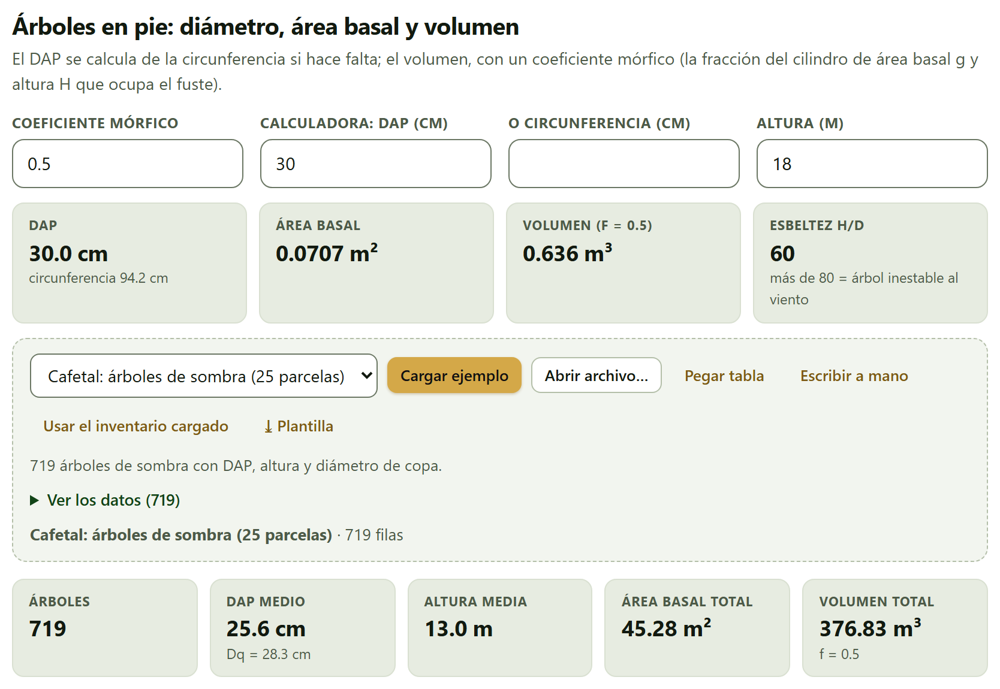
Figura 2.1.Bloque 2›Árboles en pie. La calculadora con sus valores por omisión (DAP de 30 cm y 18 m de altura) da un área basal de 0.0707 m², un volumen de 0.636 m³ con f = 0.5 y una esbeltez de 60. Abajo, los 719 árboles de sombra del cafetal de ejemplo: DAP medio de 25.6 cm, Dq de 28.3 cm, altura media de 13.0 m, 45.28 m² de área basal y 376.83 m³.
θTeoría en breve · del diámetro al volumen
El diámetro normal se mide a 1.30 m; si se midió la circunferencia C, DAP = C/π. El área basal es la sección del tronco a esa altura, g = π·DAP²/40 000 (en m², con el DAP en cm). El volumen de un árbol en pie se aproxima como el de un cilindro de esa base y esa altura, reducido por el coeficiente mórfico: V = g·H·f. Un fuste con forma de paraboloide tiene f = 0.5; según la app, los fustes de coníferas suelen quedar entre 0.42 y 0.50 y los de latifoliadas entre 0.35 y 0.48. El valor de tu especie sale de cubicar árboles derribados (sección 2.2). La esbeltez es 100·H/DAP, la altura en metros por cada metro de diámetro.
La tabla de árboles
La tarjeta de datos pide una fila por árbol con las columnas Especie, DAP (cm), Circunferencia a 1.3 m (cm), Altura total (m), Altura comercial (m), Diámetro de copa (m) y Estado. Ninguna es obligatoria, pero cada árbol necesita su DAP o su circunferencia; si trae los dos, manda el DAP. Trae dos ejemplos, Cafetal: árboles de sombra (25 parcelas) y Bosque mesófilo (24 parcelas), y el botón Usar el inventario cargado toma los árboles del Bloque 3.
Con los datos cargados aparecen cinco mosaicos (Árboles, DAP medio con el diámetro cuadrático medio debajo, Altura media, Área basal total y Volumen total); si a algunos árboles les falta la altura, el primero lo dice, y el volumen se suma sólo con los que la tienen. Siguen dos figuras, Altura y diámetro por especie (las ocho especies con más árboles en color, el resto en gris como otras) y Área basal por especie (las doce de mayor área basal), y dos tablas: Resumen por especie, ordenada por área basal, y Árbol por árbol, con el área basal, el volumen, el volumen comercial (si hay altura comercial), la esbeltez y el área de copa de cada uno; en pantalla se ven 60 filas y las descargas las llevan todas.
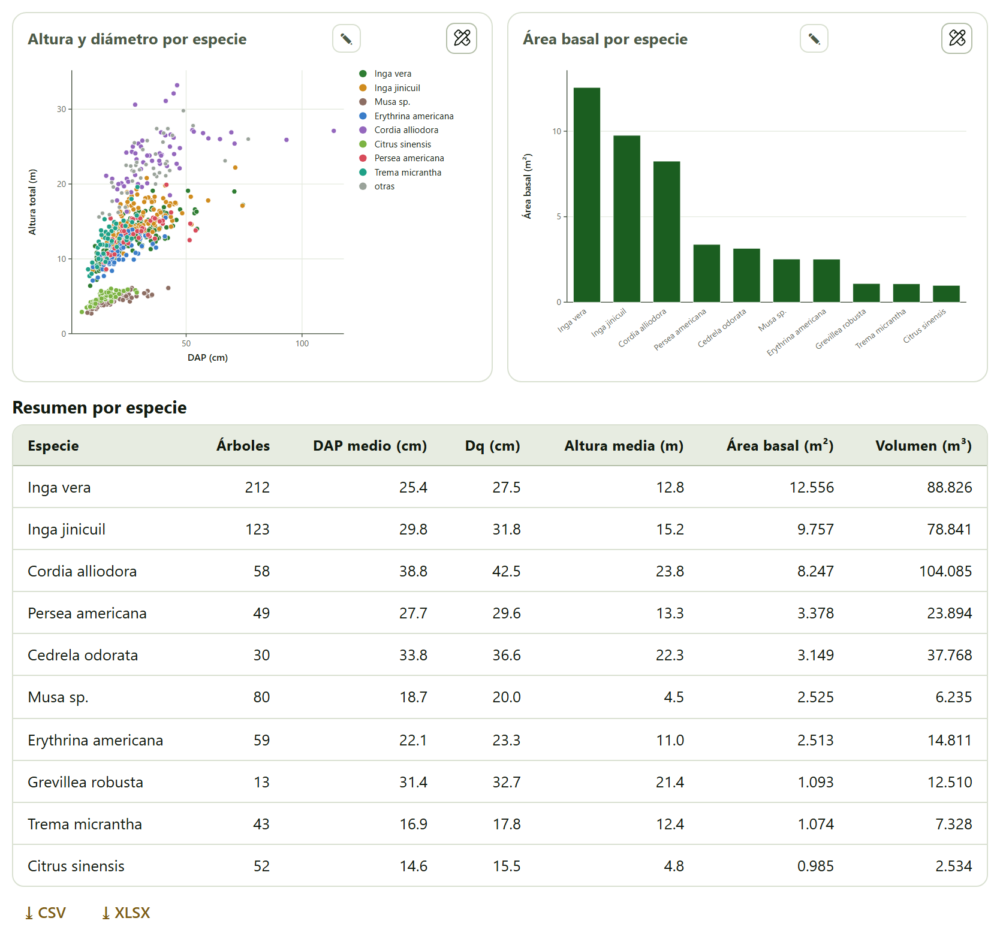
Figura 2.2. Los árboles de sombra del cafetal de ejemplo por especie. A la izquierda se separan dos grupos: los plátanos (Musa sp.) y los cítricos, bajos para su diámetro, y los árboles de sombra propiamente dichos. Inga vera tiene el mayor número de árboles (212) y la mayor área basal (12.556 m²), pero Cordia alliodora, con 58 árboles de 23.8 m de altura media, el mayor volumen (104.085 m³).
▸Ejemplo resuelto · los árboles de sombra del cafetal
La interpretación de la app dice: «Las 10 especies suman 45.28 m² de área basal; Inga vera aporta el 28 %.» El diámetro cuadrático medio (28.3 cm) es mayor que el promedio aritmético (25.6 cm) porque pesa más a los árboles gruesos; por eso es el que corresponde al área basal media. Además, 64 árboles tienen una esbeltez mayor de 80: son delgados para su altura y, según la app, más vulnerables al viento.
Cambiar el coeficiente mórfico recalcula la calculadora y la tabla a la vez. Recuerda que un solo coeficiente para todas las especies es una aproximación gruesa —en el cafetal conviven plátanos, cítricos y maderables—; para el volumen de un inventario, el Bloque 3 puede usar la ecuación ajustada en la sección 2.3.
2.2Cubicación: trozas y árboles por secciones
Cubicar es medir el volumen real de un fuste derribado, sección por sección. La tarjeta lo hace a dos escalas: una troza suelta, con tres fórmulas, y árboles completos a partir de una tabla de secciones.
Una troza: Huber, Smalian y Newton
Los campos Diámetro mayor (cm), Diámetro al centro (cm), Diámetro menor (cm) y Largo (m) describen la troza (34, 30.5 y 27 cm por 2.5 m, por omisión). Los mosaicos dan el volumen por cada fórmula y, debajo de Huber y de Smalian, su diferencia con Newton, que la app toma como referencia.
Huber: V = gm·L · Smalian: V = (g1 + g2)/2·L · Newton: V = (g1 + 4gm + g2)/6·L
Newton es exacta para un paraboloide, un cono o un neiloide; Smalian, que sólo usa los extremos, sobreestima en la base neiloide del árbol, y Huber, que sólo usa el centro, subestima. Con la troza por omisión, Huber da 0.1827 m³ (−0.4 % frente a Newton), Smalian 0.1851 m³ (0.9 %) y Newton 0.1835 m³. La diferencia crece cuanto más se aparta la troza de un tronco de cono, sobre todo en las trozas de la base.
Árboles completos
Debajo de la calculadora, Diámetro mínimo en punta (cm) (10 por omisión) fija hasta dónde llega el volumen comercial, y la casilla Sumar el tocón (cilindro) añade al total el tocón, cubicado como un cilindro con el diámetro de la primera sección. La tarjeta de datos pide una fila por sección medida: Árbol*, DAP (cm), Altura total (m)*, Altura de la sección (m)* y Diámetro de la sección (cm)*, con al menos 4 filas completas. El ejemplo Pino: 40 árboles derribados por secciones trae el diámetro con corteza a 0.3 m, a 1.3 m y cada 2.5 m hasta cerca de la punta.
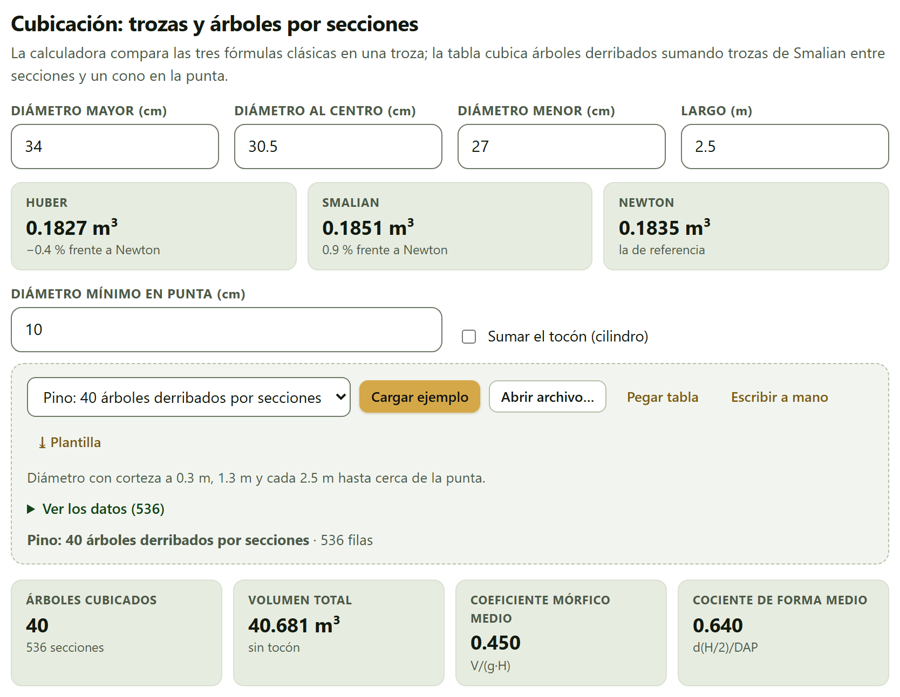
Figura 2.3.Bloque 2›Cubicación. Arriba, la troza por omisión con las tres fórmulas; abajo, los 40 pinos derribados de ejemplo: 536 secciones, 40.681 m³ sin tocón, coeficiente mórfico medio de 0.450 y cociente de forma medio de 0.640.
Cada árbol se cubica sumando trozas de Smalian entre secciones consecutivas y un cono desde la última sección hasta la punta (g·L/3). El volumen comercial llega hasta la altura en que el diámetro baja al mínimo en punta, interpolada en línea recta entre las dos secciones que la rodean. De cada árbol salen también su coeficiente mórfico, V/(g·H), y su cociente de forma, el diámetro a media altura entre el DAP.
Los resultados son cuatro mosaicos (Árboles cubicados, Volumen total, que dice si lleva tocón, Coeficiente mórfico medio y Cociente de forma medio), dos figuras y la tabla Volumen de cada árbol, que da para cada uno el volumen del fuste, el del tocón (aunque no se sume), el total, el comercial con su altura y los dos índices de forma. El árbol D01 del ejemplo, por ejemplo, de 34.6 cm y 24.89 m, tiene 1.1789 m³ en el fuste, 1.1681 m³ comerciales hasta 21.53 m y un coeficiente mórfico de 0.512.
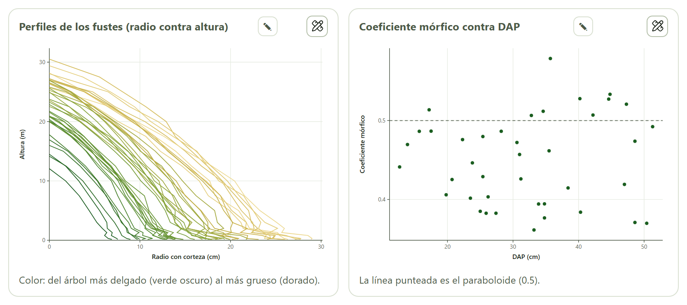
Figura 2.4. Izquierda: el perfil de cada fuste, radio con corteza contra altura, del árbol más delgado (verde oscuro) al más grueso (dorado). Derecha: el coeficiente mórfico de cada pino contra su DAP, con el paraboloide (0.5) punteado; los valores van de cerca de 0.36 a cerca de 0.58 sin una tendencia clara con el diámetro.
La interpretación resume: «El coeficiente mórfico medio de estos árboles es 0.450: menor que el del paraboloide.» Ese valor es el que conviene escribir en la sección 2.1 para árboles en pie de la misma especie y condición, aunque, como dice la propia app, las ecuaciones de la sección siguiente lo hacen mejor, porque dejan que la forma cambie con el tamaño.
2.3Ecuaciones de volumen
Una ecuación de volumen predice el volumen de un árbol en pie a partir de su DAP y su altura. Se ajusta con árboles cubicados y después se aplica a todo el inventario.
El botón Usar los árboles cubicados arriba toma el DAP, la altura y el volumen del fuste de los árboles de la sección 2.2 (más el tocón si esa casilla está marcada); si no hay árboles cubicados, un aviso pide cubicar primero. También se pueden cargar árboles propios en la tarjeta de datos, con DAP (cm)*, Altura total (m)* y Volumen (m³)*, al menos 6. Su ejemplo, Pino: volúmenes de los 40 árboles derribados, son los mismos volúmenes por Smalian, ya calculados.
La app ajusta cuatro modelos:
Modelo
Ecuación
Schumacher–Hall (no lineal)
V = b₀·Db₁·Hb₂, por mínimos cuadrados no lineales (Levenberg–Marquardt)
Schumacher–Hall (logarítmica)
ln V = b₀ + b₁ ln D + b₂ ln H
Variable combinada de Spurr
V = b₀ + b₁·D²H
Spurr logarítmica
ln V = b₀ + b₁ ln(D²H)
Las formas logarítmicas se devuelven a la escala del volumen multiplicando por el factor de Meyer, exp(σ²/2), que corrige el sesgo de deshacer el logaritmo. La tabla Comparación de modelos (escala del volumen) da para cada uno n, R², RMSE en m³ y en porcentaje del volumen medio, el sesgo y el índice de Furnival, y resalta el modelo con el menor índice. Debajo, Ver el modelo elige cuál se muestra en detalle (por omisión, el resaltado): su tabla de coeficientes con error estándar, t y p, el factor de Meyer si es logarítmico, y dos figuras, Observado contra estimado y Residuales.
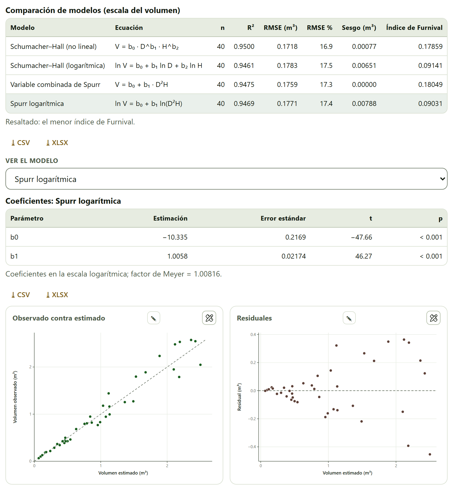
Figura 2.5. Los cuatro modelos ajustados a los 40 pinos derribados. Gana la Spurr logarítmica, con I = 0.09031, seguida de cerca por la Schumacher–Hall logarítmica (0.09141); sus coeficientes son b₀ = −10.335 y b₁ = 1.0058, con un factor de Meyer de 1.00816. Los residuales se abren en abanico conforme crece el volumen.
θTeoría en breve · por qué el índice de Furnival
R² y RMSE no sirven para comparar un modelo ajustado en volumen con uno ajustado en logaritmos: miden errores en escalas distintas. Furnival (1961) llevó todos a la misma escala: para los modelos en volumen, el índice es el error estándar residual σ̂; para los logarítmicos, σ̂ multiplicado por la media geométrica de los volúmenes, exp(media de ln V). El menor índice es el mejor. Cuando la dispersión crece con el tamaño del árbol —lo habitual—, los modelos logarítmicos, que reparten el error en proporción al volumen, suelen tener el menor índice aunque su R² en la escala del volumen sea un poco más bajo, como aquí (0.9469 frente a 0.9500 del no lineal).
La interpretación lo dice con los números del ejemplo: «El modelo con menor índice de Furnival es Spurr logarítmica (I = 0.09031; R² = 0.9469; RMSE = 17.4 % del volumen medio). La dispersión de los residuales crece con el tamaño del árbol (heterocedasticidad); las formas logarítmicas la estabilizan y por eso suelen ganar.» La segunda frase sólo aparece cuando la dispersión de la mitad de los árboles más grandes es más de 1.8 veces la de la mitad más chica.
iLa ecuación ganadora pasa al Bloque 3
El modelo con el menor índice de Furnival queda disponible en Bloque 3›Expansión a la hectárea como Ecuación ajustada en el Bloque 2. Es el ganador el que pasa, no el que estés viendo en Ver el modelo.
2.4Ahusamiento
Una función de ahusamiento describe el diámetro del fuste a cualquier altura. Con ella se calcula hasta dónde llega el diámetro comercial y cuántas trozas de un largo dado salen de un árbol en pie, con el volumen de cada una.
El botón Ajustar con las secciones cargadas arriba ajusta dos modelos al perfil relativo —el diámetro entre el DAP, d/D, contra la altura entre la altura total, z = h/H— de todas las secciones de la sección 2.2; si no hay secciones cargadas, carga primero las del pino de ejemplo.
Modelo
Forma
Kozak, Munro y Smith (1969)
(d/D)² = b₁(z − 1) + b₂(z² − 1): una sola parábola, por mínimos cuadrados sin intercepto
Max y Burkhart (1976)
tres segmentos —neiloide en la base, paraboloide en el centro y cono en la punta— unidos en los puntos a₂ y a₁: (d/D)² = b₁(z − 1) + b₂(z² − 1) + b₃(a₁ − z)²I₁ + b₄(a₂ − z)²I₂, con Ii = 1 si z ≤ ai; por mínimos cuadrados no lineales con varios arranques
La tabla Comparación (en diámetro) da, para cada modelo, las secciones usadas, R² y RMSE del diámetro, el sesgo y el AIC; siguen la tabla de coeficientes de cada uno y la figura Perfil relativo del fuste, con todas las secciones como puntos grises y las dos curvas.
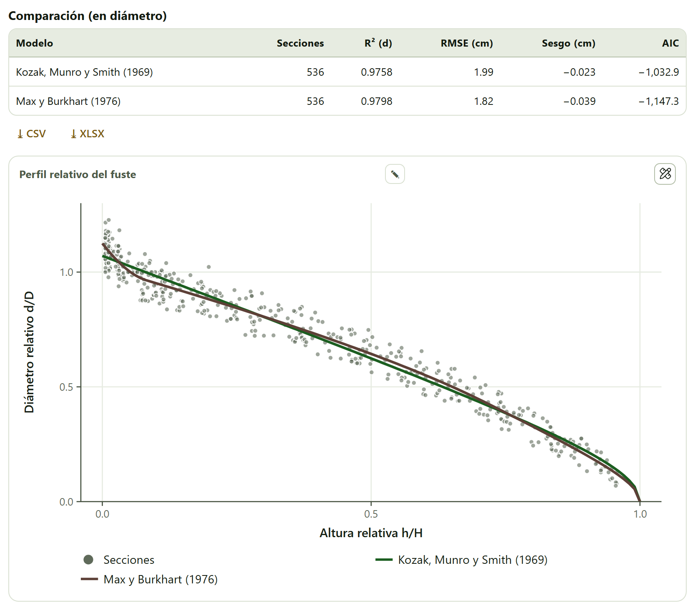
Figura 2.6. El ahusamiento de los pinos de ejemplo (sin las tablas de coeficientes, que en la app van entre la comparación y la figura). Max y Burkhart gana en todo: RMSE de 1.82 cm frente a 1.99 cm y AIC de −1,147.3 frente a −1,032.9. En la base, su curva sigue el ensanchamiento del tocón que la parábola de Kozak no alcanza.
Los coeficientes del ejemplo son b₁ = −1.8810 y b₂ = 0.73497 para Kozak, y b₁ = −2.8202, b₂ = 1.2679, b₃ = −1.0119, b₄ = 32.658, a₁ = 0.71088 y a₂ = 0.082897 para Max y Burkhart: el paraboloide empieza a volverse cono hacia el 71 % de la altura y el neiloide de la base ocupa el 8 % inferior. En Max y Burkhart, b₁, b₂ y b₃ tienen errores estándar grandes (valores p de 0.015, 0.054 y 0.099): es lo normal en un modelo segmentado, cuyos coeficientes se compensan entre sí; lo que importa es el perfil que dibujan juntos.
Las trozas de un árbol
Con el perfil ajustado, los campos DAP del árbol (cm), Altura total (m), Diámetro en punta (cm), Largo de troza (m), Altura del tocón (m) y Modelo (Max–Burkhart o Kozak 1969) describen un árbol en pie y cómo se troceará. La app da el volumen total del fuste, la altura a la que el diámetro baja al mínimo en punta y las trozas enteras que caben desde el tocón hasta esa altura, con su volumen comercial; la tabla Trozas del árbol da para cada troza dónde empieza y termina, sus diámetros mayor y menor y su volumen, y la figura El fuste y sus trozas dibuja el fuste a escala con un corte punteado por troza y, en dorado, la altura al diámetro mínimo.
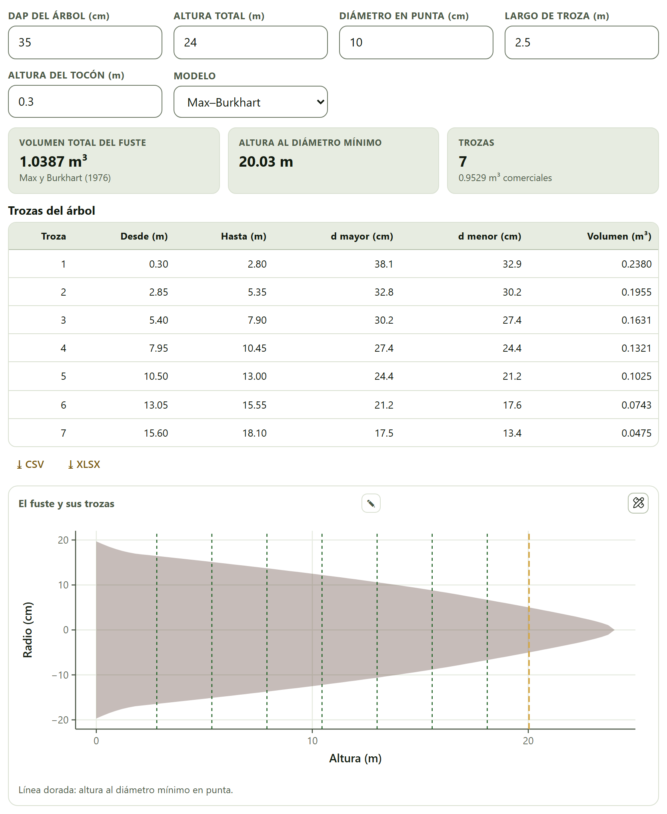
Figura 2.7. Un pino de 35 cm y 24 m (los valores por omisión) con el modelo de Max y Burkhart: 1.0387 m³ en el fuste, el diámetro llega a 10 cm a los 20.03 m y salen 7 trozas de 2.5 m con 0.9529 m³ comerciales. La primera, de 0.30 a 2.80 m, pasa de 38.1 a 32.9 cm y tiene 0.2380 m³.
Fíjate en la columna Desde (m): cada troza empieza 5 cm después de donde terminó la anterior (2.80 → 2.85 m). La app deja ese margen de despunte entre trozas; no hay un campo para cambiarlo. Por eso, en el ejemplo, una octava troza ya no cabe: empezaría en 18.15 m y terminaría en 20.65 m, por encima de los 20.03 m del diámetro mínimo. El volumen entre dos alturas se integra numéricamente sobre el perfil (regla de Simpson, 400 intervalos), y la altura al diámetro mínimo se resuelve por el método de Brent. Cambiar cualquiera de estos campos recalcula al soltar el control.
2.5Relación altura–diámetro
Medir la altura de todos los árboles cuesta; medir el diámetro, poco. Lo habitual es medir la altura a una parte de los árboles, ajustar una curva altura–diámetro y estimar con ella la altura del resto.
La tarjeta de datos pide Árbol, Especie, DAP (cm)* y Altura total (m) — vacía si falta, con al menos 6 árboles con altura medida (mayor de 1.3 m). Sus ejemplos son Pino: parcela con alturas faltantes (85 árboles; a 28 les falta la altura) y Bosque mesófilo: Liquidambar (los árboles de una sola especie, para una curva propia); Usar el inventario cargado toma los árboles del Bloque 3. Debajo de la tarjeta, Especie ajusta la curva con todos los árboles (Todas) o con una sola especie, y Curva para estimar elige con cuál curva se estiman las alturas faltantes: La de menor AIC, que es la opción por omisión, o una en particular.
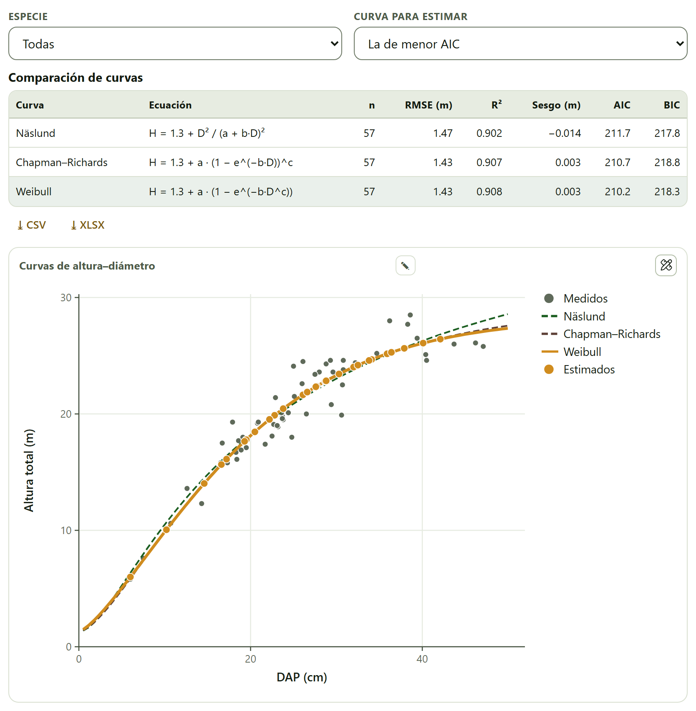
Figura 2.8. La parcela de pino con alturas faltantes. Con 57 árboles medidos, Weibull tiene el menor AIC (210.2), muy cerca de Chapman–Richards (210.7) y de Näslund (211.7), y un RMSE de 1.43 m; con ella se estimaron las 28 alturas que faltaban. Sus coeficientes, en una tabla que la captura omite, son a = 26.971, b = 0.016834 y c = 1.3559; su asíntota, 1.3 + a = 28.3 m, es la altura máxima que predice.
Las tres curvas pasan por H = 1.3 m cuando el diámetro tiende a cero:
Curva
Ecuación
Näslund
H = 1.3 + D²/(a + bD)²
Chapman–Richards
H = 1.3 + a(1 − e−bD)c
Weibull
H = 1.3 + a(1 − e−bDc)
Se ajustan por mínimos cuadrados no lineales; Näslund arranca de su forma linealizada, D/√(H − 1.3) = a + bD. La tabla Comparación de curvas da n, RMSE, R², sesgo, AIC y BIC, y resalta la curva que se usa para estimar; siguen sus coeficientes y la figura Curvas de altura–diámetro, con los árboles medidos en gris, las tres curvas (la elegida con línea continua y gruesa) y las alturas estimadas como puntos naranjas sobre ella.
La tabla Alturas estimadas da la altura de cada árbol que no la tenía (el árbol 3, de 34.1 cm, 24.7 m), y el botón ⤓ Tabla completa con alturas rellenas (CSV) descarga los 85 árboles con su altura medida o estimada y una columna altura_estimada que vale 1 en las estimadas. La interpretación cierra con una advertencia que conviene tomar en serio: «Fuera del intervalo de diámetros medidos (6.0–47.1 cm) las curvas pueden separarse: no extrapoles lejos de él.» En la figura se ve: arriba de 45 cm, Näslund ya se aparta de las otras dos.
!Una curva por especie, cuando se puede
En un rodal mezclado, una sola curva para todas las especies promedia formas de crecer muy distintas. Si una especie tiene suficientes árboles medidos, elige esa especie en Especie para su propia curva. El Bloque 3 también estima las alturas que faltan (casilla Estimar las alturas faltantes (Näslund)), pero con una sola curva de Näslund para todo el inventario.
✓Regla de decisión
Si la esbeltez de un árbol pasa de 80
entonces es delgado para su altura y, según la app, inestable al viento.
Si no tienes árboles cubicados de tu especie
entonces usa un coeficiente mórfico de la literatura con cautela; si los tienes, el medio de la sección 2.2 o, mejor, una ecuación de volumen.
Si comparas ecuaciones de volumen con y sin logaritmo
entonces decide por el índice de Furnival, no por R²; el menor es el mejor.
Si dos curvas difieren en menos de 2 unidades de AIC
entonces son prácticamente equivalentes dentro de los datos; elige la más sencilla o la que se comporte mejor en los extremos.
Si los coeficientes de Max y Burkhart tienen errores estándar grandes
entonces no es un mal ajuste en sí: mira el RMSE, el AIC y el perfil dibujado.
Si vas a estimar alturas o volúmenes fuera del intervalo de diámetros con que se ajustó la curva
entonces no lo hagas lejos de él: las curvas extrapolan distinto.
Son guías para interpretar, no leyes: lo que sabes de la especie y del sitio manda.
✕Cuando algo sale mal
«Ningún árbol tiene al menos dos secciones». La cubicación necesita dos o más secciones por árbol; revisa que la columna Árbol esté bien emparejada y que cada árbol no tenga un identificador distinto en cada fila. «Primero cubica árboles en la sección anterior».Usar los árboles cubicados arriba necesita la tabla de secciones cargada en la 2.2. «Hacen falta al menos 6 árboles…». Las ecuaciones de volumen y las curvas de altura piden seis árboles completos; en la curva de altura sólo cuentan los de más de 1.3 m. «Ningún modelo convergió» o «Ninguna curva convergió». Suele pasar con muy pocos árboles o con unidades cruzadas: el DAP en metros o la altura en centímetros. Volúmenes diez mil veces más chicos o más grandes. El DAP va en centímetros y las alturas y el largo en metros; el área basal sale en m².
iMétodos y fuentes
Cada tarjeta cita sus fuentes en su recuadro Método y fuentes: Husch, Beers y Kershaw (2003) y Avery y Burkhart (2002) para las medidas del árbol; Smalian (1837) para la cubicación; Schumacher y Hall (1933), Spurr (1952), Meyer (1941), Furnival (1961) y Marquardt (1963) para las ecuaciones de volumen; Kozak, Munro y Smith (1969) y Max y Burkhart (1976) para el ahusamiento; Näslund (1937), Richards (1959), Yang, Kozak y Smith (1978) y Mehtätalo, de-Miguel y Gregoire (2015) para las curvas de altura. Las referencias completas están en el apéndice F.
3
Capítulo tres · Bloque 3
Inventario forestal y muestreo
Un inventario mide unos cuantos árboles en unas cuantas parcelas y dice algo de todo el predio. Este bloque hace ese salto: expande cada árbol a la hectárea según la parcela en que se midió, estima la media del predio con su error de muestreo según el diseño con que se tomaron las parcelas, calcula cuántas parcelas harían falta, procesa la relascopía y describe la estructura del rodal. El inventario que cargas aquí es el que usan después los bloques 4, 6, 7 y 8.
3.1El inventario: árboles y parcelas
3.2Expansión a la hectárea
3.3Estimación y error de muestreo
3.4Tamaño de muestra
3.5Relascopía (muestreo puntual)
3.6Estructura del rodal
El bloque se presenta así: Carga los árboles y, si las tienes, las parcelas (con su forma, tamaño, estrato y coordenadas). El inventario queda disponible para la biomasa, la diversidad, la agroforestería y el mapa. Todo lo demás se calcula solo en cuanto hay árboles: no hay botón de calcular, y cada cambio de un control rehace las cuentas que dependen de él.
El capítulo usa los dos inventarios de ejemplo. El cafetal bajo sombra (Empezar con un ejemplo → en la portada) tiene 25 parcelas circulares iguales agrupadas en fincas, sin superficie por estrato: sirve para el muestreo aleatorio, el sistemático y el de conglomerados. El bosque mesófilo estratificado (Datos de ejemplo›Abrir en Inventario de su tarjeta) tiene parcelas anidadas en tres estratos con su superficie: sirve para el estratificado, la relascopía y la estructura de un bosque irregular.
3.1El inventario: árboles y parcelas
La tarjeta tiene dos tarjetas de datos, una debajo de la otra. Su subtítulo lo resume: Una fila por árbol con su parcela; una fila por parcela con su diseño. Si no cargas parcelas, todas toman el diseño de abajo.
Árboles
Una fila por árbol. Son obligatorias Parcela* y DAP (cm)*; las demás son opcionales: Estrato, Especie, Familia, Altura total (m), Diámetro de copa (m), Estado (vivo / muerto) y las coordenadas x (m) y y (m) de cada árbol desde el centro de su parcela. Un árbol cuenta como muerto en pie si su estado contiene «muert», «seco» o «tocón», con acento o sin él, o «dead», «stump» o «snag» en inglés; cualquier otro valor, o ninguno, lo deja vivo. Los ejemplos son Cafetal bajo sombra: árboles y Bosque mesófilo: árboles; al cargar cualquiera de los dos se cargan también sus parcelas.
Parcelas (opcional)
Una fila por parcela, con Parcela* (el mismo identificador que en los árboles) y, según el caso, Estrato, Superficie del estrato (ha), Conglomerado, las medidas de la parcela y sus coordenadas Latitud y Longitud. El diseño de cada parcela se lee de sus columnas en este orden:
Tabla 3.1. Cómo lee la app el diseño de cada parcela
Si la parcela tiene…
la app la toma como
Radio (m), Radio de la subparcela (m) y DAP de corte entre parcelas (cm)
circular anidada: los árboles con DAP mayor o igual al corte se midieron en el círculo grande; los menores, en el chico
sólo Radio (m)
circular
Lado del cuadrado (m)
cuadrada
Largo (m) y Ancho (m)
rectangular
sólo Superficie de la parcela (m²)
una parcela de esa superficie, sin forma
nada de lo anterior, o no está en la tabla
el diseño por omisión
El recuadro desplegable Diseño por omisión y superficie del predio tiene el diseño que toman las parcelas sin el suyo —Forma (Circular, Cuadrada, Rectangular o Circular anidada) con sus medidas: Radio (m) 17.84, Lado (m) 31.62, Largo (m) 50, Ancho (m) 20, Radio de la subparcela (m) 5.64 y DAP de corte (cm) 10, que corresponden a 1 000 m² y, la subparcela, a 100 m²— y la Superficie total (ha) del predio (100 por omisión), que da el total del predio en la estimación.
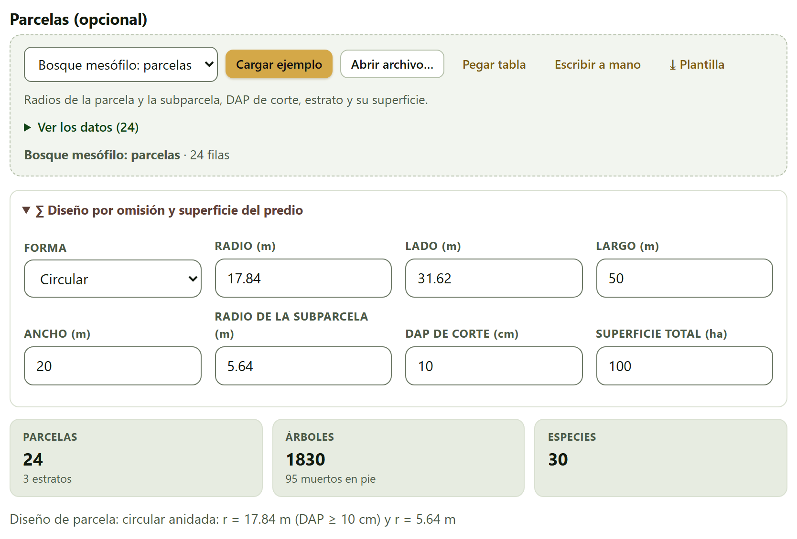
Figura 3.1. El bosque mesófilo de ejemplo cargado, con el diseño por omisión desplegado. Las parcelas traen su propio diseño, así que el de omisión no se usa: la línea de abajo dice que son circulares anidadas de 17.84 m de radio para los árboles de 10 cm o más y de 5.64 m para los menores. Hay 24 parcelas en 3 estratos, 1830 árboles (95 muertos en pie) y 30 especies.
Los mosaicos cuentan las parcelas (con el número de estratos), los árboles (con los muertos en pie), las especies y, si los hay, los conglomerados y las alturas estimadas. El cafetal de ejemplo da 25 parcelas en 4 estratos —los cuatro manejos—, 719 árboles con 25 muertos en pie, 10 especies y 5 conglomerados, y la línea de diseño dice circular de 999.9 m² (r = 17.84 m). Esa línea es la primera comprobación que debes hacer: si la superficie no es la que mediste en campo, todo lo que sigue sale mal.
!Una parcela sin árboles también cuenta
Las parcelas de la tabla de parcelas que no tienen ningún árbol entran en el inventario con cero árboles por hectárea. Es lo correcto —una parcela vacía es una medición—, pero sólo si está en la tabla de parcelas: si no cargas esa tabla, una parcela sin árboles simplemente no existe para la app.
3.2Expansión a la hectárea
Cada árbol medido vale por varios árboles por hectárea: Cada árbol representa 10 000/a árboles por hectárea, con a la superficie de la parcela (o de la subparcela que le toca por su diámetro).
FE = 10 000 / a · N = Σ FE · G = Σ FE·g · V = Σ FE·v · Dq = √(Σ FE·d²/N)
En una parcela de 1 000 m², cada árbol vale 10 árboles por hectárea; en la subparcela de 100 m² del mesófilo, 100. Tres controles deciden cómo se calcula el volumen de cada árbol: Volumen de cada árbol elige entre g · H · coeficiente mórfico, con el Coeficiente mórfico de al lado (0.5), y Ecuación ajustada en el Bloque 2, que usa el modelo ganador de la sección 2.3 si lo hay (si no, sigue con el coeficiente). La casilla Estimar las alturas faltantes (Näslund), marcada por omisión, ajusta una curva de Näslund con los árboles del mismo inventario que sí tienen altura (hacen falta al menos 6) y estima con ella la de los demás; el mosaico Alturas estimadas de la sección 3.1 dice cuántas fueron. Sin altura no hay volumen: si a un árbol le falta, el volumen de su parcela no se puede calcular y la estimación del volumen lo avisa.
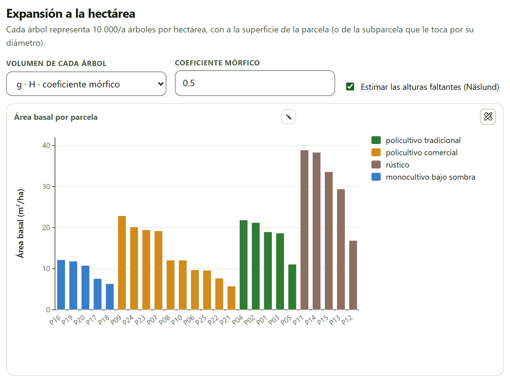
Figura 3.2. El área basal por hectárea de cada parcela del cafetal de ejemplo, agrupada por manejo y ordenada de mayor a menor dentro de cada uno. Las parcelas del manejo rústico tienen las mayores áreas basales (de 16.86 a 38.90 m²/ha) y las del monocultivo bajo sombra las menores (de 6.35 a 12.17 m²/ha).
Debajo de la figura, la tabla Valores por hectárea de cada parcela da, para cada una, su estrato, los árboles medidos, N, G y V por hectárea, el diámetro cuadrático medio, la altura dominante y los muertos en pie por hectárea. La parcela P01 del cafetal, por ejemplo, con 38 árboles, tiene 380 árboles/ha, 18.97 m²/ha, 141.2 m³/ha, un Dq de 25.2 cm y una altura dominante de 16.5 m. Los muertos en pie se cuentan aparte y no entran en N, G ni V: P01 tiene 0, P04 tiene 40 árboles muertos por hectárea.
θTeoría en breve · la altura dominante
La app usa la definición de Assmann: la altura media de los 100 árboles más gruesos por hectárea, contando cada árbol tantas veces como su factor de expansión. En una parcela de 1 000 m², son los 10 árboles más gruesos. Es la altura que usan el índice de sitio (Bloque 5) y el índice de Hart–Becking (sección 3.6), porque depende poco de los aclareos.
3.3Estimación y error de muestreo
Ésta es la sección que responde la pregunta principal de un inventario: cuánto hay por hectárea en el predio y con qué precisión.
Cuatro controles: Variable (Densidad (árboles/ha), Área basal (m²/ha) o Volumen (m³/ha)), Diseño, Confianza (90, 95 o 99 %) y la casilla Corrección por población finita. Cada vez que cargas una tabla de árboles o de parcelas, la app elige el diseño: Estratificado si hay dos o más estratos y todas las parcelas traen la superficie de su estrato, y Muestreo aleatorio simple en cualquier otro caso; así, el mesófilo de ejemplo abre en estratificado y el cafetal en aleatorio simple. Mientras no cargues otra tabla, el diseño es el que tú elijas.
Tabla 3.2. Los cuatro diseños
Diseño
Qué hace y qué necesita
Muestreo aleatorio simple
La media de las parcelas y su varianza s²/n; con la corrección, multiplicada por (1 − n/N). Sólo necesita las parcelas
Estratificado
La media de cada estrato pesada por su proporción de superficie, Wh, con la varianza Σ Wh² sh²/nh de la asignación que realmente se hizo y los grados de libertad efectivos de Satterthwaite. Necesita al menos 2 estratos con superficie y 2 parcelas en cada uno
Sistemático (diferencias sucesivas)
La media simple con la varianza de las diferencias entre parcelas vecinas de la malla, Σ(yi+1 − yi)²/(2n(n − 1)). El orden de la malla es el de los identificadores de las parcelas, en orden natural (P2 antes que P10)
En conglomerados
El estimador de razón Σyi/Σmi con conglomerados de tamaño desigual, cuyos grados de libertad son los conglomerados menos uno. Necesita la columna Conglomerado en las parcelas
Los mosaicos dan la Media con la mitad del intervalo, el Error estándar con sus grados de libertad, el Error de muestreo en porcentaje —t·EE/media·100, en verde si es de 10 % o menos, en ámbar hasta 20 % y en rojo arriba de 20 %—, el Intervalo de confianza y el Total del predio con su intervalo. Sigue la tabla La misma variable con cada diseño, con una fila por cada diseño que los datos permiten y la del elegido resaltada; su columna Nota da el error estándar con la asignación de Neyman (estratificado), el que tendría la malla tratada como aleatoria (sistemático) o el efecto del diseño (conglomerados). En el estratificado aparecen además la tabla Por estrato y una figura con la media y el intervalo de cada estrato y el de la estimación estratificada.
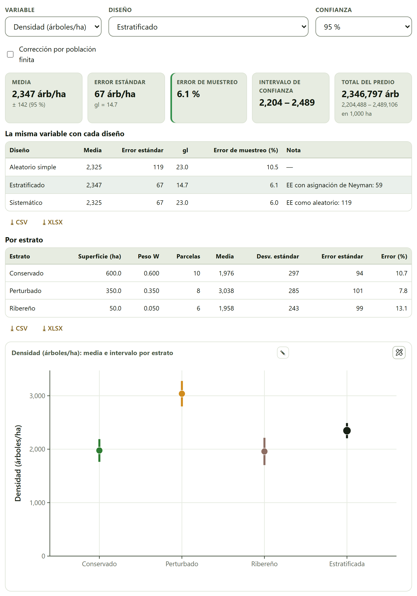
Figura 3.3. La densidad del bosque mesófilo de ejemplo con el diseño estratificado, que la app eligió sola: 2,347 árboles/ha ± 142, con un error de muestreo de 6.1 % y 14.7 grados de libertad efectivos. Como aleatorio simple, el error sería de 10.5 %. La figura da, de izquierda a derecha, la media y el intervalo de Conservado, Perturbado, Ribereño y la estimación estratificada.
▸Ejemplo resuelto · estratificar el bosque mesófilo
Los tres estratos tienen densidades muy distintas: 1,976 árboles/ha en el conservado (600 ha, 10 parcelas), 3,038 en el perturbado (350 ha, 8 parcelas) y 1,958 en el ribereño (50 ha, 6 parcelas). Tratadas como una sola muestra, esas diferencias inflan la varianza; separadas por estrato, no. Por eso la interpretación dice que «Estratificar rinde 3.16 veces la precisión de tratar las parcelas como una sola muestra aleatoria». La media estratificada (2,347) tampoco es la simple (2,325): pesa cada estrato por su superficie, no por su número de parcelas, y el ribereño tiene seis parcelas en sólo el 5 % del predio.
El total del predio del estratificado se calcula con la suma de las superficies de los estratos (1,000 ha en el mesófilo: 2,346,797 árboles), no con la Superficie total (ha) del diseño por omisión, que usan los otros tres diseños. Si las dos cifras no coinciden, revisa cuál es la buena.
El cafetal: aleatorio, sistemático y conglomerados
Con el cafetal de ejemplo, la densidad es de 278 árboles/ha, con un error estándar de 25 y 24 grados de libertad: un error de muestreo de 18.3 % al 95 % y un intervalo de 227 a 328 (la figura I.5 de la introducción muestra esta tarjeta). En las 100 ha por omisión, el total es de 27,764 árboles. La tabla por diseño da dos lecturas más del mismo inventario:
Tabla 3.3. La densidad del cafetal de ejemplo con cada diseño (95 % de confianza)
Diseño
Media
Error estándar
gl
Error de muestreo (%)
Nota
Aleatorio simple
278
25
24.0
18.3
—
Sistemático
278
14
24.0
10.2
EE como aleatorio: 25
Conglomerados
278
53
4.0
52.7
efecto del diseño: 4.61
Las tres medias son iguales; lo que cambia es cuánto se sabe. Como malla sistemática, las parcelas vecinas se parecen y la varianza por diferencias sucesivas baja el error a 10.2 %. Como conglomerados —las cinco fincas—, el error sube a 52.7 %: las parcelas de una misma finca se parecen tanto que, según el efecto del diseño de 4.61, valen como menos de un cuarto de parcelas independientes, y sólo quedan 4 grados de libertad. Con el área basal pasa lo mismo: 17.45 m²/ha con 22.4 % como aleatorio, 18.0 % como sistemático y 60.0 % como conglomerados; con el volumen, 145.5 m³/ha con 27.3, 23.7 y 71.7 %.
!El diseño no se elige por el error que da
La tabla por diseño sirve para entender el inventario, no para escoger el diseño con el error más bajo. El diseño correcto es el que se usó en campo: si las parcelas se tomaron por fincas, el error es el de conglomerados, aunque sea el peor. La varianza sistemática, además, sólo es válida si el orden de los identificadores sigue la malla.
La corrección por población finita usa como número de parcelas posibles la superficie total entre la superficie media de las parcelas (en el cafetal, 100 ha / 0.1 ha = 1 000 parcelas). Con 25 de 1 000 parcelas medidas, apenas cambia nada: el error estándar baja de 25 a 24 y el error de muestreo de 18.3 a 18.0 %. Importa cuando se mide una fracción grande del predio. Cuando el error pasa de 10 %, la interpretación dice cuántas parcelas harían falta para bajar a ese valor con el coeficiente de variación del inventario: en el cafetal, unas 78 (CV de 44 %).
3.4Tamaño de muestra
Antes de salir al campo, o para planear la segunda fase de un inventario, la pregunta es la inversa: ¿Cuántas parcelas hacen falta para un error de muestreo dado?
Los campos son Coeficiente de variación (%) (40 por omisión), Error permisible (%) (10), Parcelas posibles N (vacío = infinita), Confianza y Asignación por estrato (Óptima (Neyman) o Proporcional). El botón Tomar el CV del inventario cargado escribe el coeficiente de variación de la variable elegida en la sección 3.3, calculado como muestreo aleatorio simple. Los resultados se recalculan al escribir y al cargar un inventario; con los valores por omisión (CV de 40 % y error de 10 %) piden 64 parcelas (t = 1.998 con 63 gl).
n = t²·CV²/E² · con N parcelas posibles: n = t²·CV²/(E² + t²·CV²/N)
Como t depende de los grados de libertad, que dependen de n, la app empieza con la t de 30 grados de libertad y repite con n − 1 hasta que n deja de cambiar. Los mosaicos dan las Parcelas necesarias con la t final, las que harían falta Sin corrección finita (si diste N) y las Iteraciones.
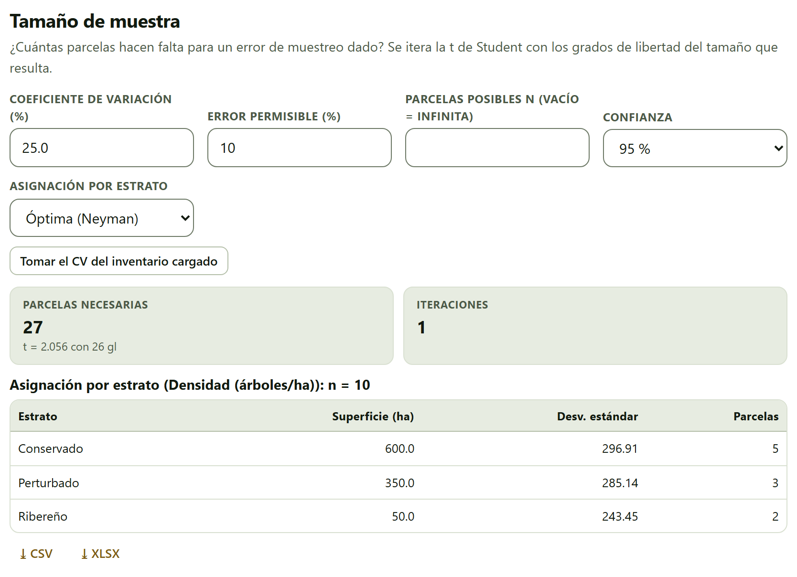
Figura 3.4. El tamaño de muestra con el CV de la densidad del bosque mesófilo de ejemplo (25.0 %): 27 parcelas para un error de 10 % al 95 % (t = 2.056 con 26 gl). Con los tres estratos y la asignación de Neyman, la tabla da n = 10 y reparte 5, 3 y 2 parcelas.
Si el inventario cargado tiene estratos con superficie, la tabla Asignación por estrato calcula el tamaño de un muestreo estratificado con la desviación estándar y la media de cada estrato y lo reparte: en proporción a Whsh con la asignación óptima de Neyman, o a Wh con la proporcional. Las parcelas se reparten en números enteros que suman el n del título: ningún estrato recibe menos de 2, y las demás se asignan por los mayores residuos; si el mínimo de 2 hace que la suma pase del n calculado, el título da esa suma. En el mesófilo, el ribereño, con el 5 % de la superficie, recibiría menos de una parcela y recibe 2: por eso n = 10 (5 + 3 + 2). La tabla usa la variable elegida en la sección 3.3 y se rehace al cargar el inventario o al tocar un campo de esta tarjeta. La comparación enseña lo que vale estratificar: 10 parcelas en lugar de 27 para el mismo error.
▸Ejemplo resuelto · el cafetal
Con el cafetal cargado y la densidad como variable, Tomar el CV del inventario cargado escribe 44.2 % y la app pide 78 parcelas para un error de 10 % (t = 1.991 con 77 gl, en 2 iteraciones): tres veces las 25 que se midieron. Es el mismo número que da la interpretación de la sección 3.3.
3.5Relascopía (muestreo puntual)
En el muestreo puntual no hay parcela: desde cada punto se miran los árboles con un relascopio o una cuña y se cuentan los que quedan «dentro», es decir, los que se ven más anchos que el ángulo del instrumento. Cada árbol contado representa FAB/g árboles por hectárea.
Los campos son Factor de área basal (m²/ha) (2 por omisión) y Coeficiente mórfico (0.5), para el volumen. La tarjeta de datos pide una fila por árbol contado: Punto*, Especie, DAP (cm)* y Altura (m). Su ejemplo es Bosque mesófilo: 15 puntos, FAB = 2, con 235 árboles; no se carga con el inventario del mesófilo, sino desde esta misma tarjeta.
por punto: G = FAB × árboles contados · N = Σ FAB/gi · V = Σ FAB·vi/gi
Un árbol de diámetro d (cm) entra si está a menos de R = d/(2√FAB) metros del punto: con FAB = 2, un árbol de 30 cm entra hasta a 10.6 m. Los gruesos se ven desde más lejos que los delgados, y así la muestra queda pesada por el área basal sin medir ninguna parcela. Entre puntos, la estimación es la del muestreo aleatorio simple, al 95 %.
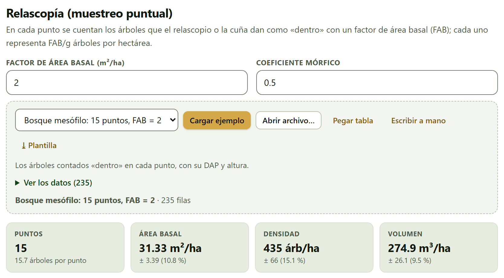
Figura 3.5. Los 15 puntos de relascopía del bosque mesófilo de ejemplo con FAB = 2: 15.7 árboles contados por punto, 31.33 ± 3.39 m²/ha de área basal (10.8 %), 435 ± 66 árboles/ha (15.1 %) y 274.9 ± 26.1 m³/ha (9.5 %).
La tabla Por punto da los árboles contados y G, N y V por hectárea de cada punto: en R01 se contaron 21 árboles, que con FAB = 2 son 42.0 m²/ha. La interpretación compara el promedio con el intervalo recomendado de 7 a 15 árboles por punto. En el ejemplo, con 15.7, dice que son «muchos; un FAB mayor ahorraría tiempo sin perder mucha precisión».
iLa relascopía no mide lo mismo que las parcelas
La densidad de la relascopía (435 árboles/ha) no se compara con la de las parcelas del mesófilo (más de 2,300): las parcelas anidadas incluyen los árboles desde 2.5 cm de DAP, y en la relascopía los árboles delgados casi nunca quedan «dentro». El área basal, en cambio, sí es comparable, porque la dominan los árboles gruesos. El resultado de la relascopía no entra en el inventario que usan los otros bloques.
3.6Estructura del rodal
La última tarjeta describe cómo está hecho el rodal: cómo se reparten los diámetros, qué especies dominan, qué tan denso está y cuánta competencia tiene cada árbol. Usa sólo los árboles vivos, y hacen falta al menos 10.
Los controles son Ancho de clase (cm) (5), Weibull (2 parámetros o 3 parámetros), DAP mínimo medido (cm), Estrato (Todos o uno) y Radio de Hegyi (m) (6). DAP mínimo medido (cm) es el diámetro desde el que se midieron los árboles; al cargar un inventario, la app propone el menor DAP, redondeado hacia abajo al medio centímetro (2.5 cm en el mesófilo, 5 cm en el cafetal), y vacío significa sin corte.
Distribución diamétrica y modelo de Weibull
La figura da los árboles por hectárea en cada clase diamétrica, ya expandidos, con la curva de Weibull ajustada encima. La Weibull se ajusta por máxima verosimilitud con cada árbol pesado por su factor de expansión, para que los árboles de la subparcela chica cuenten lo que representan; con 3 parámetros, la ubicación a se busca por verosimilitud perfilada por debajo del diámetro más chico. Si hay un DAP mínimo medido t, la distribución se trunca por la izquierda —la densidad se divide entre la probabilidad de pasar de t—, porque los árboles más delgados existen pero no se midieron; la curva se rotula entonces Weibull 2p truncada y las clases empiezan en t, de modo que la primera barra es una clase entera como las demás.
La tabla Parámetros y bondad de ajuste da la ubicación, la escala b, la forma c, el DAP mínimo medido, truncamiento (cm), el DAP medio del modelo, Árboles / tamaño efectivo (Kish) y dos pruebas de bondad de ajuste con los mismos pesos del ajuste: Kolmogorov–Smirnov D (ponderado), con un valor p asintótico (conservador, porque los parámetros salen de la misma muestra), y χ² por clases con frecuencias esperadas de 5 o más. Las dos usan el tamaño efectivo de Kish, (Σw)²/Σw², en lugar del número de árboles: con parcelas anidadas, los árboles de la subparcela pesan diez veces más y la muestra vale como una mucho menor.
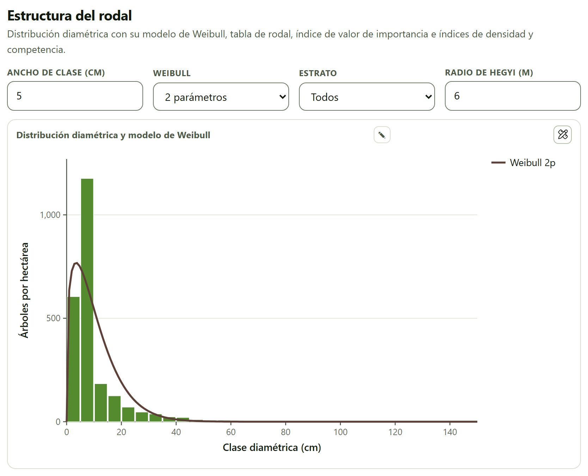
Figura 3.6. La distribución diamétrica del bosque mesófilo de ejemplo, todos los estratos: la Weibull de 2 parámetros truncada en 2.5 cm tiene b = 5.620 cm y c = 0.793, con un DAP medio de 10.15 cm. Los 1735 árboles vivos valen, con sus pesos, como 706.9 (tamaño efectivo de Kish); las dos pruebas rechazan el ajuste (D = 0.119; χ² = 49.91 con 6 gl).
La interpretación lee la forma c: menor de 1.2, «una J invertida» (muchos árboles delgados y pocos gruesos, típica de un bosque irregular o en regeneración); de 1.2 a 3, una distribución sesgada a la derecha; de 3 o más, una campana casi simétrica, típica de un rodal coetáneo. El mesófilo, con c = 0.79, es una J invertida; el cafetal, truncado en 5 cm, con c = 2.09 (b = 28.203 cm, DAP medio de 25.57 cm), es una distribución sesgada a la derecha. Si la prueba de Kolmogorov–Smirnov rechaza el ajuste, la interpretación lo dice y sugiere una mezcla de cohortes o de estratos. En el cafetal la rechaza con D = 0.065 y p = 0.006 (χ² = 51.91 con 12 clases y 9 gl, con 694 árboles cuyo tamaño efectivo es también 694, porque todas las parcelas pesan igual); en el mesófilo, con D = 0.119 y p < 0.001.
!Escribe el DAP mínimo con que se midió
Sin truncamiento, la Weibull supone que hay árboles desde 0 cm y los busca donde no se midieron. En el mesófilo de ejemplo, borrar el DAP mínimo cambia la forma de 0.79 a 1.285 —de una J invertida a una distribución sesgada—, sube D de 0.119 a 0.190 y el χ² de 49.91 a 237.22. Si tu inventario midió desde un diámetro, escríbelo aquí, aunque la app ya proponga el menor DAP de los datos. La Weibull de 3 parámetros es otra manera de mover el origen, pero la app avisa cuando su ubicación queda a menos de 1 % del diámetro más chico (ahí no se distingue de una de 2 truncada) y cuando queda en 0, que la reduce a la de 2 parámetros, como pasa en el mesófilo truncado.
Tabla de rodal e índice de valor de importancia
La Tabla de rodal: árboles por hectárea por especie y clase cruza las diez especies de mayor importancia (más una fila Otras y el Total) con las clases diamétricas. Las clases de la derecha se cierran en una clase abierta («≥ 65» en el cafetal, «≥ 62.5» en el mesófilo, cuyas clases empiezan en 2.5 cm) en cuanto se ha contado el 99 % de los árboles, para que la tabla no tenga decenas de columnas casi vacías; un punto (·) señala una celda sin árboles.
La tabla Índice de valor de importancia da para cada especie su densidad (N por hectárea y relativa), su dominancia (área basal por hectárea y relativa) y su frecuencia (la proporción de parcelas en que aparece, absoluta y relativa), y el IVI, la suma de las tres relativas: de 0 a 300, o en porcentaje (IVI/3). La figura Componentes del IVI (10 especies principales) apila las tres partes.
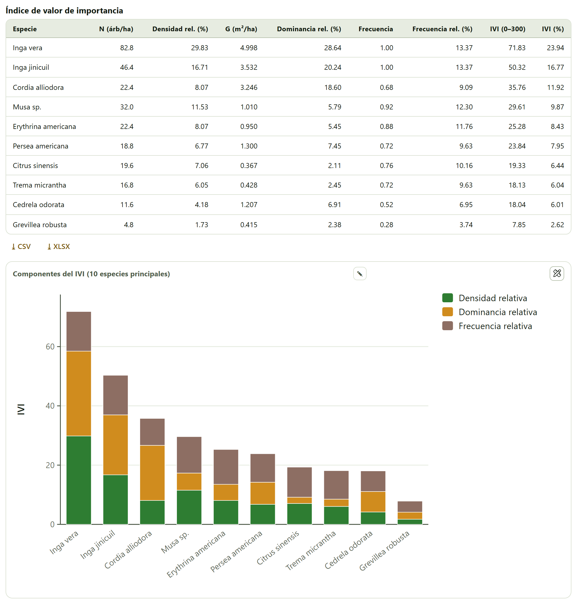
Figura 3.7. El índice de valor de importancia del cafetal de ejemplo. Inga vera encabeza con 71.83 de 300 (23.94 %), seguida de Inga jinicuil (50.32) y Cordia alliodora (35.76). Musa sp. tiene más árboles que Cordia, pero mucha menos área basal.
En el mesófilo, la especie más importante es Liquidambar styraciflua, con un IVI de 31.40, y las nueve que le siguen quedan entre 11 y 20: un bosque sin una especie dominante clara, como es de esperar en un bosque mesófilo.
Densidad y competencia
La tabla Índices de densidad por parcela (en pantalla, las primeras 30 parcelas) da para cada parcela su N, su Dq, el índice de densidad del rodal de Reineke —IDR = N·(Dq/25)1.605, el número equivalente de árboles de 25 cm por hectárea—, la altura dominante y el índice de Hart–Becking —el espaciamiento medio entre árboles, √(10 000/N), como porcentaje de la altura dominante—. La interpretación da los promedios y lee el de Hart–Becking: menos de 17 %, rodal denso, candidato a aclareo; más de 25 %, rodal abierto.
Tabla 3.4. Densidad de los dos ejemplos según la interpretación de la app
Ejemplo
IDR medio de Reineke
Hart–Becking medio (%)
Lectura
Cafetal bajo sombra
337
41.8
rodal abierto
Bosque mesófilo
925
12.1
rodal denso, candidato a aclareo
El índice de Reineke se pensó para rodales coetáneos y el de Hart–Becking para plantaciones; en un cafetal o un bosque mesófilo sirven para comparar parcelas entre sí, no como norma de aclareo.
Si los árboles traen coordenadas x (m) y y (m) —medidas desde el centro de la parcela— y una parcela tiene al menos 5 árboles con ellas, la app calcula el índice de competencia de Hegyi de cada árbol: la suma, sobre los vecinos a menos del radio elegido, del diámetro del vecino entre el del árbol, dividida entre la distancia. Los árboles a menos de ese radio del borde de la parcela se dejan fuera de la figura, porque les faltan vecinos. En las parcelas anidadas sólo entran los árboles de la parcela grande.
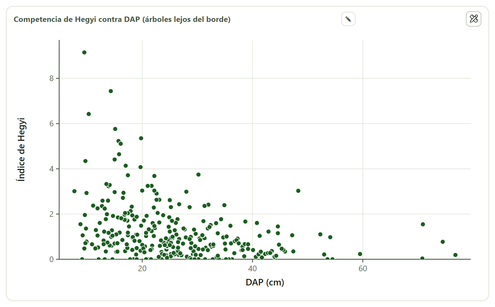
Figura 3.8. La competencia de Hegyi contra el DAP en el cafetal de ejemplo, con un radio de 6 m. Los árboles delgados son los que soportan más competencia (índices de hasta 9); los gruesos, casi ninguna.
✓Regla de decisión
Si la línea Diseño de parcela no dice la superficie que mediste
entonces detente: corrige la tabla de parcelas o el diseño por omisión antes de mirar cualquier resultado.
Si el error de muestreo es de 10 % o menos
entonces cumple lo que piden muchos planes de manejo (mosaico verde).
Si está entre 10 y 20 %
entonces la estimación es útil pero imprecisa (ámbar); la sección 3.4 dice cuántas parcelas más harían falta.
Si pasa de 20 %
entonces la media vale poco por sí sola (rojo); aumenta las parcelas o estratifica.
Si las parcelas se tomaron por grupos (fincas, conglomerados)
entonces el error que corresponde es el de conglomerados, aunque sea el mayor; un efecto del diseño mayor de 1 indica que las parcelas de un grupo se parecen.
Si en la relascopía se cuentan menos de 7 árboles por punto, o más de 15
entonces baja o sube el factor de área basal la próxima vez.
Si la forma de Weibull es menor de 1.2 · de 1.2 a 3 · de 3 o más
entonces la distribución es una J invertida · sesgada a la derecha · una campana, según la app.
Si el índice de Hart–Becking es menor de 17 % · mayor de 25 %
entonces el rodal es denso, candidato a aclareo · abierto, según la app.
Son guías para interpretar, no leyes: el diseño de campo, el plan de manejo y el tipo de bosque mandan.
✕Cuando algo sale mal
Los valores por hectárea salen diez veces más grandes o más chicos. La superficie de las parcelas está mal: un radio en centímetros, una superficie en hectáreas en la columna de m², o parcelas que tomaron el diseño por omisión porque su identificador no coincide con el de los árboles («P1» frente a «P01»). «Hay árboles sin altura». El volumen necesita la altura de todos los árboles: marca Estimar las alturas faltantes (Näslund) o elige otra variable. «El diseño estratificado necesita al menos 2 estratos con superficie y 2 parcelas cada uno». Falta la columna Superficie del estrato (ha) en las parcelas, o algún estrato tiene una sola parcela. «El diseño en conglomerados necesita la columna de conglomerado en las parcelas». Carga la tabla de parcelas con esa columna. Cambié el diseño o el DAP mínimo y volvieron a su valor. Cada vez que cargas una tabla de árboles o de parcelas, la app los vuelve a elegir; cámbialos después de cargar. «Hacen falta al menos 10 árboles vivos». La estructura del rodal no se calcula con menos; revisa el estrato elegido y la columna de estado.
iMétodos y fuentes
Las fuentes de cada tarjeta están en su recuadro Método y fuentes: Husch, Beers y Kershaw (2003) y Assmann (1970) para la expansión; Cochran (1977), Shiver y Borders (1996) y Satterthwaite (1946) para la estimación y el tamaño de muestra; Bitterlich (1948) y Grosenbaugh (1952) para la relascopía; Bailey y Dell (1973), Curtis y McIntosh (1951), Reineke (1933), Wilson (1946) y Hegyi (1974) para la estructura del rodal. Las referencias completas están en el apéndice F.
4
Capítulo cuatro · Bloque 4
Biomasa y carbono
El paso del inventario a las toneladas: la biomasa de cada árbol con la ecuación alométrica que le toca y la densidad de su madera, expandida a la hectárea con los factores del Bloque 3 y convertida en carbono y CO₂ equivalente. Cada cifra sale con su incertidumbre —la del muestreo y, con el Monte Carlo, la de las mediciones y la ecuación—, y el bloque suma los demás reservorios (necromasa, hojarasca, suelo) y mide el cambio entre dos inventarios.
4.1Datos y ecuaciones
4.2Densidad de la madera
4.3Biomasa y carbono del inventario
4.4Incertidumbre por Monte Carlo
4.5Necromasa, hojarasca y suelo
4.6Reservorios y cambio entre inventarios
El Bloque 4 lleva por subtítulo «Ecuaciones alométricas, densidad de la madera, biomasa aérea y de raíces, necromasa, carbono y CO₂e con su incertidumbre.» Trabaja sobre el inventario del Bloque 3: los árboles con su parcela, su diámetro, su altura y su factor de expansión. No hay que volver a cargarlo; si ya abriste un inventario allí, basta con entrar al bloque y pulsar Usar el inventario del Bloque 3. Las cuatro tarjetas de datos propias del bloque —madera caída, hojarasca, suelo y cambio de existencias— son independientes del inventario y se cargan cada una por su cuenta.
Los ejemplos de este capítulo son el cafetal bajo sombra de ejemplo (25 parcelas de 1 000 m², 719 árboles de sombra), que se abre desde el botón Abrir en Biomasa de su tarjeta en Bloque 1›Datos de ejemplo; el bosque mesófilo de ejemplo para la madera caída, y el pino de ejemplo para el cambio entre dos mediciones (sección I.7). Todos son simulados.
4.1Datos y ecuaciones
La primera tarjeta decide de dónde salen los árboles y con qué ecuación se calcula cada uno. Todo lo demás del bloque depende de estas elecciones: al cambiar cualquiera de ellas, la app recalcula la biomasa, las tablas y los reservorios.
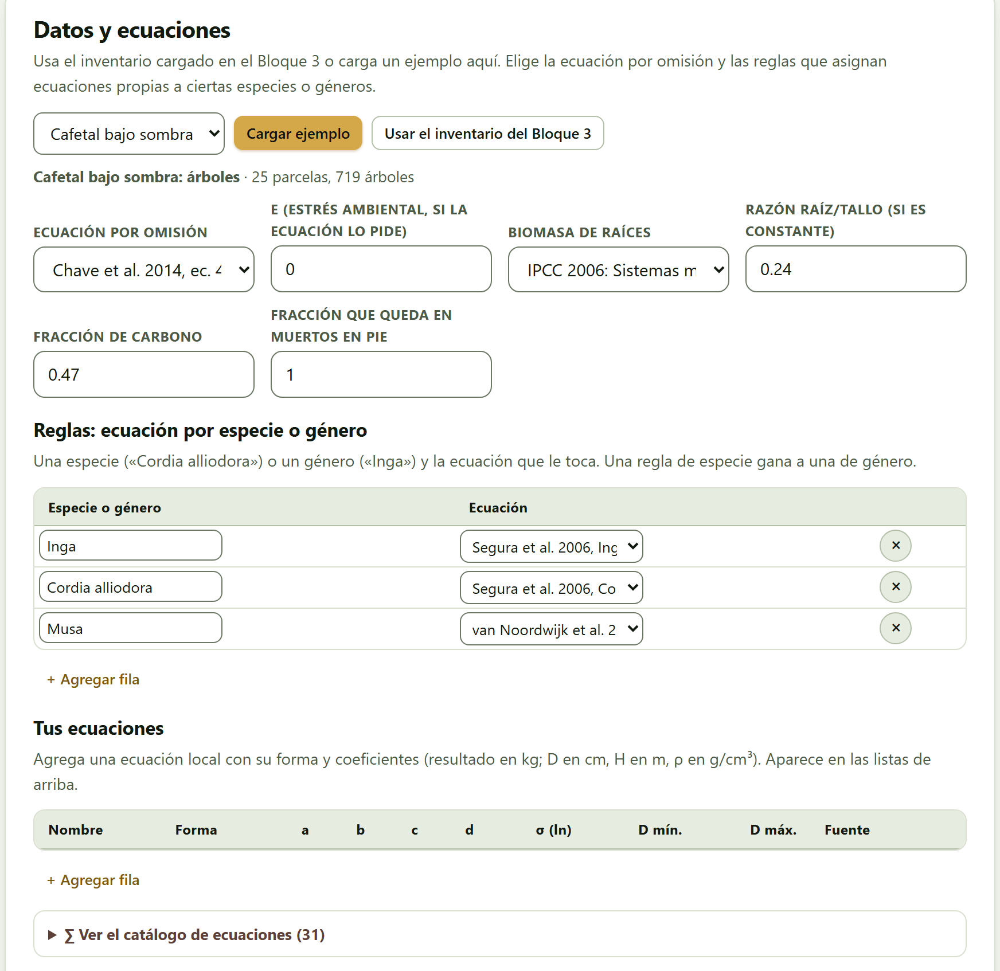
12345678910
Figura 4.1.Datos y ecuaciones con el cafetal de ejemplo: 25 parcelas y 719 árboles, la ecuación pantropical de Chave et al. (2014) por omisión, la razón raíz/tallo de los sistemas montañosos tropicales y tres reglas propias del cafetal.
1Origen de los árboles. La lista elige entre Cafetal bajo sombra y Bosque mesófilo; Cargar ejemplo abre ese inventario (y sus ajustes) y Usar el inventario del Bloque 3 toma el que ya esté cargado. Debajo, la línea de estado dice el nombre, las parcelas y los árboles.
2Ecuación por omisión. La que se aplica a todo árbol sin regla propia.
3E (estrés ambiental, si la ecuación lo pide). Sólo lo usa la ecuación 7 de Chave et al. (2014), sin altura.
4Biomasa de raíces. La zona ecológica del IPCC (2006), Cairns et al. (1997) o una razón constante.
5Razón raíz/tallo (si es constante). 0.24 por omisión; sólo cuenta con Razón constante.
6Fracción de carbono. 0.47 por omisión.
7Fracción que queda en muertos en pie. De 0 a 1; 1 por omisión.
8Reglas: ecuación por especie o género. Una tabla editable de excepciones.
9Tus ecuaciones. Ecuaciones locales con su forma y coeficientes.
10Ver el catálogo de ecuaciones (31). Las ecuaciones incluidas, con su fuente.
De dónde salen los árboles
El bloque no tiene tarjeta de datos para los árboles: los toma del Bloque 3, con todo lo que allí se calculó —el factor de expansión de cada árbol según el tamaño de su parcela, las alturas estimadas con la curva de Näslund si se pidió, el estrato y la superficie del predio—. Si todavía no hay inventario, Usar el inventario del Bloque 3 lo avisa: «Todavía no hay inventario: carga uno en el Bloque 3 o un ejemplo aquí.» Cargar ejemplo abre el inventario de ejemplo como lo haría el Bloque 3 y, de paso, pone la ecuación, la zona de raíces y las reglas que ese ejemplo necesita; así, para el cafetal, quedan las tres reglas de la figura 4.1.
Del inventario, cada ecuación usa lo que pide: el diámetro a la altura del pecho (DAP, en cm) siempre; la altura total (m) las ecuaciones «con altura»; la densidad básica de la madera (ρ, g/cm³) casi todas las pantropicales, que la app busca en la tabla de la sección 4.2, y el diámetro a 15 cm del suelo (d₁₅) la ecuación del cafeto. Un árbol al que le falta lo que su ecuación pide no suma biomasa, y la app lo dice con un aviso que nombra lo que faltó.
La ecuación de cada árbol
La lista Ecuación por omisión agrupa las 31 ecuaciones del catálogo según dónde se ajustaron (tabla 4.1). Con Reglas: ecuación por especie o género se da a ciertos árboles otra ecuación: en la columna Especie o género se escribe una especie («Cordia alliodora») o un género («Inga») y en Ecuación se elige la suya; + Agregar fila añade una regla y × la quita. La búsqueda no distingue mayúsculas y, como dice la propia tarjeta, «Una regla de especie gana a una de género».
Tabla 4.1. Los grupos de la lista de ecuaciones
Grupo
Ecuaciones
Qué hay
Pantropicales
2
Chave et al. (2014): la ec. 4, con altura, y la ec. 7, sin altura y con E
Trópico seco · húmedo · muy húmedo
3 + 3 + 3
Chave et al. (2005) con y sin altura, y Brown (1997), por tipo de bosque
Agroforestería (café y sombra)
7
Segura et al. (2006) para la sombra en general, Inga, Cordia alliodora, Juglans olanchana y el cafeto; van Noordwijk et al. (2002) para el café podado y el plátano
Pinos
3
Brown (1997), Díaz-Franco et al. (2007) y Figueroa-Navarro et al. (2010), éstas para Pinus patula
Templadas (por grupos de especies)
10
Jenkins et al. (2003), una por grupo de especies
Ver el catálogo de ecuaciones (31) despliega la tabla completa: el nombre, la Forma (AGB en kg), las Variables que pide, el error residual σ (ln) cuando la fuente lo publica, el DAP válido (cm) y la Fuente; con ⤓ CSV o ⤓ XLSX se descarga. El número entre paréntesis crece cuando agregas ecuaciones propias.
θTeoría en breve · ecuaciones alométricas
Una ecuación alométrica estima la biomasa aérea seca de un árbol (AGB, en kg) a partir de lo que se mide sin cortarlo. Las más generales son las pantropicales de Chave et al. (2014): la ec. 4, AGB = 0.0673 · (ρD²H)0.976, usa diámetro, altura y densidad; la ec. 7 prescinde de la altura y la sustituye por E, un índice del estrés ambiental del sitio. Las locales dejan fuera la densidad porque se ajustaron a un solo grupo de árboles. Cada ecuación vale en el intervalo de diámetros con que se ajustó; fuera de él es extrapolación, y la app cuenta cuántos árboles quedan así (sección 4.3). Las ecuaciones de Chave et al. ya incluyen la corrección del sesgo que aparece al regresar de la escala logarítmica, y la app las usa tal como se publicaron.
Raíces, carbono y árboles muertos
La biomasa de raíces (BGB) no se mide: se estima a partir de la aérea de cada parcela. Biomasa de raíces ofrece tres caminos:
Las razones raíz/tallo del Cuadro 4.4 del IPCC (2006), una opción por zona ecológica, de IPCC 2006: Bosque tropical lluvioso a IPCC 2006: Boreal. En algunas zonas la razón depende de la biomasa aérea de la parcela, y la app la elige parcela por parcela. El cafetal y el mesófilo usan IPCC 2006: Sistemas montañosos tropicales, con razón 0.27 en todas sus parcelas.
Cairns et al. 1997 (por hectárea): la ecuación 3 de esos autores, aplicada a la biomasa aérea por hectárea de cada parcela. Con el cafetal de ejemplo da 92.9 Mg/ha de biomasa total, frente a 97.8 Mg/ha con la razón del IPCC.
Razón constante: la de Razón raíz/tallo (si es constante), igual para todas las parcelas.
El carbono es la biomasa por la Fracción de carbono: 0.47 por omisión, el valor por defecto del Cuadro 4.3 del IPCC (2006). El CO₂ equivalente es el carbono por 44/12, la razón de las masas molares del CO₂ y del carbono. Los árboles que el inventario marca como muertos en pie se calculan con su misma ecuación, multiplicada por la Fracción que queda en muertos en pie (con 1, el árbol conserva toda su biomasa; con 0.5, la mitad), y no suman a los vivos: se informan aparte como necromasa.
Tus ecuaciones
Una ecuación local ajustada en tu región suele ser mejor que una general. En Tus ecuaciones, + Agregar fila abre un renglón con Nombre, Forma (la lista de formas funcionales que reconoce la app), los coeficientes a, b, c y d, su error residual σ (ln) si lo conoces, el intervalo D mín. – D máx. en que vale y la Fuente. Las unidades son las del catálogo: el resultado en kg, D en cm, H en m y ρ en g/cm³. La ecuación aparece en seguida en el grupo Tus ecuaciones de las listas de arriba y en el catálogo; si no le pones nombre, se llama «Mi ecuación 1», «Mi ecuación 2»…
!La ecuación pesa más que cualquier otra elección
Con el mismo inventario, cambiar de ecuación mueve la biomasa mucho más que cambiar la fracción de carbono o la razón raíz/tallo. Elige la ecuación por la región y el tipo de vegetación en que se ajustó, no por la cifra que da; anota en el informe cuál usaste para cada grupo de especies, y si una especie importante de tu inventario tiene ecuación propia publicada, dásela con una regla, como hace el cafetal con Inga, Cordia alliodora y Musa.
4.2Densidad de la madera
La densidad básica de la madera —la masa seca entre el volumen verde, en g/cm³— multiplica a casi todas las ecuaciones pantropicales: a igual diámetro y altura, un árbol de madera dura tiene más biomasa que uno de madera ligera. Esta tarjeta dice qué densidad recibe cada especie del inventario y de dónde salió.
Arriba está la tabla de referencia, editable: Especie, Densidad (g/cm³), Nivel y Fuente. Trae 42 taxones, los de los ejemplos, con valores de la base mundial de densidad de la madera (Zanne et al. 2009); en Nivel dice si el valor es de la especie o la media de su género. Puedes corregir un valor, agregar tus especies con + Agregar fila o quitar renglones con ×; cada cambio recalcula la biomasa. La tabla de referencia también se abre con Abrir en Biomasa en la tarjeta Densidades y ecuaciones de Bloque 1›Datos de ejemplo, que lleva directo a ella.
Si tienes el archivo completo de la base mundial, Cargar la base mundial (archivo de la GWDD)… lo lee: CSV, texto o libro de cálculo (.xlsx, .xlsm u .ods; en un libro, la hoja Data). Un libro del formato viejo .xls no se lee, y la app pide guardarlo como .xlsx o .csv. La app busca las columnas de especie y de densidad —y, si las hay, la familia y la región— y avisa cuántos registros cargó. Con la base cargada aparece la lista Región, que restringe los valores a una región de la base o los deja en Mundo.
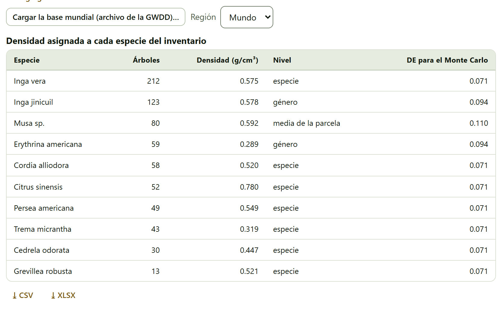
Figura 4.2. La densidad asignada a las diez especies del cafetal de ejemplo. Inga vera (212 árboles) la toma de su especie; Inga jinicuil y Erythrina americana, de su género; Musa sp. no está en la tabla y recibe la media de su parcela, aunque su ecuación no la usa.
El orden de búsqueda
Para cada árbol, la app busca su densidad en este orden y se queda con la primera que encuentra:
Tu tabla, por el nombre exacto de la especie. El nivel es el que diga la tabla.
La base mundial, si la cargaste: la media de los registros de la especie; si falta, la media de las medias de las especies del género; si falta y el inventario trae la familia, la media de las medias de los géneros de la familia.
La media de la parcela: el promedio de las densidades de los demás árboles de la misma parcela.
La media del inventario, si ni eso existe.
Sin la base mundial cargada, el paso 2 se hace con tu propia tabla: un árbol de una especie que no está, pero cuyo género sí, recibe la media de su género. La tabla de resultados, Densidad asignada a cada especie del inventario, muestra para cada especie los Árboles, la Densidad (g/cm³), el Nivel en que se encontró (especie, género, familia, media de la parcela o media del inventario) y la DE para el Monte Carlo: 0.071 g/cm³ si el valor es de la especie, 0.094 si es del género y 0.123 si es de la familia, como en la implementación de referencia, y una propia en los niveles de parcela e inventario (0.110 para Musa sp. en la figura 4.2).
▸Ejemplo · una especie que falta
En el bosque mesófilo de ejemplo, Cyathea fulva (64 árboles) no está en la tabla ni a nivel de género, y su ecuación —la pantropical— sí usa la densidad. La app lo avisa: «1 especies no están en la tabla ni a nivel de género (Cyathea fulva): reciben la media de su parcela. Agrégalas a la tabla si conoces su densidad.» El aviso sólo aparece cuando la ecuación de esas especies usa la densidad; por eso Musa sp., en el cafetal, no lo dispara.
4.3Biomasa y carbono del inventario
«Por árbol, por parcela y para todo el predio, con el intervalo del muestreo.» Esta tarjeta no tiene controles: se llena sola en cuanto hay inventario y se rehace con cada cambio de las dos anteriores.
Cada árbol vivo aporta su biomasa aérea por su factor de expansión; la suma de una parcela, dividida entre mil, son sus megagramos por hectárea (1 Mg = 1 t). A esa biomasa aérea se le agregan las raíces, y la suma es la biomasa total, que se pasa a carbono y CO₂e. La media del predio y su intervalo se calculan con las parcelas como unidades de muestreo, con el mismo estimador del Bloque 3: estratificado cuando las parcelas traen su estrato con superficie, aleatorio simple si no.
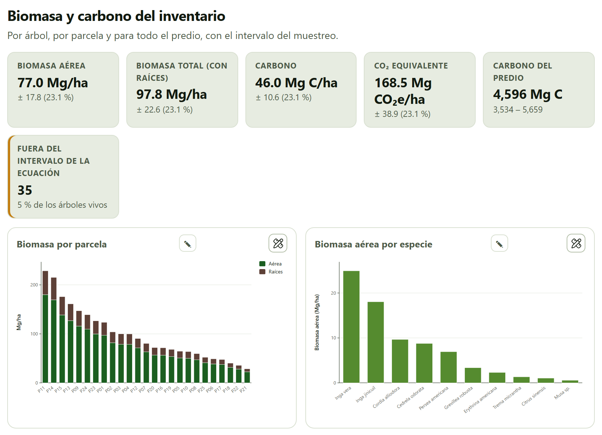
Figura 4.3. El cafetal de ejemplo: 77.0 Mg/ha de biomasa aérea, 97.8 con raíces, 46.0 Mg C/ha y 168.5 Mg CO₂e/ha, todas con ±23.1 %; 4,596 Mg C en el predio y 35 árboles fuera del intervalo de su ecuación. A la izquierda, cada parcela con su parte aérea y sus raíces; a la derecha, las especies que más biomasa aportan.
Los mosaicos dicen, de izquierda a derecha:
Biomasa aérea, Biomasa total (con raíces), Carbono y CO₂ equivalente, por hectárea, cada uno con la semiamplitud de su intervalo del 95 % y el error de muestreo en porcentaje. Como el carbono y el CO₂e son la biomasa por constantes, los cuatro tienen el mismo error relativo.
Carbono del predio: el carbono por hectárea por la superficie del predio que se dio en el Bloque 3, con su intervalo. Sin superficie, el mosaico no aparece.
Fuera del intervalo de la ecuación, en ámbar: cuántos árboles vivos tienen un diámetro fuera del que vale su ecuación, y qué porcentaje son. En el cafetal son 35 (5 %): 16 Cordia alliodora, 10 Inga vera, 8 Inga jinicuil y un plátano, casi todos árboles más gruesos que los 44 cm hasta donde valen las ecuaciones de Segura et al. (2006).
Debajo vienen tres figuras —Biomasa por parcela, apilada en aérea y raíces y ordenada de mayor a menor; Biomasa aérea por especie, con las diez primeras y el resto como «Otras», y Biomasa de cada árbol según su ecuación (figura 4.4)— y dos tablas. Por parcela da para cada parcela su estrato, la biomasa Aérea (Mg/ha) y de Raíces (Mg/ha), la Raíz/tallo que se usó, el Carbono (Mg C/ha), el CO₂e (Mg/ha) y los Muertos en pie (Mg/ha); en el cafetal, la parcela P01 tiene 97.2 Mg/ha de biomasa aérea, 26.2 de raíces y 58.0 Mg C/ha. Árbol por árbol muestra los primeros 40 árboles con su DAP (cm), Altura (m), ρ (g/cm³), Ecuación, AGB (kg), Factor de expansión y si está Vivo; la descarga lleva todos.
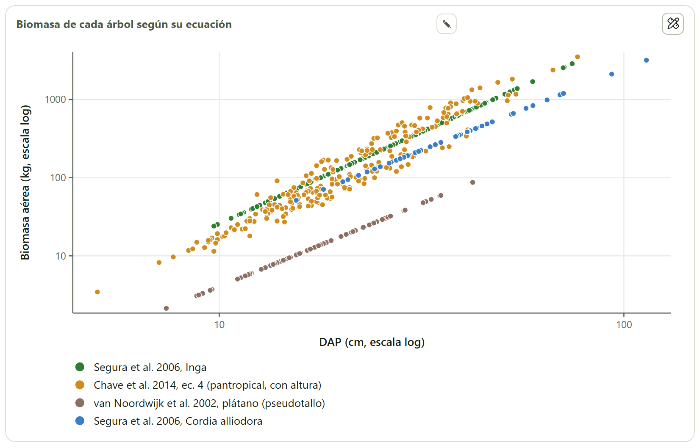
Figura 4.4. La biomasa de cada árbol del cafetal contra su diámetro, en ejes logarítmicos, con un color por ecuación. Las ecuaciones que sólo usan el diámetro (Inga, Cordia, plátano) dibujan rectas; la pantropical, que usa además la altura y la densidad, deja una nube.
La figura 4.4 sirve para revisar las ecuaciones de un vistazo: un grupo de puntos muy apartado de los demás para el mismo diámetro indica una ecuación que no conviene a esas especies, o una unidad mal puesta.
▸Ejemplo resuelto · el carbono del cafetal
La interpretación de la tarjeta lo resume así: «El predio guarda 46.0 ± 10.6 Mg C/ha (168.5 Mg CO₂e/ha) en sus árboles vivos, con raíces. Inga vera aporta el 32 % de la biomasa aérea.» Recuerda además que el intervalo sólo refleja el muestreo, y que 35 árboles quedan fuera del intervalo de diámetros de su ecuación. Con el bosque mesófilo de ejemplo (24 parcelas, 1 830 árboles) las cifras son otras: 213.6 Mg/ha de biomasa aérea, 127.5 ± 26.5 Mg C/ha y 145 árboles (8 %) fuera de intervalo; allí la especie que más aporta es Liquidambar styraciflua, con el 15 %.
4.4Incertidumbre por Monte Carlo
El intervalo de la sección anterior sólo dice cuánto podría cambiar la media si se hubieran medido otras parcelas. No dice nada de los errores al medir los diámetros y las alturas, de la densidad prestada de otra especie, ni de lo que la ecuación se equivoca árbol por árbol. Esta tarjeta los propaga por simulación.
El método repite el cálculo de toda la biomasa cientos de veces; en cada repetición perturba el diámetro, la altura y la densidad de cada árbol con su error, y la biomasa con el error residual de su ecuación. La dispersión de los resultados es la incertidumbre de las mediciones y del modelo. Los controles:
Iteraciones: 500, 1000 (por omisión), 2000 o 5000.
Error del diámetro: Chave et al. 2004 (95 % pequeño, 5 % grande), el modelo de errores de medición de esos autores —una desviación de 0.0062·D + 0.0904 cm para el 95 % de los árboles y de 4.64 cm para un 5 % sorteado, que representa los errores gruesos de anotación—; o un coeficiente de variación fijo, CV 1 % o CV 2 %; o Sin error.
Error de la altura medida (CV %), 5 por omisión, y Error de la altura estimada (CV %), 15 por omisión, para las alturas que el Bloque 3 completó con una curva altura–diámetro.
Error residual de la ecuación, marcado por omisión: suma el error de cada ecuación que publica su σ en escala logarítmica.
El cálculo empieza con Correr el Monte Carlo, que pide antes la biomasa del inventario. La app usa una semilla fija, así que con los mismos datos y opciones repetir la corrida da los mismos números.
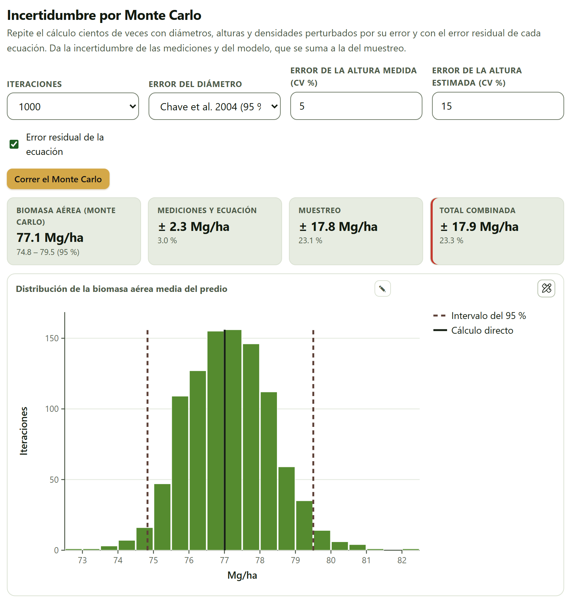
Figura 4.5. El Monte Carlo del cafetal de ejemplo con los valores por omisión: 77.1 Mg/ha (74.8 – 79.5), ±2.3 Mg/ha por las mediciones y las ecuaciones contra ±17.8 Mg/ha por el muestreo. La incertidumbre combinada, ±17.9 Mg/ha (23.3 %), sale en rojo por pasar de 20 %.
Los cuatro mosaicos son la Biomasa aérea (Monte Carlo) con su intervalo del 95 % (los percentiles 2.5 y 97.5 de las iteraciones); Mediciones y ecuación, la semiamplitud de ese intervalo; Muestreo, la de la sección 4.3, y Total combinada, las dos sumadas en cuadratura —la raíz de la suma de sus cuadrados—, como en el método 1 de propagación del IPCC (2006). El borde de este último es verde si la incertidumbre combinada es menor que 10 % de la media, ámbar entre 10 y 20 % y rojo de 20 % en adelante. El histograma muestra la distribución de la biomasa media del predio en las iteraciones, con el intervalo en líneas punteadas y el cálculo directo en una línea continua, y la tabla Por parcela (Monte Carlo) da para cada parcela el valor Directo (Mg/ha), la Media MC (Mg/ha), su DE, los percentiles 2.5 % y 97.5 % y el CV (%).
θTeoría en breve · por qué la media casi no se mueve
Las ecuaciones publicadas ya predicen la biomasa media: su intercepto incluye la corrección exp(σ²/2) del logaritmo. Por eso el ruido residual se sortea como exp(ε − σ²/2), con media uno, y la media del Monte Carlo queda muy cerca del cálculo directo (en el cafetal, 0.2 % arriba): sólo la curvatura de la ecuación y los límites de los errores la mueven. Los diámetros se sortean de una normal truncada entre 0.1 y 500 cm, las alturas entre 1.3 m y la máxima más 15 m, y las densidades entre 0.08 y 1.39 g/cm³. A diferencia de la implementación de referencia, la app no sortea los coeficientes de la ecuación, porque las fuentes no publican su distribución; en las ecuaciones pantropicales, el error residual domina.
La interpretación termina diciendo qué fuente de error domina. En el cafetal, «El muestreo domina: más parcelas reducirían el error más que mejores mediciones.» Cuando dominan las mediciones y la ecuación, la app recomienda en cambio una ecuación local o mejores alturas.
4.5Necromasa, hojarasca y suelo
«Los otros reservorios de carbono, cada uno con su propia tabla.» Los árboles vivos no son todo el carbono de un bosque o de un cafetal: la madera muerta en el suelo, la hojarasca y, sobre todo, el suelo guardan otro tanto o más. Cada uno se muestrea a su manera, y por eso cada uno tiene su tarjeta de datos.
Madera caída (intersección de líneas)
La madera caída se mide por intersección de líneas: se tienden transectos de longitud conocida y se mide el diámetro de cada pieza en el punto donde la línea la cruza. La tarjeta pide Transecto*, Longitud (m)* y Diámetro en el cruce (cm)*, y, opcional, la Clase de descomposición (1–3); una pieza sin clase se cuenta como intermedia. Arriba, tres campos dan la densidad de cada clase: Densidad clase 1, sana (g/cm³), 0.45 por omisión; Clase 2, intermedia, 0.34, y Clase 3, podrida, 0.23. Son sólo un punto de partida: lo correcto es medirlas en tu sitio.
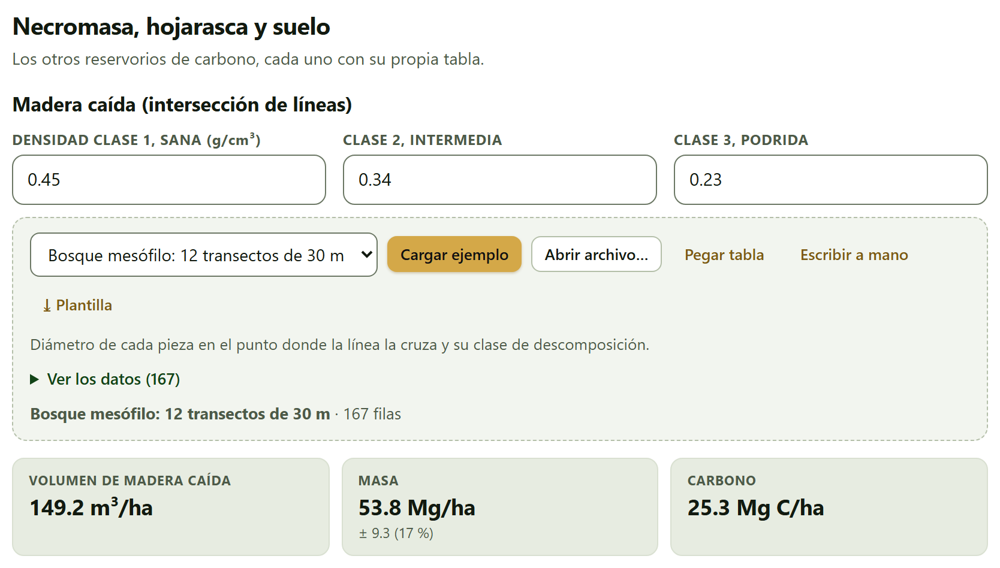
Figura 4.6. La madera caída del bosque mesófilo de ejemplo: 12 transectos de 30 m con 167 piezas dan 149.2 m³/ha, 53.8 ± 9.3 Mg/ha y 25.3 Mg C/ha.
El volumen por hectárea de cada transecto sale de la fórmula de Van Wagner (1968), V = π²·Σd²/(8L), que con d en cm y L en m da directamente m³/ha; la masa es el volumen de cada pieza por la densidad de su clase. Los mosaicos dan el Volumen de madera caída, la Masa con su intervalo (los transectos son las unidades de muestreo) y el Carbono, con la fracción de carbono de la sección 4.1; la tabla Por transecto da para cada uno su longitud, las Piezas, V (m³/ha) y Masa (Mg/ha). En el mesófilo de ejemplo, el transecto T01 cruza 20 piezas y da 199.6 m³/ha.
Hojarasca y carbono orgánico del suelo
La hojarasca se recoge en marcos de superficie conocida y se pesa seca. La tarjeta pide Parcela*, Peso seco (g)* y Superficie del marco (m²)*; la masa en Mg/ha es el peso seco en gramos entre la superficie del marco en m², por 0.01. Los mosaicos dan la Hojarasca con su intervalo y su Carbono.
El carbono orgánico del suelo se calcula capa por capa: Mg C/ha = C % × densidad aparente (g/cm³) × espesor (cm) × (1 − fragmentos gruesos/100), y las capas de cada perfil se suman. La tarjeta pide Parcela o perfil*, Carbono orgánico (%)* y Densidad aparente (g/cm³)*, y los límites de cada capa de una de tres maneras: Profundidad superior (cm) y Profundidad inferior (cm); o la Capa (p. ej. «0-10»), si no hay profundidades; o el Espesor (cm), si no hay profundidades ni capa, y entonces las capas de cada perfil se apilan desde la superficie en el orden en que vienen. Opcionales: Fragmentos gruesos (%), Sistema o grupo (opcional) y Año (opcional).
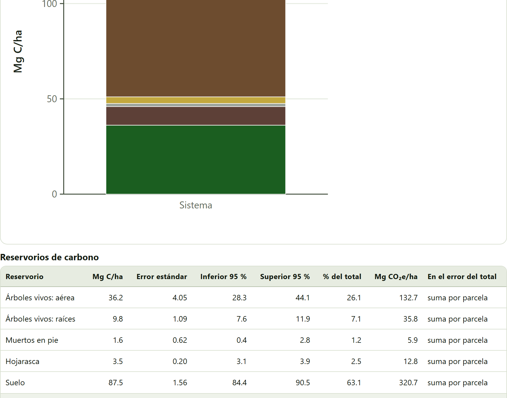
Figura 4.7. La hojarasca del cafetal de ejemplo (un marco de 0.25 m² por parcela): 7.41 ± 0.86 Mg/ha y 3.48 Mg C/ha. El suelo, con tres capas de 0 a 30 cm en cada una de las 25 parcelas: 87.5 ± 3.2 Mg C/ha.
iLas tablas de suelo de SoilPro
La tarjeta del suelo lee el formato de capas de SoilPro, la app de suelos de la suite: sistema, año, repetición, capa escrita como «0-10» o espesor, carbono orgánico, densidad aparente y fragmentos gruesos; los nombres de sus columnas están entre los sinónimos que reconoce. Si la tabla trae varios sistemas o años, aparece una lista Sistema o grupo para elegir cuál se calcula, uno a la vez. Si ninguna capa tiene límites, la app lo dice: «Ninguna capa tiene profundidades: hacen falta las profundidades superior e inferior, la capa escrita como «0-10» o el espesor.»
Compara siempre reservorios de suelo a la misma profundidad: el mosaico la dice («0–30 cm»), y un suelo muestreado a 0–20 cm no se puede sumar ni comparar con otro a 0–30 cm. La tabla Por perfil da el carbono de cada parcela o perfil.
4.6Reservorios y cambio entre inventarios
«El carbono de todos los reservorios con su error, y cuánto cambió entre dos mediciones.» La última tarjeta reúne lo calculado en el bloque en un solo balance y, con una tabla aparte, mide el cambio de las existencias en el tiempo.
El balance de reservorios
El resumen junta, en Mg C/ha, los reservorios que haya: Árboles vivos: aérea y Árboles vivos: raíces (de la sección 4.3), Muertos en pie si el inventario los tiene, Madera caída, Hojarasca y Suelo si cargaste sus tablas, y Arbustos y otros si escribes un valor en Arbustos y otros (Mg C/ha) con Su error estándar, para lo que se midió fuera de la app (arbustos, epífitas, palmas). Sin nada calculado, dice «Calcula la biomasa o carga algún reservorio para ver el resumen.»
El mosaico Carbono total del sistema da el total con la semiamplitud de su intervalo del 95 % y su equivalente en CO₂; la figura Carbono por reservorio los apila en una sola barra, y la tabla Reservorios de carbono (figura 4.8) da cada uno con su Error estándar, sus límites Inferior 95 % y Superior 95 %, el % del total, los Mg CO₂e/ha y, en la última columna, En el error del total, cómo entra ese reservorio en el error del total: suma por parcela o independiente.
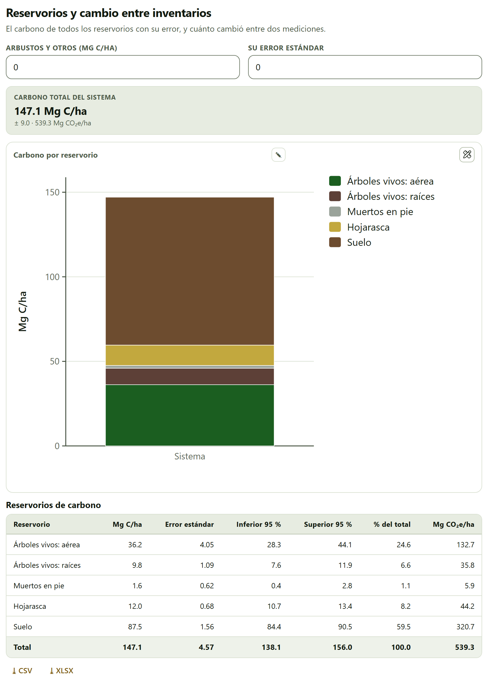
Figura 4.8. Los reservorios del cafetal de ejemplo con su hojarasca y su suelo: 138.5 Mg C/ha en total (de 127.8 a 149.3; 507.9 Mg CO₂e/ha), de los que el suelo aporta 63.1 % y los árboles vivos, con raíces, 33.2 %. Los cinco reservorios salen de las mismas 25 parcelas y entran en el error del total con su suma por parcela.
θTeoría en breve · el error de una suma de reservorios
El total es la suma de las medias de los reservorios. Su error, en cambio, no se obtiene sumando en cuadratura los reservorios que salen de las mismas parcelas, porque no son independientes: la parte aérea, las raíces —que se calculan de ella— y los muertos en pie suben y bajan juntos de una parcela a otra. Por eso la app suma esos reservorios parcela por parcela —y también la hojarasca y el suelo cuando traen las mismas parcelas— y calcula el error del total con esos totales por parcela, con el mismo estimador del inventario (aleatorio simple o estratificado). Sólo los reservorios de otra muestra —los transectos de madera caída, una hojarasca o un suelo de otras parcelas— y el valor de Arbustos y otros (Mg C/ha) se agregan en cuadratura, como independientes (IPCC 2006, vol. 1, ec. 3.1). El intervalo es ±1.96 veces el error estándar.
La interpretación compara las dos cuentas. En el cafetal de ejemplo: «El error del total suma la biomasa aérea, las raíces, los muertos en pie, la hojarasca y el suelo parcela por parcela (25 parcelas): ±10.7 Mg C/ha. Sumar en cuadratura los reservorios de las mismas parcelas, como si fueran independientes, daría ±8.9.» La cuadratura habría subestimado el error.
El balance usa los datos de un solo sitio. Si una tarjeta tiene cargado el ejemplo o el archivo de otro sitio que el inventario, ese reservorio queda fuera con un aviso. Con el cafetal como inventario y la madera caída del mesófilo cargada, la app dice: «No entran en el balance porque vienen de otro sitio que el inventario (Cafetal bajo sombra: árboles): madera caída (Bosque mesófilo: 12 transectos de 30 m). Carga en esa tarjeta los datos del mismo sitio.» Con el mesófilo como inventario, en cambio, su madera caída sí entra, y el balance de árboles y madera caída da 159.3 ± 22.6 Mg C/ha.
Cambio de existencias
Para saber si un predio gana o pierde carbono hay que medirlo dos veces. La tarjeta Cambio de existencias pide Parcela*, Carbono en la 1.ª medición (Mg/ha)* y Carbono en la 2.ª medición (Mg/ha)*, y, opcionales, Año o edad 1 y Año o edad 2. Si las columnas de año están completas, el tiempo entre mediciones es su diferencia media; si no, se usa Años entre mediciones (si no hay columnas de año), 5 por omisión. Con Las mismas parcelas (pareado) marcada, el cambio es la media de las diferencias parcela a parcela, con la prueba t pareada; desmarcada, las dos mediciones se tratan como muestras independientes y la diferencia de medias lleva el error de Welch (1947).
Los mosaicos dan el Cambio medio con su intervalo del 95 % —borde verde si el intervalo queda por encima de cero, rojo si queda por debajo y ámbar si lo incluye—, la Tasa anual en Mg C/ha/año con su intervalo y su equivalente en CO₂e, y la Prueba con su valor p y sus grados de libertad. La interpretación del pino de ejemplo dice que «el intervalo del 95 % no incluye el cero: el cambio es distinguible del error de muestreo», y añade que medir las mismas parcelas quita de la varianza las diferencias permanentes entre ellas. Esa es la razón para remedir parcelas permanentes en lugar de levantar dos muestras nuevas: con las mismas parcelas, un cambio pequeño se distingue con muchas menos parcelas.
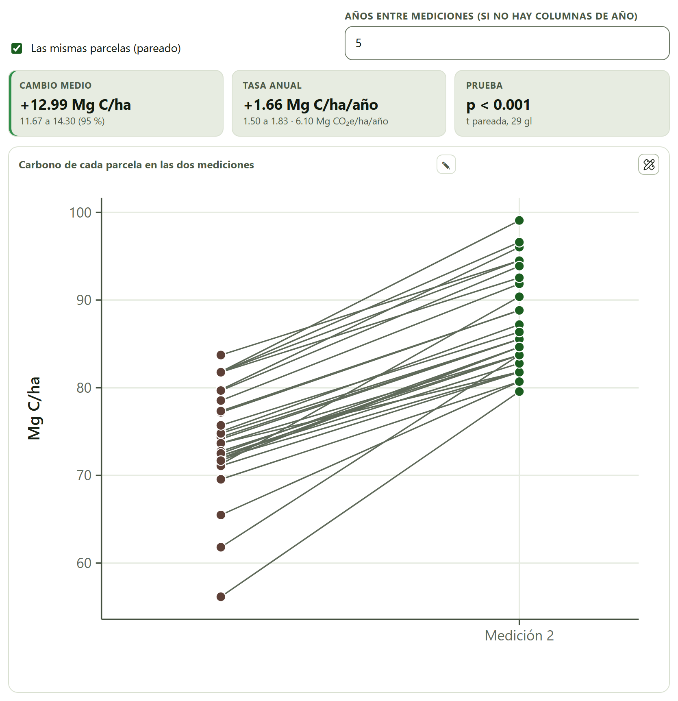
Figura 4.9.Carbono de cada parcela en las dos mediciones, con las 30 parcelas permanentes del pino de ejemplo. Los mosaicos de la tarjeta dan +12.99 Mg C/ha (11.67 a 14.30) en 7.8 años, +1.66 Mg C/ha/año (6.10 Mg CO₂e/ha/año), con p < 0.001 en la t pareada con 29 gl. Cada línea gris une las dos mediciones de una parcela; todas suben.
✓Regla de decisión
Si hay muchos árboles fuera del intervalo de su ecuación
entonces busca una ecuación ajustada a árboles de ese tamaño y dásela con una regla; si no existe, dilo en el informe.
Si el Monte Carlo dice que domina el muestreo
entonces más parcelas reducirán el error más que mejores mediciones; si dominan las mediciones y la ecuación, mide más alturas o usa una ecuación local.
Si la incertidumbre combinada pasa de 20 % (mosaico rojo)
entonces el estimado sirve para describir el predio, pero es débil para comprometer créditos de carbono.
Si el intervalo del cambio incluye el cero
entonces con esas parcelas no puedes afirmar que el carbono subió o bajó.
Guías para interpretar, no leyes.
✕Cuando algo sale mal
Las tarjetas de resultados están vacías. Falta el inventario: carga uno en el Bloque 3 o un ejemplo con Cargar ejemplo, y pulsa Usar el inventario del Bloque 3.
«… árboles no tienen lo que pide su ecuación». Una ecuación con altura y árboles sin altura, o la ecuación del cafeto sin d₁₅. Estima las alturas en el Bloque 3, cambia de ecuación o pon una regla para esas especies.
La biomasa sale mil veces mayor o menor. Revisa las unidades: el DAP en cm, la altura en m y la densidad en g/cm³ (0.6, no 600). En tus ecuaciones, el resultado debe estar en kg.
«No entran en el balance porque vienen de otro sitio…». Una tarjeta tiene datos de otro sitio que el inventario: carga en ella los del mismo predio.
5
Capítulo cinco · Bloque 5
Crecimiento y rendimiento
Del anillo al turno: cuánto crece un árbol cada año y en promedio, qué curva describe su crecimiento, qué tan bueno es el sitio de cada parcela y cuánto volumen dará el rodal a cada edad. Con el análisis troncal de unos cuantos árboles y las remediciones de parcelas permanentes, el bloque llega a la tabla de producción y al turno de máxima producción.
5.1Incrementos y turno biológico
5.2Modelos de crecimiento
5.3Índice de sitio
5.4Proyección del rodal y tabla de producción
El Bloque 5 lleva por subtítulo «Incrementos corriente y medio, modelos de crecimiento, índice de sitio y proyección del rodal.» Tiene dos tarjetas de datos: la del árbol (sección 5.1), que alimenta también los modelos de la sección 5.2, y la de las parcelas remedidas (sección 5.3), que alimenta también la proyección de la sección 5.4. No depende del inventario del Bloque 3.
El ejemplo de todo el capítulo es la plantación de pino de ejemplo, que se abre con Abrir en Crecimiento en su tarjeta de Bloque 1›Datos de ejemplo: el análisis troncal de seis árboles y treinta parcelas permanentes medidas seis veces (sección I.7). Son datos simulados.
5.1Incrementos y turno biológico
«Con el análisis troncal o las remediciones de un árbol: el incremento corriente anual (ICA), el medio anual (IMA) y la edad en que el IMA es máximo.» Es la cuenta más antigua de la dasometría, y sigue siendo la que decide cuándo conviene cortar.
La tarjeta de datos pide Árbol o serie* y Edad (años)*, y al menos una de las variables Diámetro (cm), Altura (m) y Volumen (m³). Una «serie» puede ser un árbol reconstruido por análisis troncal —sus anillos dan el diámetro y la altura a cada edad— o un árbol medido varias veces. El ejemplo Pino: análisis troncal de 6 árboles trae 203 filas: los árboles T1 a T6, con series de 30 a 36 años. Debajo de la tarjeta hay tres controles:
Variable: Diámetro (cm), Altura (m), Volumen (m³) (por omisión) o Área basal (m²), que se calcula del diámetro.
Coeficiente mórfico (si falta el volumen): 0.45 por omisión. Si la serie no trae volumen pero sí diámetro y altura, la app lo calcula como área basal × altura × coeficiente. Así lo hace con el pino de ejemplo, que no trae volumen.
Árbol para los modelos: la serie que se ajusta en la sección 5.2 y que se muestra completa en la tabla de su serie.
θTeoría en breve · ICA, IMA y turno biológico
El incremento corriente anual entre dos mediciones es lo que creció la variable entre ellas, dividido entre los años: ICA = (Y₂ − Y₁)/(t₂ − t₁). El incremento medio anual es lo acumulado dividido entre la edad: IMA = Y/t. Al principio el árbol crece cada vez más rápido y el ICA supera al IMA, que sube; cuando el ICA cae por debajo del IMA, el IMA empieza a bajar. El máximo del IMA está, pues, donde las dos curvas se cruzan. En volumen, esa edad es el turno biológico o de máxima producción: cortar entonces da el mayor volumen medio por año. El turno económico, que descuenta el dinero en el tiempo (Bloque 9), suele ser más corto (Assmann 1970; Davis et al. 2001).
Figura 5.1. El volumen de los seis árboles del pino de ejemplo: el ICA en líneas punteadas, que saltan de un año a otro, y el IMA en líneas continuas, que suben suaves. La tabla da para cada árbol la edad y el valor del IMA máximo.
La figura ICA (punteado) e IMA (continuo): volumen (m³) dibuja las dos curvas de todos los árboles, un color por árbol. Debajo, la tabla Turno biológico de cada árbol da la Edad del IMA máximo, el IMA máximo y el Cruce ICA = IMA (ICA periódico), y la tabla Serie del árbol T1 (o del árbol elegido) da año por año la variable, el ICA y el IMA. En el pino de ejemplo, el árbol T1 llega a 2.2965 m³ a los 35 años, con un IMA de 0.06561 m³/año.
La interpretación da la edad media del IMA máximo, 33.3 años en el ejemplo, y advierte: «En 4 árboles el IMA aún crece en la última edad medida: su turno es posterior a la serie.» Son T1, T2, T3 y T6, cuyo máximo cae justo en su última edad; para ellos, la edad de la tabla es sólo un límite inferior del turno.
iEl cruce con un ICA ruidoso
El ICA año por año de un análisis troncal sube y baja mucho, porque un anillo ancho o angosto lo mueve, y cruza al IMA antes de tiempo en máximos locales que no son el turno. Por eso la columna del cruce no busca el primer cruce: compara el ICA de cada intervalo con el IMA de su inicio —el IMA sube justo cuando ese ICA lo supera—, ubica cada intervalo en su punto medio e interpola entre el intervalo que termina en el IMA máximo y el siguiente. Así el cruce queda a menos de medio intervalo de la edad del IMA máximo: 30.9 años en T4 (máximo a los 31) y 34.3 en T5 (máximo a los 34). En los árboles cuyo IMA sigue creciendo al final de la serie no hay cruce, y la columna dice «—».
5.2Modelos de crecimiento
«Cuatro curvas sigmoides ajustadas a la serie elegida, con la edad del máximo incremento corriente y del máximo incremento medio de cada una.» Una curva ajustada suaviza el ruido de los anillos y deja calcular el turno aunque la serie no haya llegado a él.
La tarjeta no tiene controles propios: ajusta la serie del Árbol para los modelos en la Variable elegidas en la sección 5.1, y se rehace al cambiarlas. Necesita al menos cinco edades («Hacen falta al menos 5 edades.»). Los cuatro modelos, con A como asíntota —el tamaño máximo que el modelo atribuye al árbol—, son:
Tabla 5.1. Los cuatro modelos de crecimiento
Modelo
Ecuación
Rasgo
Chapman–Richards
Y = A (1 − e−kt)p
El más flexible: p mueve el punto de inflexión (Richards 1959)
Gompertz
Y = A exp(−b e−kt)
Inflexión fija en A/e; no pasa por el origen (Gompertz 1825)
Schumacher
Y = A exp(−b/t)
Dos parámetros; clásico en rendimiento forestal (Schumacher 1939)
Logística
Y = A/(1 + b e−kt)
Simétrica, inflexión en A/2; no pasa por el origen
Cada modelo se ajusta por mínimos cuadrados no lineales desde varios puntos de arranque. La tabla Comparación de modelos (árbol T1) da para cada uno su Ecuación, el RMSE, el R², el AIC, la Asíntota A, la Edad del ICA máximo —el punto de inflexión, donde la curva crece más rápido— y la Edad del IMA máximo; el renglón sombreado es el de menor AIC, el criterio que la app usa para elegir. Gompertz y la logística no pasan por el origen, así que su IMA máximo se busca sólo desde la menor edad observada; si el máximo cae en un extremo del intervalo de búsqueda, la columna dice «— (en el borde)».
Figura 5.2. El volumen del árbol T1. Chapman–Richards tiene el menor AIC (−145.4) y pone el ICA máximo a los 27.3 años y el IMA máximo a los 46.0; la logística, la peor (−98.6), se aplana pronto en 2.525 m³. A la derecha, el ICA y el IMA del mejor modelo, con líneas verticales en sus dos edades críticas.
Debajo, Coeficientes: Chapman–Richards (o del modelo ganador) da cada parámetro con su error estándar, su t y su p: para T1, A = 4.6891, k = 0.050364 y p = 3.9500. La figura Curvas ajustadas muestra los datos observados y las cuatro curvas, prolongadas más allá de la última edad; la de la derecha, el ICA y el IMA del modelo ganador, que se cruzan justo en la edad del IMA máximo.
La interpretación lo resume: «Chapman–Richards es el de menor AIC. Según él, el incremento corriente es máximo a los 27.3 años y el medio a los 46.0 años.» Ese turno de 46 años está más allá de los 35 años medidos: lo pone la curva, no los datos. Por eso la app añade que la asíntota (4.689 m³) «es una extrapolación: vale como orden de magnitud, no como dato». Los cuatro modelos ajustan casi igual dentro de los datos (R² de 0.9948 a 0.9986) y se separan después: la edad del IMA máximo va de 34.1 años con la logística a 47.6 con Schumacher.
5.3Índice de sitio
«La altura dominante que alcanza cada parcela a la edad base: curvas anamórficas o polimórficas ajustadas a las remediciones, y la clase de sitio de cada parcela.» La altura dominante casi no depende de la densidad del rodal ni de los aclareos, y por eso es la medida usual de la calidad de sitio.
La tarjeta de datos pide Parcela*, Edad (años)* y Altura dominante (m)*, una fila por parcela y medición. Las columnas Área basal (m²/ha), Volumen (m³/ha) y Árboles por hectárea son opcionales aquí, pero la proyección de la sección 5.4 necesita las dos primeras. El ejemplo Pino: 30 parcelas permanentes, 6 remediciones trae 180 filas, con edades de 5 a 30 años. Los controles:
Edad base (años): la edad a la que se expresa el índice; 20 por omisión.
Familia de curvas: Anamórficas de Schumacher (curva guía ln H = b₀ + b₁/t), Anamórficas de Chapman–Richards (curva guía) o Polimórficas de Chapman–Richards (diferencias algebraicas en la tasa), la de omisión.
Clases de sitio: 3, 4 (por omisión) o 5.
θTeoría en breve · curvas anamórficas y polimórficas
En una familia anamórfica todas las curvas tienen la forma de una curva guía y sólo cambian de escala: el índice de una medición es su altura reescalada a la edad base. En una polimórfica, la forma también cambia con el sitio. La app usa diferencias algebraicas (Bailey y Clutter 1974; Cieszewski y Bailey 2000): una Chapman–Richards con A y p comunes y una tasa k propia de cada sitio, ajustada a los pares de mediciones sucesivas con H₂ = A[1 − (1 − (H₁/A)1/p)t₂/t₁]p. Necesita remediciones de las mismas parcelas.
Figura 5.3. El índice de sitio del pino de ejemplo con la familia polimórfica: A = 37.188 m y p = 1.3501, ajustados a 150 pares de remediciones con σ residual de 0.781 m. Las cuatro clases (IS 26.9, 23.1, 19.3 y 15.5 m en el centro de cada una) sobre las trayectorias grises de las 30 parcelas; la línea punteada es la edad base.
El índice de una parcela es la media de los índices de sus mediciones. La tabla Clases de sitio divide el intervalo de índices en partes iguales —la clase I es la mejor— con sus límites IS desde (m) e IS hasta (m) y las Parcelas de cada una: en el ejemplo, la clase I va de 25.0 a 28.8 m con 7 parcelas; la II, de 21.2 a 25.0 m con 8; la III, de 17.4 a 21.2 m con 11, y la IV, de 13.7 a 17.4 m con 4. Índice de sitio de cada parcela da para cada parcela su IS a 20 años (m), la DE entre mediciones, las Mediciones y su Clase; la parcela R01, por ejemplo, tiene IS = 19.68 m (clase III).
La DE entre mediciones es la prueba de que la familia de curvas sirve: si una parcela crece como dice su curva, todas sus mediciones dan el mismo índice. La interpretación da la media de esa desviación y la juzga: por debajo de 0.6 m, «las curvas siguen bien la forma en que crecen las parcelas»; por encima, la app sugiere probar otra familia.
▸Ejemplo resuelto · tres familias con las mismas parcelas
Con el pino de ejemplo y la edad base de 20 años, la desviación media del índice entre las mediciones de una parcela es de 0.55 m con la familia polimórfica, 1.00 m con la anamórfica de Chapman–Richards y 1.62 m con la de Schumacher. Sólo la polimórfica pasa el umbral; en las otras dos la app dice que la desviación es «grande» y propone las polimórficas, que «suelen seguir mejor sitios que crecen a ritmos distintos». Los índices van de 13.7 a 28.8 m con la polimórfica, de 13.0 a 29.3 m con la anamórfica de Chapman–Richards y de 13.1 a 29.1 m con la de Schumacher.
5.4Proyección del rodal y tabla de producción
«El sistema compatible de Clutter ajustado a las mismas remediciones proyecta el área basal y el volumen; con la supervivencia y la curva de sitio forma la tabla de producción, que puedes editar.» Es el paso del árbol al rodal: cuánto volumen habrá por hectárea a cada edad, y cuándo se alcanza el máximo incremento medio.
La tarjeta usa las remediciones de la sección 5.3, con su área basal y su volumen por hectárea, y el índice de sitio de cada parcela. Si faltan, lo dice: «La proyección necesita el área basal y el volumen por hectárea de las remediciones y el índice de sitio de cada parcela.» Hacen falta al menos 6 pares de remediciones.
θTeoría en breve · el sistema de Clutter
Clutter (1963) propuso dos ecuaciones compatibles: el crecimiento, integrado, da el rendimiento. El área basal futura sale de la actual: ln G₂ = ln G₁·(t₁/t₂) + α₀(1 − t₁/t₂) + α₁(1 − t₁/t₂)·S. El volumen, del área basal, la edad y el sitio: ln V₂ = β₀ + β₁/t₂ + β₂·S + β₃·ln G₂. La app los ajusta a los pares de remediciones sucesivas como suele aplicarse: la primera sin intercepto y con el coeficiente de ln G₁·t₁/t₂ fijo en 1, por mínimos cuadrados; la segunda por mínimos cuadrados en dos etapas (Theil 1953), con ln G₂ sustituido por su proyección sobre las variables exógenas. S es el índice de sitio de cada parcela de la sección 5.3.
Los siete campos de la proyección son Índice de sitio, Edad inicial (años), Área basal inicial (m²/ha), Árboles por hectárea iniciales, Mortalidad anual (%), Edad final (años) e Intervalo (años). Si no escribes nada en los tres primeros, la app los propone con los datos: como índice, la mediana de los índices de las parcelas (21.4 m en el ejemplo); como edad inicial, la menor edad medida (5 años), y como área basal inicial, la media de las parcelas más jóvenes (18.0 m²/ha). Los demás traen 1200 árboles por hectárea, 1.5 % de mortalidad anual, 40 años de edad final y un intervalo de 2 años. Cámbialos para proyectar el rodal que te interesa: cada cambio rehace la tabla, y lo que escribas en esos tres campos se queda aunque vuelvas a ajustar el sitio. Si borras uno, la app vuelve a proponerlo.
Figura 5.4. La proyección del pino de ejemplo con los valores que propone la app: el sistema de Clutter, ajustado a 150 pares de remediciones, da un turno de máximo IMA de 19.0 años, con 23.7 m³/ha/año y 451 m³/ha a esa edad. A la derecha, el ICA y el IMA del volumen se cruzan en el turno (línea vertical).
La tabla Sistema de Clutter (150 pares de remediciones) da los seis coeficientes con su error estándar —en el ejemplo, α₀ = 4.3462 y β₃ = 1.9477— y, debajo, el error residual de cada ecuación (σ de ln G₂ = 0.0472; σ de ln V₂ = 0.0627). Los mosaicos dan el Turno de máximo IMA, con borde verde, o ámbar y la nota «el IMA aún crece al final de la tabla» si el máximo no se alcanza antes de la edad final; el IMA máximo, y el Volumen al turno. Las figuras Volumen proyectado e ICA e IMA del volumen muestran la tabla en curvas.
La tabla de producción
La tabla se presenta dos veces. La primera es editable: Edad, Altura dominante (m), N (árb/ha), G (m²/ha) y V (m³/ha). Su título lo explica: «cambia un valor y se recalculan Dq, ICA, IMA y el turno». Sirve para corregir la proyección con lo que sabes —un aclareo que baja N y G a cierta edad, un volumen medido— o para quitar con × las edades que no quieres; + Agregar fila agrega una edad. La segunda, Tabla de producción completa, añade el diámetro cuadrático medio Dq (cm), el ICA (m³/ha/año) y el IMA (m³/ha/año), con el renglón del turno sombreado, y es la que se descarga.
Figura 5.5. La tabla de producción editable del pino de ejemplo, de 5 a 39 años cada 2 años y el último renglón en la edad final, 40 años: de 1200 árboles y 25.1 m³/ha a los 5 años a 707 árboles y 774.9 m³/ha a los 40.
Cada columna sale de una pieza distinta: la altura dominante, de la curva de sitio de la sección 5.3 con el índice elegido; N, de la supervivencia a tasa anual constante, N = N₀(1 − m)t − t₀; G y V, del sistema de Clutter, y Dq = √(40 000·G/(π·N)). En el ejemplo, el IMA llega a 23.74 m³/ha/año a los 19 años y baja a 23.69 a los 21: el máximo es plano, y unos años antes o después del turno el rendimiento medio apenas cambia. La interpretación lo dice así: «Con índice de sitio 21.4 m, el volumen medio anual es máximo a los 19.0 años (23.7 m³/ha/año). El sistema se ajustó con parcelas de 5.0 a 30.0 años: más allá, la tabla es extrapolación.»
!El índice de sitio y la edad base
El sistema de Clutter se ajusta con los índices de las parcelas a la edad base de la sección 5.3, y el Índice de sitio de la proyección debe estar expresado a esa misma edad. Si no lo escribiste, la app lo vuelve a proponer al cambiar la edad base (con 25 años, la mediana pasa a 24.9 m). Si lo escribiste y después cambias la edad base, la app lo conserva y lo avisa: «El índice de sitio que escribiste (… m) era para una edad base de 20 años y ahora la edad base es de 25…». Revisa el índice o bórralo para que la app proponga la mediana de las parcelas.
✓Regla de decisión
Si el IMA de un árbol es máximo en su última edad medida
entonces el turno es posterior a la serie: usa la curva ajustada y tómalo como estimación.
Si la edad del IMA máximo de la curva cae muy lejos de los datos
entonces es extrapolación: compárala entre modelos antes de usarla.
Si la DE del índice entre mediciones pasa de 0.6 m
entonces prueba otra familia de curvas; con remediciones, las polimórficas.
Si el turno de la tabla cae fuera de las edades con que se ajustó el sistema
entonces la tabla es extrapolación: tómala con cautela.
Si el mosaico del turno sale en ámbar
entonces sube la edad final: el IMA todavía crece al final de la tabla.
Guías para interpretar, no leyes.
✕Cuando algo sale mal
«Hacen falta al menos 5 edades.» El árbol elegido para los modelos tiene una serie demasiado corta: elige otro o cambia de variable si en ésa faltan datos.
«No se pudo ajustar la familia de curvas…». Las polimórficas necesitan remediciones de las mismas parcelas; con una sola medición por parcela, usa una anamórfica.
La proyección no aparece. Faltan el área basal o el volumen por hectárea en las remediciones, el índice de sitio no se pudo calcular o hay menos de 6 pares de remediciones.
6
Capítulo seis · Bloque 6
Diversidad y ecología del bosque
Un inventario no sólo cuenta madera: dice qué especies hay y en qué proporción. Este bloque convierte la lista de árboles en una comunidad y responde cuántas especies hay y cuántas faltan por registrar, qué tan dominada está la comunidad, qué tanto se parecen los sitios entre sí, cómo se reparten las especies en los pisos del bosque y si los árboles están agregados, al azar o regularmente espaciados.
6.1La comunidad
6.2Índices de diversidad
6.3Números de Hill, rarefacción y acumulación
6.4Similitud entre sitios y ordenación
6.5Estructura vertical
6.6Patrón espacial de los árboles
El bloque se abre con Bloque 6›Diversidad y ecología en la barra de la izquierda. Su título en pantalla es Diversidad y ecología del bosque, con la línea «Riqueza, índices y números de Hill, rarefacción, similitud entre sitios, estructura vertical y patrón espacial.». Tiene seis tarjetas. Dos de ellas leen datos: La comunidad, de la que dependen las cuatro siguientes, y Patrón espacial de los árboles, que necesita las coordenadas de cada tallo y trabaja por su cuenta. El ejemplo del capítulo es el bosque mesófilo (sección I.7): el botón Abrir en Diversidad de la portada, o el ejemplo de cada tarjeta, carga a la vez la comunidad de sus 24 parcelas y la parcela mapeada de 50 × 50 m.
6.1La comunidad
Todo el bloque parte de una tabla larga: una fila por sitio y especie con su abundancia, o una fila por individuo. La app la convierte en la matriz de sitios por especies que usan las secciones 6.2 a 6.5.
La tarjeta de datos es la de siempre (sección I.6): ejemplo, archivo, tabla pegada, tabla escrita a mano, Usar el inventario cargado (el del Bloque 3) o ⤓ Plantilla. Pide estas columnas:
Campo en la tarjeta
Qué lleva
Sitio o parcela *
El nombre del sitio; cada valor distinto es una fila de la matriz.
Especie *
El nombre de la especie; cada valor distinto es una columna.
Abundancia (vacío = 1 individuo)
Cuántos individuos representa la fila. Si falta, cada fila cuenta como un individuo; las filas repetidas se suman.
Grupo (estrato, finca…)
Un grupo de sitios (el estrato, la finca, el tratamiento). Colorea los sitios en la ordenación y separa las curvas de Hill y de rarefacción.
Altura (m), para la estructura vertical
La altura de cada individuo; sólo la usa la sección 6.5.
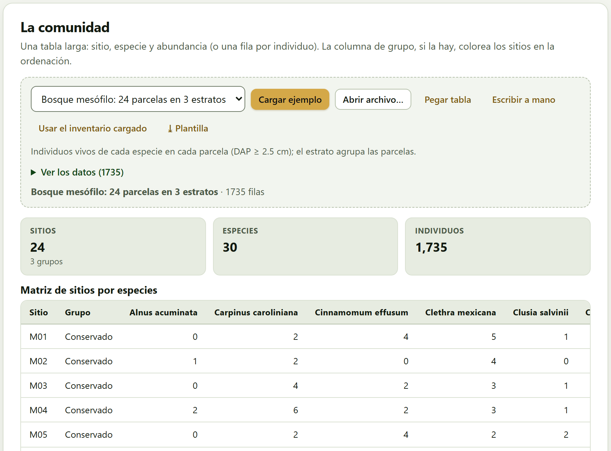
Figura 6.1. El bosque mesófilo de ejemplo: los individuos vivos (DAP ≥ 2.5 cm) de 24 parcelas en 3 estratos. La matriz tiene 24 sitios, 30 especies y 1,735 individuos; cada celda es el número de individuos de una especie en una parcela.
Con Usar el inventario cargado, la app toma los árboles vivos del Bloque 3, cada uno como un individuo, con su parcela como sitio, su estrato (o su conglomerado) como grupo y su altura. Así la diversidad sale del mismo inventario que dio las existencias, sin preparar otra tabla.
Debajo aparecen tres mosaicos —Sitios (con el número de grupos), Especies e Individuos— y la Matriz de sitios por especies, que muestra hasta 30 filas en pantalla y se descarga completa con ⤓ CSV o ⤓ XLSX.
iEl segundo ejemplo
La lista de ejemplos de la tarjeta trae también Cafetal: árboles de sombra de 25 parcelas, con la finca como grupo. Da 25 sitios en 5 grupos, 10 especies y 694 individuos: una comunidad mucho más pobre, dominada por las dos especies de Inga, que conviene comparar con la del bosque.
6.2Índices de diversidad
La tarjeta no pide nada: en cuanto hay una comunidad, calcula los índices clásicos para cada sitio y para todos los sitios juntos.
Los seis mosaicos son los del conjunto completo: Riqueza observada (con Chao1 y ACE debajo), Shannon H′ (con su exponencial, en «especies efectivas»), Simpson 1 − λ (con 1/λ), Pielou J, α de Fisher y Cobertura de la muestra, que se marca en verde cuando pasa de 95 %. La tabla Índices por sitio repite todo por parcela —N, S, H′, 1 − λ, 1/λ, J, α, Margalef, Chao1, ACE y la cobertura— y cierra con la fila Todos los sitios. La gráfica Riqueza observada y estimada por sitio pone, para cada parcela ordenada de más a menos especies, la riqueza observada y las dos estimadas.
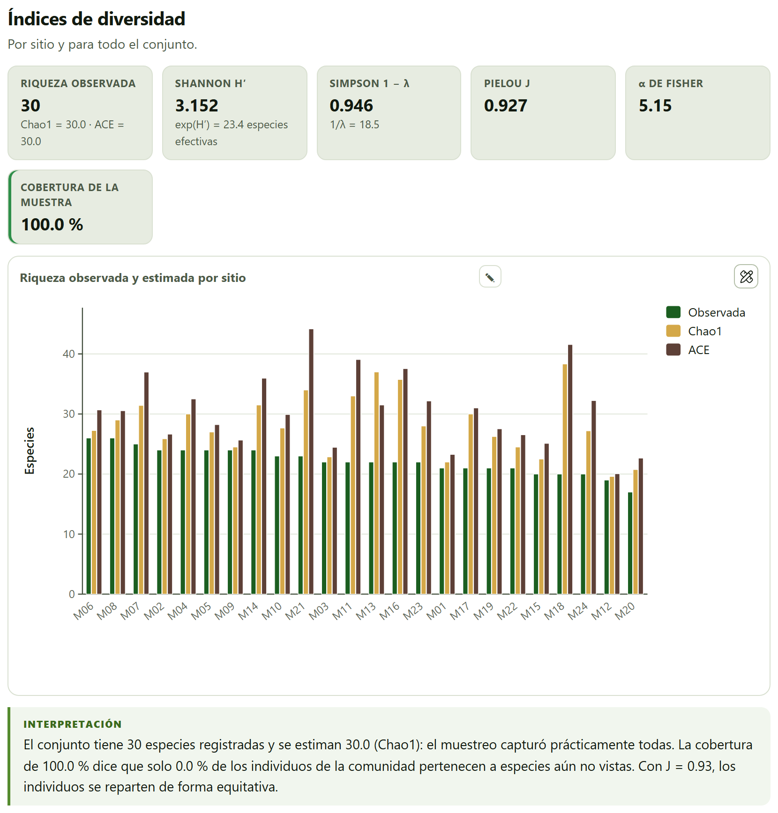
Figura 6.2. El mesófilo completo: 30 especies observadas y 30.0 estimadas por Chao1 y ACE, H′ = 3.152 (23.4 especies efectivas), 1 − λ = 0.946, J = 0.927 y α de Fisher = 5.15, con una cobertura de 100.0 %. Por parcela, en cambio, faltan especies: M18 registra 20 y Chao1 estima 38.3. La tabla por sitio se omitió en la imagen.
La interpretación de la app aplica tres reglas: si Chao1 supera a la riqueza observada por menos de media especie, «el muestreo capturó prácticamente todas»; la cobertura dice qué fracción de los individuos pertenece a especies aún no vistas; y si J pasa de 0.8, «los individuos se reparten de forma equitativa», si no, «unas pocas especies dominan». En el mesófilo de ejemplo dice que se capturaron prácticamente todas y que el reparto es equitativo (J = 0.93); el cafetal de ejemplo da 10 especies, Chao1 = 10.0, H′ = 2.057 y J = 0.893.
θTeoría en breve · riqueza, equidad y lo que falta por ver
Con pi la proporción de individuos de la especie i, Shannon H′ = −Σpi ln pi mide la incertidumbre de adivinar la especie de un individuo al azar, y Simpson λ = Σpi², la probabilidad de que dos individuos sean de la misma especie; 1 − λ y 1/λ crecen con la diversidad. Pielou J = H′/ln S compara H′ con su máximo: 1 si todas las especies son igual de abundantes. El α de Fisher sale de S = α ln(1 + N/α) y depende poco del tamaño de la muestra (Fisher et al. 1943); Margalef (S − 1)/ln N y Menhinick S/√N son índices de riqueza corregidos de forma más burda (Magurran 2004). Chao1 (corregido por sesgo, S + f₁(f₁ − 1)/(2(f₂ + 1)); Chao 1987) y ACE (con las especies de 10 individuos o menos como raras; Chao y Lee 1992) estiman cuántas especies hay en la comunidad a partir de las que se vieron una o dos veces (f₁ y f₂). La cobertura de Chao y Jost (2012) es la fracción de los individuos de la comunidad que pertenecen a especies ya registradas.
!Compara sitios con el mismo esfuerzo
La riqueza observada crece con el número de individuos contados: una parcela con 91 individuos (M08, 26 especies) y otra con 59 (M20, 17 especies) no se comparan directamente. Para comparar riquezas usa la rarefacción de la sección 6.3, o los índices que dependen menos del tamaño (α de Fisher, 1/λ). Y mira la cobertura de cada parcela: con 0.820 (M21), casi uno de cada cinco individuos de esa comunidad pertenece a especies que la parcela no registró.
6.3Números de Hill, rarefacción y acumulación
Los números de Hill ponen todos los índices en una sola escala, la de las especies efectivas: cuántas especies igualmente abundantes darían la misma diversidad. La rarefacción y la acumulación dicen cómo crece la riqueza con el esfuerzo de muestreo.
Tampoco pide nada. Si la comunidad tiene entre 2 y 8 grupos, cada gráfica lleva una curva por grupo además de la de Todos (en negro). Hay tres gráficas y una tabla:
Perfil de diversidad de Hill: el número efectivo de especies qD para el orden q de 0 a 3. En q = 0 es la riqueza; en q = 1, exp(H′); en q = 2, el inverso de Simpson.
Rarefacción (continua) y extrapolación (punteada): las especies esperadas en una submuestra de m individuos, hasta el tamaño observado (el punto) y extrapoladas hasta el doble.
Acumulación de especies por parcela (± 1 DE): las especies esperadas al juntar 1, 2, … parcelas, con su banda.
Diversidad observada y asintótica: para cada conjunto, los individuos, la diversidad observada y la asintótica en q = 0, 1 y 2 y la cobertura.
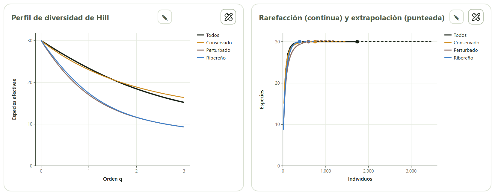
Figura 6.3. Los tres estratos del mesófilo tienen las mismas 30 especies (q = 0), pero el perfil del conservado cae mucho más despacio que los del perturbado y el ribereño: en q = 2 tiene 18.88 especies efectivas frente a 11.60 y 11.66. Las curvas de rarefacción llegan a su asíntota antes de los 500 individuos.
El perfil de Hill es la manera más honesta de comparar comunidades: si dos perfiles se cruzan, una comunidad es más rica pero la otra más equitativa, y ningún índice suelto lo diría. En el ejemplo, los estratos perturbado y ribereño casi coinciden en todo el perfil, aunque el perturbado tiene 593 individuos y el ribereño 391.
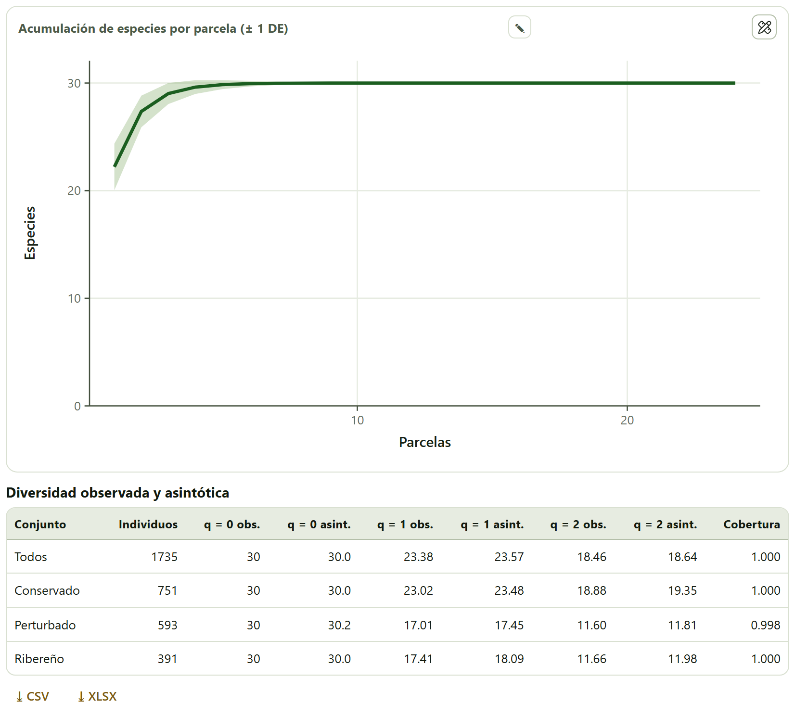
Figura 6.4. La acumulación del mesófilo pasa de unas 22 especies con una parcela a las 30 antes de juntar diez, y la última parcela agrega 0.00 especies. En la tabla, la diversidad asintótica apenas supera a la observada (23.57 frente a 23.38 en q = 1 para todos los sitios).
θTeoría en breve · los estimadores
qD = (Σpiq)1/(1−q) decrece con q, y tanto más rápido cuanto más dominada está la comunidad (Hill 1973). Los valores asintóticos (Chao et al. 2013, 2014) estiman la diversidad de la comunidad completa: la riqueza por S + ((n − 1)/n)·f₁²/(2f₂), la entropía de Shannon por la fórmula de Chao, Wang y Jost, y Simpson por n(n − 1)/Σx(x − 1). La rarefacción es la de Hurlbert (1971), E[Sm] = Σ[1 − C(n − xi, m)/C(n, m)], y la extrapolación hasta 2n, la de Chao et al. (2014). La acumulación usa la expectativa exacta de especies en t parcelas y su desviación estándar condicionada a la muestra (Colwell et al. 2004).
La interpretación mira el último tramo de la acumulación: si la última parcela agregó menos de media especie, «la curva de acumulación ya se aplana; más parcelas apenas agregarían especies»; si no, «la curva aún sube».
6.4Similitud entre sitios y ordenación
¿Qué tanto comparten especies los sitios? La tarjeta calcula la disimilitud entre cada par de sitios y la resume en un mapa de calor, un dendrograma y una ordenación en dos dimensiones. Hacen falta al menos 3 sitios.
El único control es Índice: Bray–Curtis (el de omisión, con abundancias), Jaccard o Sørensen (los dos con presencia y ausencia). La tarjeta dibuja la Disimilitud entre sitios como mapa de calor (0 = idénticos, 1 = sin nada en común), el dendrograma UPGMA con su correlación cofenética en el título y la ordenación NMDS con su estrés; los sitios se colorean por grupo.
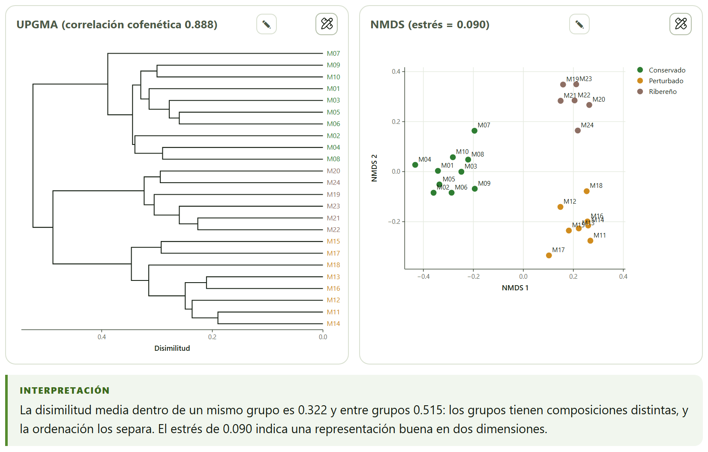
Figura 6.5. Con Bray–Curtis, el dendrograma (correlación cofenética 0.888) separa los tres estratos sin mezclas, y la NMDS (estrés = 0.090) los pone en tres nubes. La disimilitud media es 0.322 dentro de un estrato y 0.515 entre estratos.
Los botones Enviar la matriz a ClusteringPro y Enviar la matriz a PCAPro descargan la matriz de sitios por especies en CSV (con las columnas sitio y grupo primero) y abren esa app de la suite en una pestaña nueva, donde se carga con su Abrir archivo. Para abrirlas hace falta conexión; el archivo se descarga de todos modos.
θTeoría en breve · disimilitud, árbol y ordenación
Con a las especies compartidas y b y c las exclusivas de cada sitio, Jaccard vale (b + c)/(a + b + c) y Sørensen (b + c)/(2a + b + c); Bray–Curtis, Σ|x − y|/Σ(x + y), pesa además las abundancias (Legendre y Legendre 2012). UPGMA une los grupos por su disimilitud media; la correlación cofenética (Sokal y Rohlf 1962) mide qué tan bien conserva el árbol las disimilitudes originales. La NMDS busca dos ejes cuyas distancias respeten el orden de las disimilitudes, minimizando el estrés-1 de Kruskal (1964) por mayorización (de Leeuw y Mair 2009) desde el escalamiento clásico y 20 configuraciones al azar, y se rota a sus ejes principales.
Cambiar el índice cambia la lectura. Con Jaccard la disimilitud media del mesófilo es 0.327 dentro de los estratos y 0.398 entre ellos, y con Sørensen, 0.198 y 0.251; con los dos el estrés sube a 0.242. Como casi todas las parcelas tienen casi todas las especies, la presencia y ausencia distingue poco: lo que separa a los estratos es cuánto de cada especie hay, y eso sólo lo ve Bray–Curtis. (Jaccard y Sørensen dan la misma NMDS porque uno es función creciente del otro, y la NMDS sólo usa el orden.)
La interpretación compara la disimilitud media entre grupos con la de dentro de los grupos: si la primera es más de 1.15 veces la segunda, «los grupos tienen composiciones distintas, y la ordenación los separa». El estrés se lee como representación buena por debajo de 0.10, aceptable hasta 0.20 y pobre por encima.
6.5Estructura vertical
¿Ocupan todas las especies todos los pisos, o cada piso tiene las suyas? La tarjeta lo resume con el índice de perfil de especies de Pretzsch y necesita la altura de al menos 10 individuos; sin ella, lo avisa.
La app divide el rodal en tres zonas según la altura máxima: zona I, más de 80 % de la altura máxima; zona II, de 50 a 80 %; zona III, hasta 50 %. Los mosaicos dan A de Pretzsch (con su máximo posible), A relativo y Altura máxima. La tabla Índice de Pretzsch por grupo los repite para todos y para cada grupo, con los individuos de cada zona; la gráfica Individuos por zona de altura (10 especies más abundantes) apila las tres zonas de cada especie; y la tabla Estratos por la media y la desviación estándar de la altura da otra división, más simple, en estrato inferior, medio y superior.
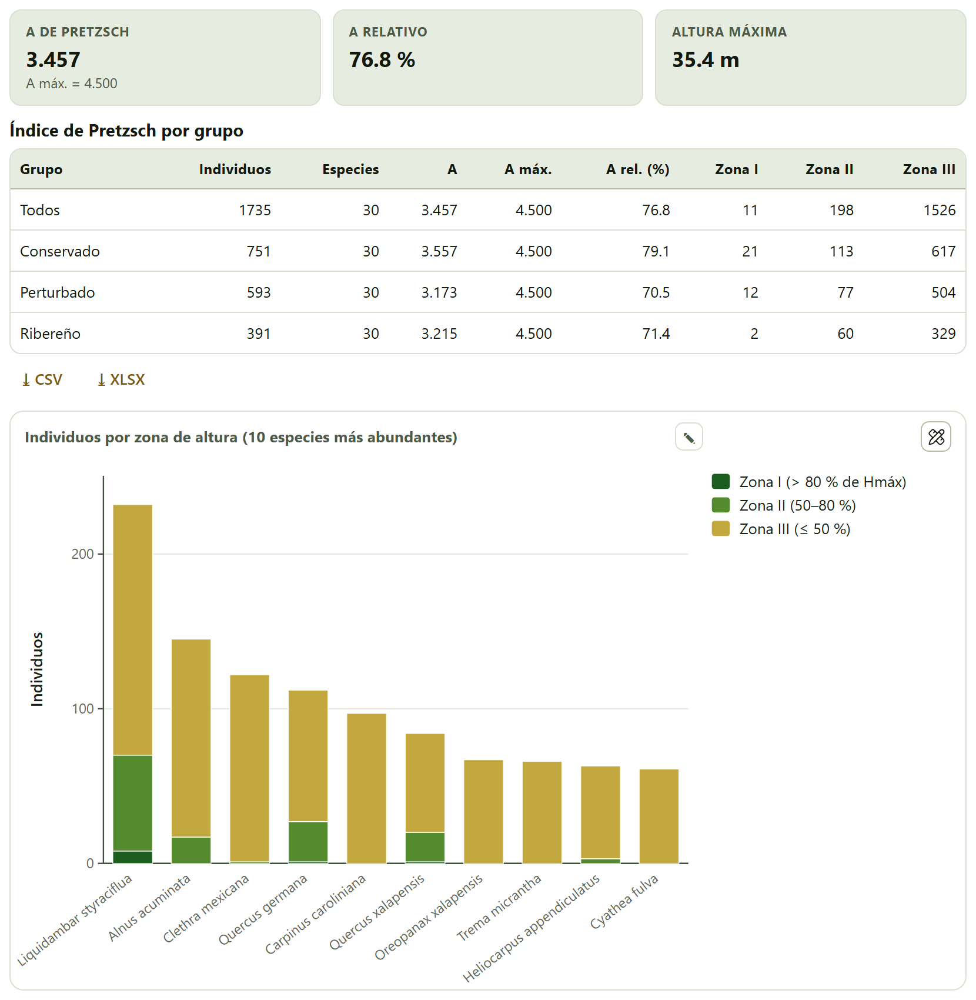
Figura 6.6. El mesófilo: A = 3.457 de un máximo de 4.500, A relativo de 76.8 % y altura máxima de 35.4 m. Sólo 11 individuos llegan a la zona I; la mayoría de las especies vive en la zona III, y sólo Liquidambar styraciflua tiene individuos visibles en las tres zonas.
θTeoría en breve · el índice de Pretzsch
A = −ΣΣ pij ln pij, con pij la proporción de individuos de la especie i en la zona j, es un Shannon de especies por pisos (Pretzsch 1996, 2009). Su máximo, Amáx = ln(3S), corresponde a todas las especies repartidas por igual en los tres pisos, y Arel = 100·A/Amáx. Los estratos por la media y la desviación estándar (Souza et al. 2003) ponen el inferior por debajo de la media − 1 DE y el superior por encima de la media + 1 DE; en el ejemplo, por debajo de 5.5 m (195 individuos) y desde 16.2 m (265).
Cada grupo usa su propia altura máxima, así que las zonas de un grupo no son las del conjunto: por eso el estrato conservado tiene 21 individuos en su zona I aunque el conjunto sólo tenga 11. La interpretación dice que la estructura vertical es compleja si A relativo pasa de 70 %, y simple si no; en el ejemplo, 77 %.
!Un árbol muy alto aplasta las zonas
Las zonas se miden contra la altura máxima, y un solo emergente (o un error de captura) las desplaza todas hacia abajo. En el mesófilo de ejemplo, la altura máxima de 35.4 m deja a sólo 1 % de los individuos en la zona I. Revisa la altura máxima antes de interpretar el índice, y compara siempre con los estratos por la media, que dependen menos de un solo árbol.
6.6Patrón espacial de los árboles
Con las coordenadas de cada tallo en una parcela rectangular, la tarjeta responde si los árboles están agregados, distribuidos al azar o regularmente espaciados, y a qué distancias. Hacen falta al menos 10 árboles.
La tarjeta de datos pide x (m) * y y (m) * de cada tallo, medidas desde una esquina de la parcela, y, si se tienen, Especie, DAP (cm) (para el tamaño de los puntos del mapa) y Grupo (piso, cohorte…). Arriba están los controles: Ancho de la parcela (m) y Largo de la parcela (m) (50 y 50), Distancia máxima para K (m) (12), Simulaciones para la envolvente (99; la app acepta de 19 a 999) y Árboles, que elige Todos o un grupo. Los árboles que caen fuera del rectángulo no se usan, y un aviso dice cuántos son.
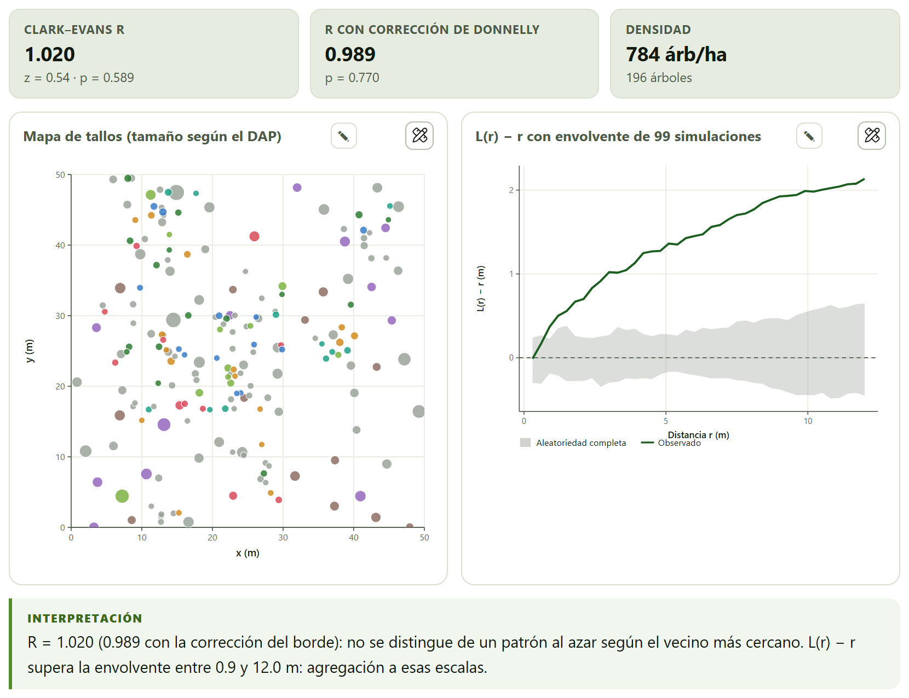
Figura 6.7. Los 196 tallos de la parcela mapeada (784 árb/ha). Clark–Evans da R = 1.020 (0.989 con la corrección de Donnelly, p = 0.770): al vecino más cercano no se distingue del azar. Pero L(r) − r supera la envolvente entre 0.9 y 12.0 m: hay agregación a esas escalas.
Los mosaicos dan Clark–Evans R con su z y su p, R con corrección de Donnelly con su p y la Densidad. A la izquierda queda el Mapa de tallos (tamaño según el DAP), coloreado por especie; a la derecha, L(r) − r con envolvente de 99 simulaciones: la línea es lo observado y la banda gris, lo que daría el azar con el mismo número de árboles.
iLa envolvente no es una prueba formal
Con 99 simulaciones, la banda es la mínima y la máxima de L(r) − r bajo el azar a cada distancia. Que la curva salga de ella en una distancia cualquiera no equivale a una prueba al 1 %, porque se miran muchas distancias a la vez; tómala como guía de a qué escalas hay estructura, y confirma con el índice de Clark–Evans y con lo que sabes del rodal.
▸Ejemplo resuelto · dos patrones que se anulan
¿Cómo puede un índice decir «al azar» y otro «agregado»? Elige en Árboles cada piso por separado. El dosel (70 árboles) da R = 1.504 (1.427 corregido, p < 0.001): árboles más regularmente espaciados que al azar, con L(r) − r por debajo de la envolvente entre 1.5 y 6.0 m, la huella de la competencia entre copas. El sotobosque (126 árboles) da R = 0.616 (0.593 corregido, p < 0.001): agregado, con L(r) − r por encima de la envolvente de 0.9 a 12.0 m. Juntos, la regularidad de uno y la agregación del otro dejan a Clark–Evans cerca de 1, mientras que la K de Ripley, que mira todas las distancias a la vez, sigue viendo los grupos del sotobosque.
θTeoría en breve · vecino más cercano y K de Ripley
Clark y Evans (1954) comparan la distancia media al vecino más cercano con la esperada bajo aleatoriedad espacial completa, 1/(2√λ): R < 1 es agregación y R > 1, regularidad. Cerca del borde los vecinos se pierden, y la corrección de Donnelly (1978) suma (0.0514 + 0.0412/√n)·P/n a la distancia esperada (P = perímetro). La K de Ripley (1977) cuenta los vecinos a menos de r de cada árbol, con la corrección por traslación (Ohser 1983); L(r) = √(K/π) vale r bajo el azar, así que L(r) − r por encima de la envolvente es agregación a esa escala y por debajo, regularidad (Baddeley et al. 2015).
La interpretación usa la R corregida: con p < 0.05 dice si los árboles están más agregados o más regularmente espaciados que al azar, y después da los intervalos de distancia en que L(r) − r sale de la envolvente por arriba (agregación) o por abajo (regularidad o competencia).
✕Cuando algo sale mal
La matriz tiene especies de más. Un mismo nombre escrito de dos maneras («Quercus sp.» y «Quercus sp») son dos columnas. Revisa la lista de especies de la matriz antes de leer los índices.
Las abundancias salen dobladas. Si la tabla trae una fila por individuo y una columna de abundancia, cada fila vale lo que dice esa columna. Empareja la abundancia sólo si cada fila resume varios individuos.
«Hacen falta al menos 3 sitios» en la similitud, o «La estructura vertical necesita la altura de los individuos»: la comunidad tiene menos de tres sitios, o no se emparejó la altura (o hay menos de 10 alturas).
No hay curvas por grupo. Las curvas de Hill, de rarefacción y las filas por grupo sólo aparecen con 2 a 8 grupos.
Muchos árboles «quedan fuera del rectángulo». El ancho y el largo no corresponden a la parcela, o las coordenadas tienen el origen en el centro: deben ir de 0 al ancho y de 0 al largo.
✓Regla de decisión
Si la cobertura de la muestra pasa de 95 % y Chao1 apenas supera a la riqueza observada
entonces el inventario registró casi todas las especies; la riqueza observada es confiable.
Si la cobertura es baja o la acumulación aún sube
entonces faltan especies: reporta Chao1 o la riqueza asintótica con la observada, y compara sitios por rarefacción.
Si J pasa de 0.8
entonces la comunidad es equitativa; si no, unas pocas especies dominan (míralo en el perfil de Hill).
Si la disimilitud entre grupos supera en más de 15 % a la de dentro de los grupos
entonces los grupos tienen composiciones distintas.
Si el estrés de la NMDS pasa de 0.20
entonces la ordenación es una representación pobre: lee el dendrograma o prueba otro índice.
Si A relativo de Pretzsch pasa de 70 %
entonces la estructura vertical es compleja: las especies ocupan varios pisos.
Si R corregida es menor que 1 con p < 0.05 (o mayor que 1)
entonces los árboles están agregados (o regularmente espaciados); la curva L(r) − r dice a qué distancias.
Guías para interpretar, no leyes: el tamaño de las parcelas, el diámetro mínimo inventariado y la historia del rodal cambian lo que los índices pueden decir.
7
Capítulo siete · Bloque 7
Sistemas agroforestales
En un cafetal los árboles no son la cosecha, pero deciden buena parte de ella: dan sombra, guardan carbono y sostienen la diversidad. Este bloque mide la sombra —contando los árboles del inventario o con una fotografía del dosel—, busca la sombra con la que el cultivo rinde más, dibuja el arreglo de una plantación nueva y compara el carbono del sistema con el de un monocultivo a pleno sol.
7.1Sombra a partir del inventario
7.2Sombra a partir de una fotografía del dosel
7.3Sombra y rendimiento del cultivo
7.4Diseño de plantación
7.5Presupuesto de carbono del sistema
El bloque se abre con Bloque 7›Sistemas agroforestales. Su línea en pantalla dice «Sombra de cafetales (por inventario o por fotografía hemisférica), sombra y rendimiento, arreglos de plantación y presupuesto de carbono.». Está pensado para cafetales y otros cultivos bajo sombra, y sus cinco tarjetas son independientes: cada una tiene su propio botón de ejemplo. El botón Abrir en Agroforestería del cafetal en la portada (sección I.7) las llena todas a la vez: carga el inventario del cafetal en el Bloque 3, calcula la sombra, lee las 25 parcelas de sombra y rendimiento, analiza la foto sintética y hace el presupuesto de carbono. Las cifras de este capítulo son las de ese ejemplo.
7.1Sombra a partir del inventario
Si el inventario trae el diámetro de copa de cada árbol de sombra, la app calcula en cada parcela la densidad, el área basal, la cobertura de copas, la riqueza de especies de sombra y un índice de complejidad, y los resume por tipo de manejo.
La tarjeta no tiene tarjeta de datos propia: lee el inventario del Bloque 3. Cargar el cafetal de ejemplo carga el cafetal en el Bloque 3 y vuelve aquí; Usar el inventario del Bloque 3 toma el que ya esté cargado. Cuentan los árboles vivos, con la superficie de cada parcela según su diseño, y el grupo de cada parcela (su estrato o su conglomerado) hace de manejo. Si ningún árbol trae el diámetro de copa, la app avisa que la cobertura no se puede calcular y sugiere la fotografía (sección 7.2).
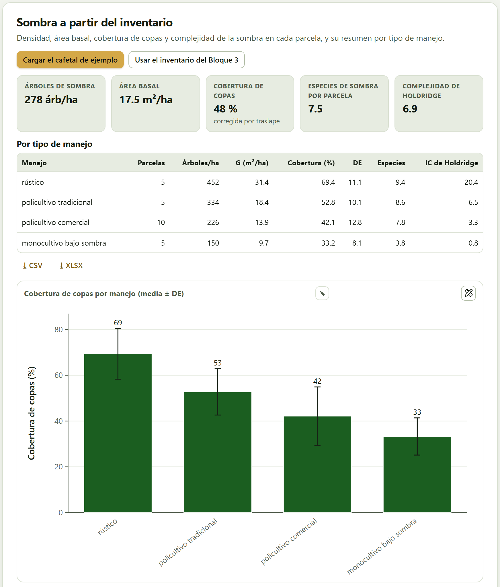
Figura 7.1. El cafetal de ejemplo: en promedio, 278 árboles de sombra por hectárea, 17.5 m²/ha de área basal, 48 % de cobertura de copas corregida por traslape, 7.5 especies de sombra por parcela y una complejidad de Holdridge de 6.9. La cobertura baja de 69.4 % en el manejo rústico a 33.2 % en el monocultivo bajo sombra.
Los cinco mosaicos son promedios de las parcelas. Si hay más de un manejo, la tabla Por tipo de manejo da para cada uno las parcelas, los árboles por hectárea, el área basal, la cobertura con su desviación estándar, las especies y el índice de Holdridge, ordenados de más a menos cobertura, y la gráfica Cobertura de copas por manejo (media ± DE) dibuja la cobertura media de cada manejo con su desviación estándar. Debajo, la tabla Por parcela da para cada parcela, además, la suma de las copas (Σ copas (%)) y la altura media.
Tabla 7.1. La sombra del cafetal de ejemplo por tipo de manejo
Manejo
Parcelas
Árboles/ha
G (m²/ha)
Cobertura (%)
Especies
IC
rústico
5
452
31.4
69.4
9.4
20.4
policultivo tradicional
5
334
18.4
52.8
8.6
6.5
policultivo comercial
10
226
13.9
42.1
7.8
3.3
monocultivo bajo sombra
5
150
9.7
33.2
3.8
0.8
θTeoría en breve · cobertura con traslape y complejidad
Cada copa ocupa π·c²/4, con c su diámetro. La suma de las copas entre la superficie de la parcela puede pasar de 100 % porque las copas se enciman: la parcela P14 suma 152 %. Si las copas se reparten al azar, la fracción del suelo bajo al menos una copa es C = 1 − exp(−Σa/A) (Crookston y Stage 1999): con 152 % de copas, 78.0 % del suelo queda cubierto. El índice de complejidad de Holdridge (Holdridge et al. 1971) multiplica especies × árboles × área basal (m²) × altura media (m) / 1000, con árboles y área basal llevados a 0.1 ha; crece rápido con la estructura, y por eso separa tan bien los manejos tradicionales de los simplificados (Moguel y Toledo 1999).
7.2Sombra a partir de una fotografía del dosel
Cuando el inventario no trae las copas, o para medir la sombra en un punto, una foto del dosel tomada desde abajo basta: la app separa el cielo del follaje y mide la apertura.
Abrir una foto… lee una imagen de tu equipo (la foto no sale de él; si es grande, se reduce a 640 píxeles por lado para el cálculo). Foto de ejemplo (sintética) dibuja una foto hemisférica de prueba bajo un dosel de sombra. Los controles son:
Tipo de foto: Hemisférica (ojo de pez), tomada con una lente de ojo de pez hacia el cenit, o Normal hacia arriba, una foto común.
Canal: Azul (recomendado) o Luminancia. En el azul el cielo es mucho más brillante que las hojas, y se separan mejor.
Umbral (vacío = Otsu): el nivel de gris (0 a 255) que separa cielo y dosel. Vacío, lo calcula la app.
Radio del círculo (% del lado menor): el círculo útil de la lente (100 por omisión); sólo cuenta en la foto hemisférica.
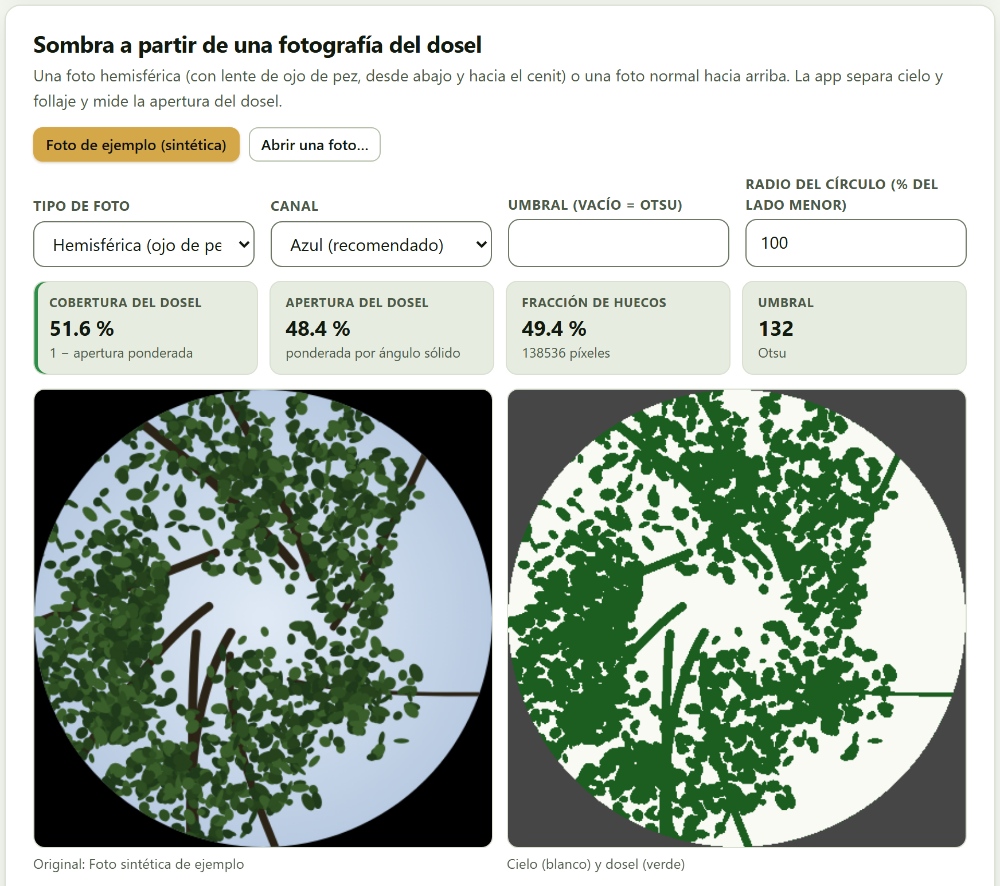
Figura 7.2. La foto sintética de ejemplo: con el umbral de Otsu (132), la cobertura del dosel es 51.6 % (1 − apertura ponderada), la apertura del dosel 48.4 % y la fracción de huecos 49.4 %, sobre 138,536 píxeles. A la derecha, la segmentación: cielo en blanco, dosel en verde y, en gris, lo que queda fuera del círculo.
Los mosaicos dan la Cobertura del dosel, la Apertura del dosel (sólo con la foto hemisférica), la Fracción de huecos con los píxeles contados y el Umbral, con «Otsu» o «manual». Con la foto normal, la cobertura es 1 − la fracción de cielo. Debajo van el Histograma de grises y umbral y, en la foto hemisférica, la tabla Apertura por anillos de ángulo cenital, con el cielo visible en anillos de 15°.
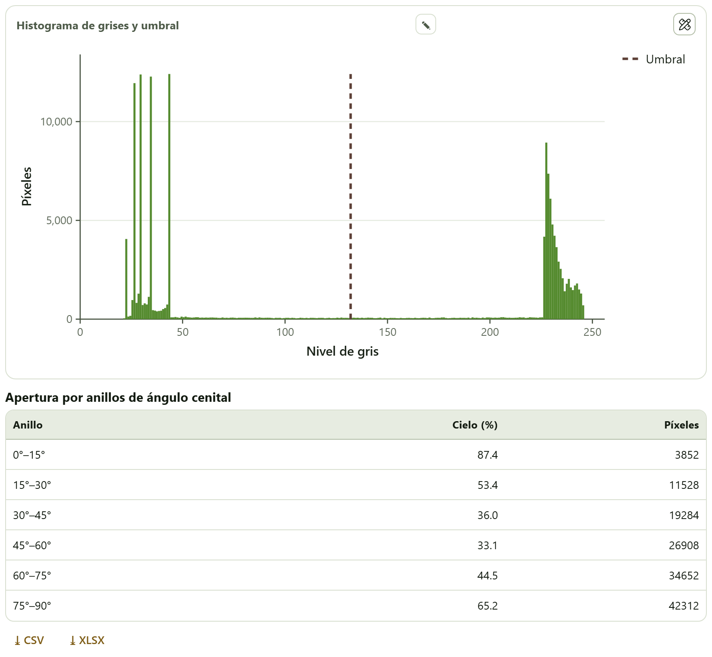
Figura 7.3. El histograma de la foto de ejemplo tiene dos picos bien separados —el follaje entre 20 y 45 y el cielo entre 225 y 245— y el umbral de Otsu cae entre ellos. El cielo visible va de 87.4 % cerca del cenit (0°–15°) a 33.1 % entre 45° y 60°.
θTeoría en breve · huecos y apertura
El umbral de Otsu (1979) es el que maximiza la varianza entre las dos clases del histograma. En una lente equiangular, un píxel a la distancia ρ del centro de un círculo de radio R mira al ángulo cenital θ = 90°·ρ/R. La fracción de huecos cuenta todos los píxeles por igual; la apertura del dosel pesa cada uno por el ángulo sólido que representa (sen θ/ρ), que en una lente equiangular disminuye del cenit al horizonte: un píxel junto al horizonte vale 0.64 de uno junto al cenit (Jonckheere et al. 2004; Frazer et al. 1999). Por eso las dos difieren: en el ejemplo, el anillo de 75° a 90°, con 65.2 % de cielo y 42,312 píxeles, pesa menos en la apertura que en la fracción de huecos, y la apertura (48.4 %) queda por debajo de la fracción de huecos (49.4 %).
!Cómo tomar la foto
Con cielo uniformemente nublado, al amanecer o al atardecer, sin sol directo en el cuadro, a la misma altura sobre el suelo (por encima del cultivo) y con la cámara nivelada. Revisa siempre la imagen segmentada: si el sol o el cielo brillante entre las hojas quedan mal clasificados, escribe el umbral a mano. Una foto describe un punto; para la parcela, promedia varias.
7.3Sombra y rendimiento del cultivo
¿Con cuánta sombra rinde más el cultivo? La tarjeta ajusta la regresión del rendimiento sobre la sombra, lineal y cuadrática, elige la mejor y, si la curva tiene máximo, da la sombra del rendimiento máximo con su intervalo.
La tarjeta de datos pide Sombra (%) * y Rendimiento * de cada parcela, y opcionalmente Parcela y Grupo (manejo), que colorea los puntos. Hacen falta al menos 5 parcelas. El ejemplo, Cafetal: 25 parcelas, trae la sombra medida y el rendimiento de café pergamino (kg/ha) de cada parcela. La sombra puede venir de la sección 7.1, de las fotos de la 7.2 o de cualquier otra medición.
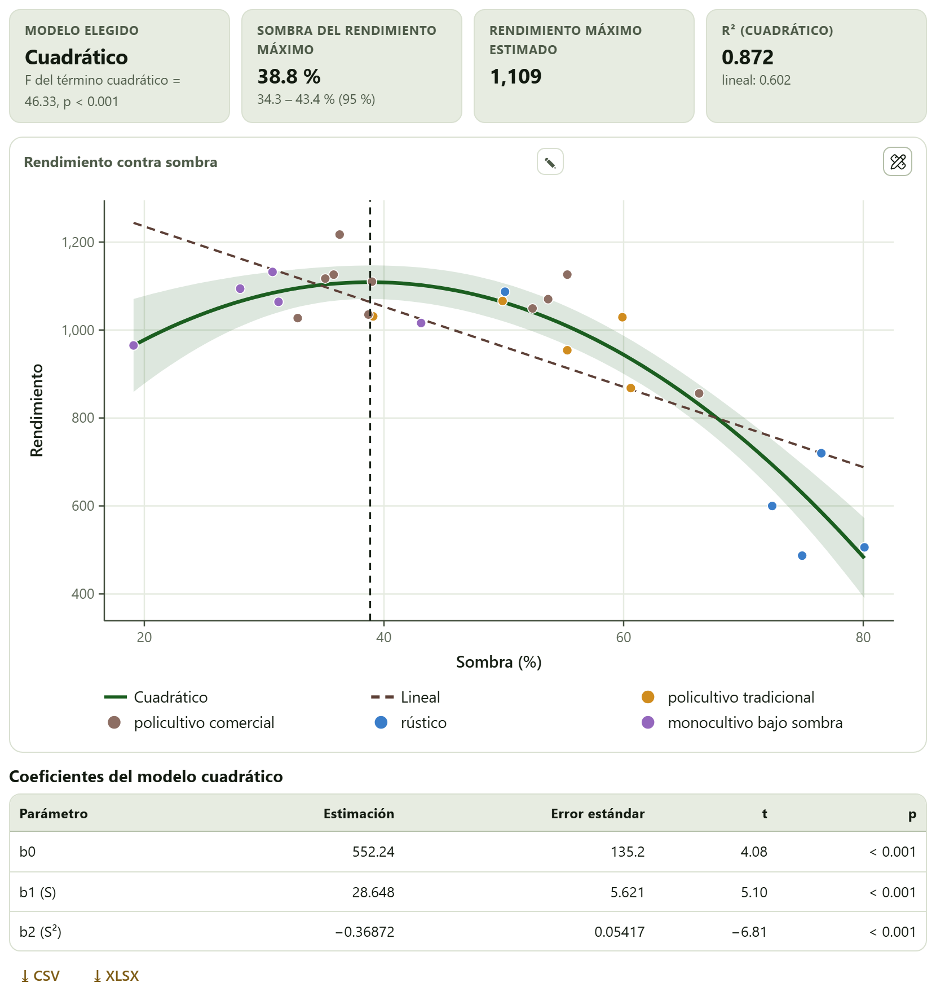
Figura 7.4. El cafetal de ejemplo: el modelo cuadrático gana (F del término cuadrático = 46.33, p < 0.001; R² de 0.872 frente a 0.602 del lineal). El rendimiento es máximo con 38.8 % de sombra (intervalo de 95 %: 34.3 a 43.4 %), donde la curva estima 1,109 kg/ha.
Los mosaicos dan el Modelo elegido, con la prueba F del término cuadrático; la Sombra del rendimiento máximo con su intervalo; el Rendimiento máximo estimado; y el R² (cuadrático) junto al lineal. La gráfica Rendimiento contra sombra dibuja las dos curvas —la cuadrática con su banda de confianza del 95 % de la media— y una línea vertical en la sombra del máximo. La tabla Coeficientes del modelo cuadrático da b0, b1 y b2 con su error estándar, t y p: en el ejemplo, b1 = 28.648 y b2 = −0.36872.
θTeoría en breve · el óptimo y su intervalo
Las dos regresiones se ajustan por mínimos cuadrados ordinarios; la prueba F del término cuadrático y el AIC deciden el modelo. Si b₂ < 0, la parábola tiene un máximo en S* = −b₁/(2b₂): en el ejemplo, −28.648/(2 × −0.36872) = 38.8 %. Su error estándar sale por el método delta, con el gradiente (−1/(2b₂), b₁/(2b₂²)) aplicado a la covarianza de b₁ y b₂ (Weisberg 2014). La forma de campana es la que se observa en cafetales: con poca sombra el cafeto sufre estrés y con mucha le falta luz (Soto-Pinto et al. 2000).
La interpretación dice que la curvatura es significativa si el término cuadrático tiene p < 0.05; si no, advierte que «los datos no distinguen un óptimo de una tendencia lineal». Si la curva no tiene máximo (b₂ ≥ 0), lo dice y no da sombra óptima.
7.4Diseño de plantación
Para una plantación nueva: cuántos árboles caben en un terreno rectangular con un arreglo y unas distancias dados, cuántos por hectárea, cuánto cuestan y cómo conviven con el cultivo.
La tarjeta no lee datos; dibuja el plano desde que se abre el bloque, con los valores por omisión, y lo vuelve a dibujar con cada cambio. Arreglo ofrece Marco real (cuadro), Tresbolillo (triángulo), Rectángulo, Cultivo en callejones, Cerco vivo (perímetro) y Linderos (dos lados). Los demás campos son Ancho del terreno (m) y Largo del terreno (m) (100 y 100), Distancia entre árboles (m) (6), Distancia entre hileras (m) (8, para el rectángulo), Ancho del callejón (m) (12, para los callejones), Cultivo: distancia (m) y Cultivo: entre hileras (m) (2 y 1.5) y Costo por árbol plantado (25, en la moneda que uses).
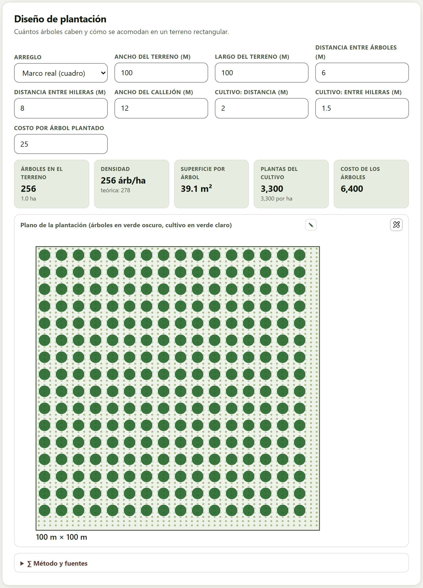
Figura 7.5. Los valores por omisión: marco real de 6 m en una hectárea. Caben 256 árboles (la densidad teórica de un arreglo infinito sería 278), cada uno con 39.1 m², con 3,300 plantas del cultivo a 2 × 1.5 m y un costo de 6,400.
Los mosaicos dan los Árboles en el terreno (con la superficie en hectáreas), la Densidad por hectárea con la teórica, la Superficie por árbol, las Plantas del cultivo y, si hay costo, el Costo de los árboles. El plano está a escala: los árboles en verde oscuro y el cultivo en verde claro, en su propio marco. Las plantas del cultivo se cuentan en todo el terreno, como si los árboles no les quitaran lugar.
Tabla 7.2. Los seis arreglos en 1 ha, con 6 m entre árboles y los demás valores por omisión
Arreglo
Árboles
Teórica (árb/ha)
m² por árbol
Costo
Marco real (cuadro)
256
278
39.1
6,400
Tresbolillo (triángulo)
304
321
32.9
7,600
Rectángulo (6 × 8 m)
192
208
52.1
4,800
Cultivo en callejones (12 m)
128
139
78.1
3,200
Cerco vivo (perímetro)
66
—
151.5
1,650
Linderos (dos lados)
32
—
312.5
800
θTeoría en breve · densidad real y teórica
Las posiciones se generan dentro del terreno dejando media distancia en los bordes, así que en un terreno finito caben menos árboles que en el arreglo infinito. La densidad teórica es 10 000/a² en cuadro, 10 000/(a·b) en rectángulo, 10 000/(a²·√3/2) en tresbolillo —un 15.5 % más árboles que el cuadro con la misma distancia— y 10 000/(a·ancho) en callejones. El cerco vivo pone un árbol cada a metros en el perímetro y los linderos, en los dos lados largos (Nair 1993; Evans y Turnbull 2004).
iEl plano cuenta como resultado cuando lo cambias
El plano inicial, con los valores por omisión, no marca el bloque como hecho ni entra al informe del Bloque 10 como resultado propio; en cuanto cambias un campo, sí.
7.5Presupuesto de carbono del sistema
¿Cuánto carbono guarda el cafetal con sombra frente a un monocultivo a pleno sol? La tarjeta suma el de los árboles de sombra, los cafetos, la hojarasca y el suelo del cafetal de ejemplo y lo compara con un monocultivo supuesto.
La tarjeta trabaja con las tablas del cafetal de ejemplo, no con datos propios: Calcular con el cafetal de ejemplo hace el cálculo, y después cada cambio en los campos lo repite. Los campos son Cafetos por hectárea (sistema) (vacío, la app pone la densidad media de las parcelas del ejemplo, 3447), Cafetos por hectárea (monocultivo) (5000), Carbono del suelo del monocultivo (Mg C/ha) (60), Hojarasca del monocultivo (Mg/ha) (3), Fracción de carbono (0.47) y Raíz/tallo del cultivo (0.27).
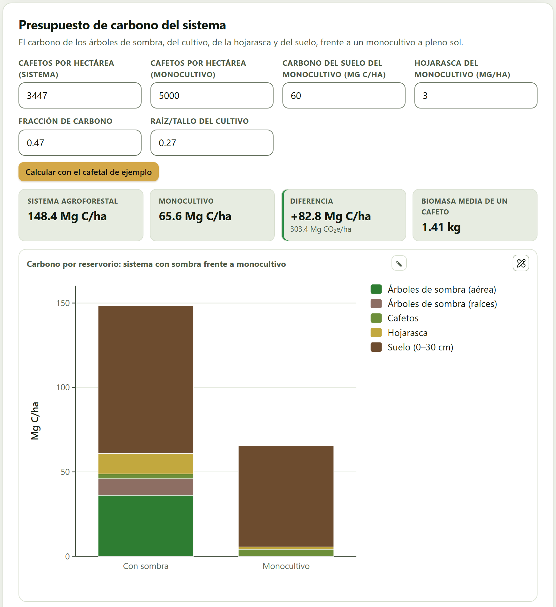
Figura 7.6. El cafetal de ejemplo guarda 139.8 Mg C/ha y el monocultivo supuesto 65.6 Mg C/ha: una diferencia de +74.2 Mg C/ha, o 272.0 Mg CO₂e/ha. Un cafeto pesa en promedio 1.41 kg.
Tabla 7.3. El presupuesto de carbono del ejemplo (Mg C/ha), como lo da la tabla de la app
Reservorio
Con sombra
Monocultivo
Diferencia
Árboles de sombra (aérea)
36.2
0.0
36.2
Árboles de sombra (raíces)
9.8
0.0
9.8
Cafetos
2.9
4.2
−1.3
Hojarasca
3.5
1.4
2.1
Suelo (0–30 cm)
87.5
60.0
27.5
Total
139.8
65.6
74.2
θTeoría en breve · de dónde sale cada reservorio
La biomasa aérea de los árboles de sombra sale de las ecuaciones de Segura et al. (2006) para Inga y Cordia, de van Noordwijk et al. (2002) para el plátano y de Chave et al. (2014) con la densidad de la madera para las demás especies; las raíces, de la razón del IPCC (2006) para montañas tropicales (0.27). Los cafetos usan la ecuación de Segura et al. (2006) con el diámetro a 15 cm y la altura, multiplicada por la densidad de plantación y por 1 + raíz/tallo. La hojarasca y el suelo (0–30 cm) vienen de las tablas del ejemplo. El carbono es la biomasa por la fracción de carbono, y el CO₂e, el carbono por 44/12. Comparaciones así son las que se hacen en los cafetales de Chiapas (Soto-Pinto et al. 2010).
!El monocultivo es un supuesto, no una medición
El monocultivo usa la biomasa media de los cafetos del ejemplo con su propia densidad y los valores de suelo y hojarasca que escribas. La diferencia de 74.2 Mg C/ha depende de ellos: con otro carbono del suelo del monocultivo, cambia en la misma cantidad. Reemplázalos por mediciones de un cafetal a pleno sol de la misma zona antes de reportar la diferencia como carbono adicional.
La interpretación dice cuánto más guarda el cafetal con sombra y en qué reservorios está la mayor parte de la diferencia: en los árboles de sombra y, si el suelo del cafetal supera al supuesto, también en el suelo.
✓Regla de decisión
Si el inventario trae el diámetro de copa
entonces usa la cobertura corregida por traslape, no la suma de las copas, como la sombra de la parcela.
Si no hay copas medidas
entonces mide la sombra con fotos del dosel: varias por parcela, a la misma altura y con cielo nublado.
Si la segmentación clasifica mal el cielo brillante o el sol
entonces escribe el umbral a mano en lugar del de Otsu.
Si el término cuadrático es significativo y b₂ < 0
entonces hay una sombra óptima: reporta S* con su intervalo, no sólo el valor puntual.
Si el término cuadrático no es significativo
entonces los datos no distinguen un óptimo de una tendencia lineal; no recomiendes un nivel de sombra con ellos.
Si vas a reportar el carbono adicional del sistema
entonces sustituye los supuestos del monocultivo por mediciones locales.
Guías para interpretar, no leyes: el cultivo, la altitud y el manejo cambian la sombra óptima y el carbono de cada reservorio.
✕Cuando algo sale mal
«Carga un inventario en el Bloque 3 o el cafetal de ejemplo»: no hay inventario cargado; usa Cargar el cafetal de ejemplo o carga el tuyo en el Bloque 3.
La cobertura no se puede calcular. El inventario no trae el diámetro de copa: emparéjalo en la tarjeta de árboles del Bloque 3, o usa la fotografía.
La cobertura de la foto no tiene sentido. Revisa el tipo de foto (una foto común tratada como hemisférica pierde las esquinas) y el radio del círculo, que debe coincidir con el círculo de la lente.
«Hacen falta al menos 5 parcelas» en sombra y rendimiento, o no aparece la sombra del máximo: hay menos de cinco parcelas con los dos valores, o la curva no tiene máximo dentro de los datos.
El presupuesto no aparece. Se calcula sólo después de pulsar Calcular con el cafetal de ejemplo.
8
Capítulo ocho · Bloque 8
Mapas y geoprocesamiento ligero
Todo inventario tiene un lugar. Este bloque pone las parcelas y los árboles en el mapa, mide la superficie de los polígonos del predio, traza la cuadrícula de puntos para levantar un inventario nuevo, la lleva al receptor GPS y hace un mapa continuo de una variable medida en las parcelas. Todo se calcula en tu equipo; el fondo de mapa en línea es opcional y viene apagado.
8.1El mapa
8.2Polígonos y áreas
8.3Cuadrícula de muestreo
8.4Exportar
8.5Interpolación entre parcelas
El bloque se abre con Bloque 8›Mapas; su título en pantalla es Mapas y geoprocesamiento ligero, con la línea «Parcelas y árboles en el mapa, áreas de polígonos, cuadrícula de muestreo, exportación GPX/KML/GeoJSON e interpolación.». Las cinco tarjetas comparten las mismas capas: lo que cargas, importas o dibujas en una aparece en el mapa y en las demás. El ejemplo principal es el bosque mesófilo (Abrir en Mapas en la portada, sección I.7): sus 24 parcelas con coordenadas y el polígono del predio, de 9 vértices. Para la interpolación se usan además las 25 parcelas del cafetal.
8.1El mapa
Un mapa propio de la app, que se mueve y se acerca como los mapas web, con las parcelas dibujadas con su radio real y los árboles en su lugar. Debajo queda una copia estática en coordenadas UTM, la que va al informe.
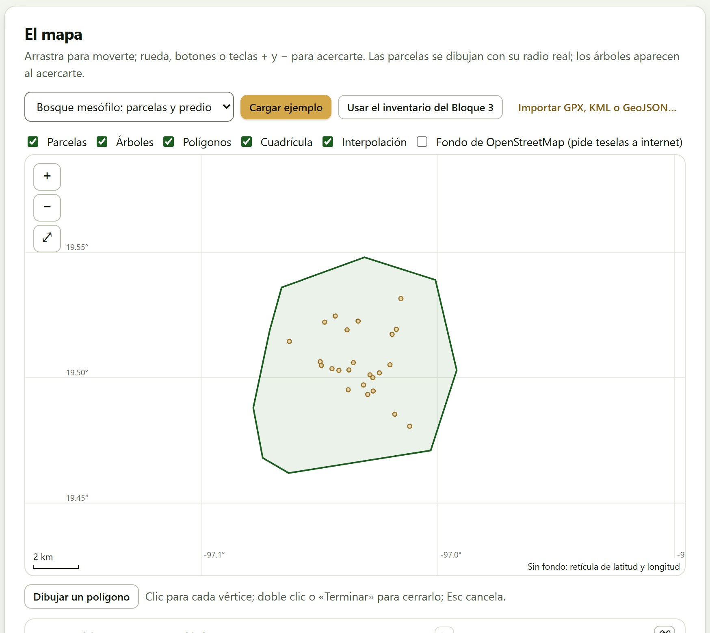
12345678
Figura 8.1. El mapa con el bosque mesófilo de ejemplo: el predio (en verde) y las 24 parcelas, sin fondo en línea, sobre la retícula de latitud y longitud. Las parcelas de 17.84 m de radio son apenas círculos al nivel de zoom de todo el predio.
1El ejemplo. La lista elige entre Bosque mesófilo: parcelas y predio y Cafetal: parcelas de 5 fincas; Cargar ejemplo lo carga en el Bloque 3 y trae aquí sus parcelas (y el predio, en el mesófilo).
2Usar el inventario del Bloque 3. Toma las parcelas del inventario cargado, si tienen latitud y longitud, con su radio y su estrato, y los árboles que traen x e y.
3Importar GPX, KML o GeoJSON… Agrega los polígonos y los puntos de un archivo; un mensaje dice cuántos se importaron.
4Las capas.Parcelas, Árboles, Polígonos, Cuadrícula e Interpolación se encienden y apagan por separado.
5Fondo de OpenStreetMap (pide teselas a internet). Apagado por omisión. Encendido, el navegador pide las teselas del área visible; tus datos no se envían.
6Los botones del mapa. + y − acercan y alejan; ⤢ ajusta el mapa a los datos.
7La escala y, a la derecha, la nota del fondo: sin fondo, «Sin fondo: retícula de latitud y longitud».
8Dibujar un polígono. Un clic por vértice; doble clic o Terminar el polígono lo cierra y Esc lo cancela.
El mapa se mueve arrastrando y se acerca con la rueda, los botones o las teclas + y −; las flechas lo desplazan. Las parcelas son círculos con su radio real; las que no tienen radio (los puntos importados) se dibujan como puntos. Los árboles aparecen al acercarse, desde el nivel de zoom 15, con un tamaño según su DAP: la app los ubica sumando sus coordenadas locales (x hacia el este, y hacia el norte, en metros) al centro de su parcela en UTM.
!Sin fondo, nada sale de tu equipo
Con el fondo apagado, el mapa es una retícula de latitud y longitud dibujada por la app, y ningún dato sale de tu computadora. Con el fondo encendido, el navegador pide las imágenes del área visible a los servidores de OpenStreetMap, cuyos datos tienen licencia ODbL y llevan la atribución en la esquina del mapa; las coordenadas de tus parcelas no se envían, pero el servidor sí sabe qué zona estás mirando. Si abriste la app con doble clic, algunos servidores pueden negar las teselas; en línea funciona.
Debajo del mapa, el Mapa estático en UTM (para el informe) repite los polígonos, las parcelas (coloreadas por estrato si hay más de uno), la cuadrícula y la superficie interpolada en la zona UTM del centro de los datos, con flecha del norte y escala. Es la figura que va al informe del Bloque 10 y al estudio de figuras.
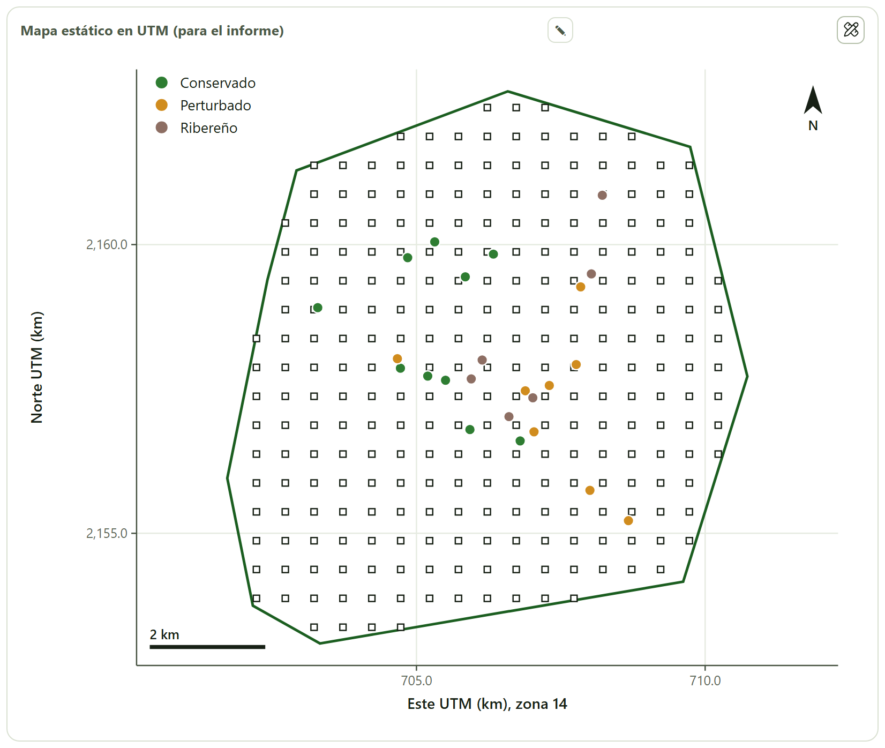
Figura 8.2. El mapa estático del mesófilo en la zona UTM 14, con las parcelas por estrato y la cuadrícula sistemática de 500 m de la sección 8.3 (los cuadros).
θTeoría en breve · dos proyecciones
El mapa interactivo usa la proyección de Mercator esférica a niveles de zoom enteros, la de los mapas web; deforma las distancias y las áreas según la latitud, y sirve para ver. Las mediciones se hacen en UTM (Mercator transversa), que dentro de su zona conserva las distancias con un error menor que 0.04 % (Snyder 1987; Karney 2011). Por eso el mapa estático, las áreas, la cuadrícula y la interpolación trabajan en metros UTM.
8.2Polígonos y áreas
La superficie y el perímetro de cada polígono —el predio, los rodales, las áreas de corta— calculados de dos maneras: en la zona UTM de su centro y sobre la esfera.
La tarjeta de datos pide los vértices de cada polígono en orden: Polígono * (el nombre, que agrupa los vértices), Latitud * y Longitud *, en grados decimales. Un polígono necesita al menos tres vértices; no hace falta repetir el primero al final. El ejemplo es el Predio del bosque mesófilo (9 vértices). A la tabla Polígonos llegan también los polígonos importados y los dibujados en el mapa; Quitar el último polígono deshace el último.
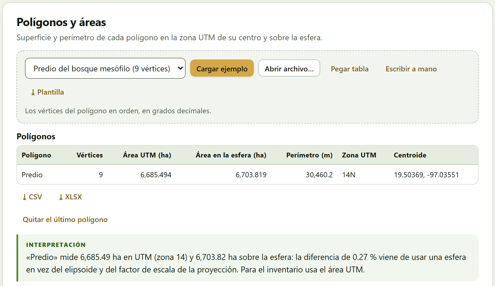
Figura 8.3. El predio del mesófilo de ejemplo: 9 vértices, 6,685.494 ha en UTM y 6,703.819 ha sobre la esfera, 30,460.2 m de perímetro, zona 14N y centroide en 19.50369, −97.03551.
La interpretación compara las dos áreas —en el ejemplo difieren 0.27 %— y recomienda usar el área UTM para el inventario: es la que se usa en catastro y la que corresponde a las distancias medidas en campo.
θTeoría en breve · dos áreas
El área en UTM sale de la fórmula del agrimensor (Gauss) sobre las coordenadas planas de la zona del centro del polígono, con los lados rectos en el plano; incluye el factor de escala de la proyección (≤ 0.04 % dentro de la zona). El área sobre la esfera suma triángulos esféricos desde el primer vértice con el teorema de L'Huilier (Todhunter 1886), con lados en arcos de círculo máximo y un radio medio de 6 371 008.8 m; difiere de la del elipsoide unas décimas de punto por ciento según la latitud.
8.3Cuadrícula de muestreo
Los centros de parcela de un inventario nuevo: una malla sistemática o puntos al azar dentro de un polígono, con sus coordenadas geográficas y UTM, listos para el GPS.
Los controles son Polígono (cualquiera de los cargados), Diseño (Sistemático (cuadrícula) o Aleatorio), Distancia entre puntos (m) (500) y Rotación (°) (0) para la malla, Puntos al azar (30) para el diseño aleatorio, Radio de la parcela (m) (17.84, la de 1,000 m²) para calcular la intensidad de muestreo, y la casilla Arranque aleatorio de la malla. Generar los puntos los calcula y los pone en el mapa.
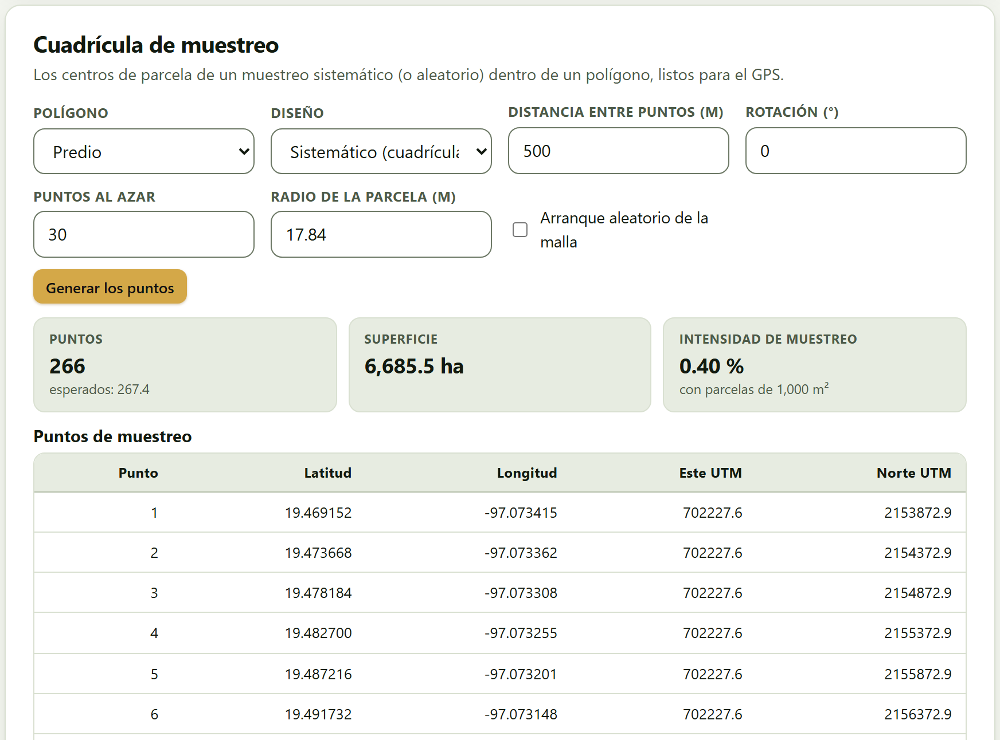
Figura 8.4. Una malla sistemática de 500 m en el predio del mesófilo: 266 puntos (se esperaban 267.4) en 6,685.5 ha. Con parcelas de 1,000 m², la intensidad de muestreo es 0.40 %.
Los mosaicos dan los Puntos (con los esperados, en la malla), la Superficie del polígono y la Intensidad de muestreo: la superficie de las parcelas entre la del polígono. La tabla Puntos de muestreo muestra los primeros 25 —número, latitud, longitud, este y norte UTM— y sus descargas llevan todos; los botones ⤓ GPX, ⤓ KML y ⤓ GeoJSON de esta tarjeta exportan sólo la cuadrícula (forestpro_cuadricula.gpx…), con los puntos nombrados G1, G2…
θTeoría en breve · la malla y su arranque
La malla se arma en UTM con la distancia y la rotación elegidas y se queda con los puntos dentro del polígono (prueba del rayo); el número esperado es la superficie entre la distancia al cuadrado: en el ejemplo, unos 66,855,000 m² entre 250,000 m², 267.4 puntos. Sin arranque aleatorio, la malla empieza a media celda del origen y sale siempre igual. Con Arranque aleatorio de la malla, el origen se sortea dentro de una celda, de modo que cada punto del predio tiene la misma probabilidad de caer en la muestra, condición para tratar la malla como una muestra probabilística (Gregoire y Valentine 2008). El diseño aleatorio sortea puntos uniformes dentro del polígono: con los 30 por omisión, la intensidad baja a 0.04 %.
iEl sorteo cambia cada vez
Con arranque aleatorio o con el diseño aleatorio, cada clic en Generar los puntos da un sorteo distinto. Descarga los puntos que vayas a usar y guárdalos con el proyecto del Bloque 10: no podrás volver a generarlos iguales.
8.4Exportar
Las capas del mapa en los formatos que leen los receptores GPS, los globos virtuales y los programas de mapas.
Los cuatro botones —⤓ GPX, ⤓ KML, ⤓ GeoJSON y ⤓ CSV— descargan en un solo archivo (forestpro_mapa.gpx, .kml, .geojson o .csv) las parcelas cargadas, los puntos de la cuadrícula y los polígonos. Cada parcela lleva su nombre, su estrato y, si las tiene, su área basal y su densidad; cada punto de la cuadrícula, sus coordenadas UTM. El CSV tiene las columnas nombre, lat, lon y descripcion, y no lleva los polígonos. Si no hay nada cargado, un aviso lo dice.
Formato
Para qué
GPX
Los receptores GPS de mano: las parcelas y la cuadrícula como puntos de paso para navegar hasta ellos; los polígonos, como trayectos cerrados.
KML
Los globos virtuales y muchos programas de mapas.
GeoJSON
Cualquier programa de información geográfica; guarda los atributos de cada punto.
CSV
Una hoja de cálculo con los puntos, o la tarjeta de datos de otra sección.
8.5Interpolación entre parcelas
Un mapa continuo de una variable medida en las parcelas —el área basal, el carbono, el rendimiento, la sombra— por distancia inversa o por kriging, con el variograma que dice si la variable tiene estructura espacial y la validación cruzada que dice qué método predice mejor.
Los datos vienen de dos fuentes. Si las parcelas del mapa vienen del inventario, Variable ofrece las suyas: Área basal (m²/ha), Densidad (árb/ha), Volumen (m³/ha) y, si se calcularon en el Bloque 4 antes de traer el inventario, Biomasa aérea (Mg/ha) y Carbono (Mg C/ha). O bien la tarjeta de datos de esta sección lee una tabla propia con Latitud *, Longitud *, Valor * y Nombre; sus dos ejemplos son el rendimiento de café pergamino (kg/ha) y la sombra (%) de las 25 parcelas del cafetal, y al cargarlos los puntos reemplazan a las capas del mapa.
Los controles son Método (Kriging ordinario, Kriging simple o Distancia inversa (IDW)), Modelo del variograma (Esférico, Exponencial o Gaussiano), Potencia de IDW (2), Distancia máxima del variograma (m, vacío = automática), Celdas en el lado largo (60; de 10 a 200) y Recortar al primer polígono. Interpolar hace el cálculo; hacen falta al menos 5 puntos con valor.
Los mosaicos dan los Puntos y el método, el Intervalo del mapa y dos validaciones cruzadas, cada una con su raíz del error cuadrático medio (RMSE) y su error medio: Validación cruzada: kriging ordinario (o Validación cruzada: kriging simple, si se eligió ese kriging; con la IDW elegida, el ordinario) y Validación cruzada: IDW. Las dos se calculan siempre, para compararlas. Siguen la gráfica Variograma experimental y modelo ajustado (el tamaño de cada punto, según los pares de parcelas que lo forman) y la tabla Modelo del variograma, con la pepita, la meseta parcial, el alcance, la proporción de pepita y la distancia máxima con el ancho de los intervalos. La superficie se pinta en el mapa interactivo (capa Interpolación) y en el mapa estático, con su escala de color.
θTeoría en breve · variograma, kriging y distancia inversa
Todo se calcula en metros UTM. El variograma experimental (Matheron 1963), γ(h) = Σ(zi − zj)²/(2N(h)), promedia las diferencias al cuadrado entre parcelas separadas por la distancia h, por omisión hasta un tercio de la diagonal de los datos en 15 intervalos. Se le ajusta un modelo esférico, exponencial o gaussiano por mínimos cuadrados ponderados con pesos Nj/hj² (Cressie 1985): la pepita c₀ es la variación a distancia cero (error y variación de muy corto alcance), la meseta c₀ + c₁, la variación total, y el alcance, la distancia a la que las parcelas dejan de parecerse (en el exponencial el alcance práctico es 3a, y en el gaussiano √3·a). El kriging ordinario predice cada celda con los pesos que minimizan la varianza del error con media desconocida; el simple, con la media de los datos (Isaaks y Srivastava 1989). La IDW (Shepard 1968) promedia los valores con pesos 1/dp, sin modelo. La validación cruzada deja fuera cada parcela, la predice con las demás y resume los errores.
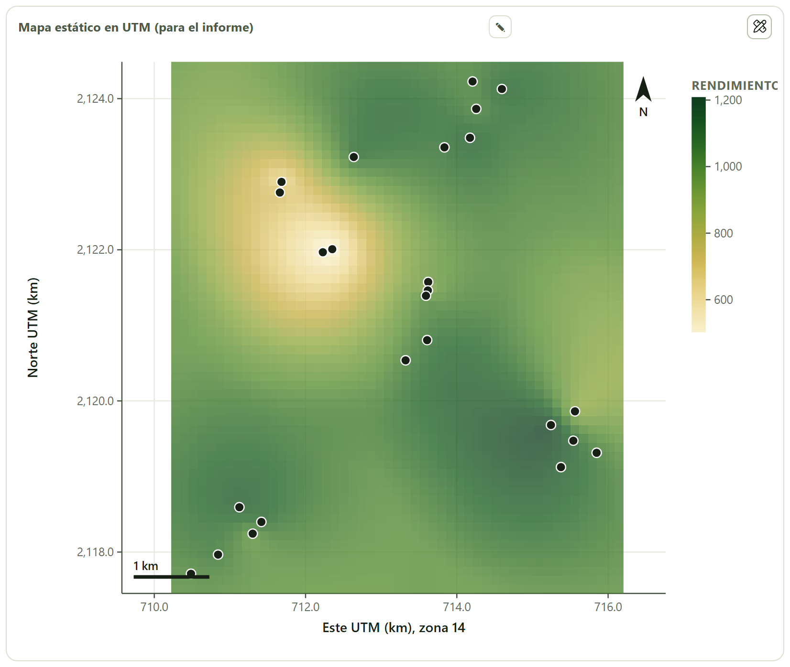
Figura 8.5. La superficie de rendimiento del cafetal de ejemplo en el mapa estático. El rendimiento más bajo (colores claros) rodea a las parcelas del noroeste, y los más altos (verde oscuro) quedan al norte y al sureste.
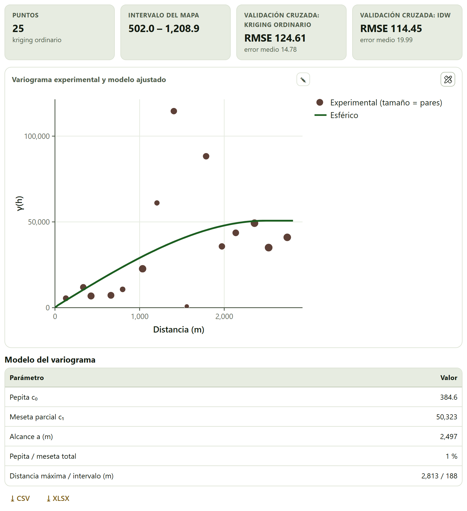
Figura 8.6. El rendimiento del cafetal de ejemplo por kriging ordinario con modelo esférico: 25 puntos, un mapa de 502.0 a 1,208.9 kg/ha, una pepita de 384.6 con una meseta parcial de 50,323 (pepita / meseta total = 1 %) y un alcance de 2,497 m. En la validación cruzada, el kriging da RMSE 124.61 y la IDW 114.45.
▸Ejemplo resuelto · tres variables, tres variogramas
El rendimiento del cafetal (figura 8.6) tiene dependencia espacial clara —pepita de 1 % de la meseta— hasta unos 2,497 m: las fincas difieren entre sí. Aun así, la IDW predice algo mejor que el kriging en la validación cruzada (RMSE 114.45 frente a 124.61), y la app lo dice. La sombra del cafetal da una pepita de 29 % de la meseta, alcance de 3,425 m y un kriging apenas mejor que la IDW (RMSE 10.29 frente a 10.44). El área basal del mesófilo, en cambio, da un alcance de 3 m —menor que el primer intervalo— y una pepita de 80 %: la app avisa que «el variograma no muestra dependencia espacial en las distancias analizadas (efecto pepita puro)», y el kriging predice la media, 37.2 m²/ha, en todo el mapa.
La interpretación compara el RMSE de los dos métodos; lee la proporción de pepita —si pasa de 60 %, «la mayor parte de la variación es de corta distancia o error», si no, «hay dependencia espacial clara» hasta el alcance práctico—; y cierra recordando que con pocas parcelas el mapa sirve para ubicar zonas, no para leer valores puntuales. El efecto pepita puro se declara cuando el alcance es menor que el primer intervalo del variograma o la meseta parcial es menos de 5 % de la meseta total.
iRecortar al polígono
Con Recortar al primer polígono marcada (por omisión) y un polígono cargado, la superficie se calcula sólo dentro de él, y la retícula de celdas cubre el polígono en lugar del rectángulo de los puntos. Al cargar uno de los ejemplos de la tarjeta, los polígonos anteriores se quitan, así que el cafetal se interpola en el rectángulo de sus parcelas.
✓Regla de decisión
Si necesitas la superficie del predio para el inventario
entonces usa el área UTM, no la de la esfera ni la que dé un mapa en Mercator.
Si la cuadrícula va a ser una muestra probabilística
entonces marca Arranque aleatorio de la malla y guarda los puntos generados.
Si la proporción de pepita es baja y el alcance supera la distancia entre parcelas vecinas
entonces hay estructura espacial: el kriging tiene sentido.
Si la pepita pasa de 60 % o la app avisa de efecto pepita puro
entonces la variable no tiene estructura a esa escala: el mapa interpolado no agrega información a la media.
Si la IDW da menor RMSE que el kriging
entonces prefiere la IDW, o prueba otro modelo o distancia máxima del variograma.
Guías para interpretar, no leyes: con 25 parcelas un variograma es una aproximación gruesa, y la ubicación de las parcelas pesa tanto como el método.
✕Cuando algo sale mal
«Las parcelas del inventario no tienen latitud y longitud»: el inventario del Bloque 3 no trae coordenadas de parcela. Emparéjalas en su tarjeta de parcelas, en grados decimales (la longitud de México es negativa).
Los árboles no aparecen. Sólo se ven desde el nivel de zoom 15, y sólo los que traen x e y en el inventario.
El polígono sale cruzado o con un área absurda. Los vértices no están en orden alrededor del polígono, o la latitud y la longitud están intercambiadas.
«Primero carga, importa o dibuja un polígono» en la cuadrícula, o «El variograma no se pudo ajustar; usa IDW o cambia la distancia máxima» en la interpolación: falta el polígono, o hay muy pocos pares de parcelas en los intervalos del variograma.
El fondo en línea no carga. Algunos servidores niegan las teselas a una página abierta con doble clic; abre la app en línea o trabaja sin fondo.
9
Capítulo nueve · Bloque 9
Utilidades forestales
Las cuentas de todos los días en el monte y en el aserradero: cuánta madera trae una carga de trozas en metros cúbicos y en pies tabla, cuánto se obtuvo de tablas y polines, qué parte de la troza se fue en aserrín, qué factor de forma tiene un fuste, cómo se pasa un dato del sistema inglés al métrico y si una plantación paga lo que cuesta. Cada sección se usa sola, con sus números o con su ejemplo; la del rendimiento toma los suyos de las dos primeras.
9.1Cubicación de trozas
9.2Madera aserrada
9.3Rendimiento de aserrío
9.4Factor de forma
9.5Conversión de unidades
9.6Costo y rentabilidad de una plantación
El bloque no usa la tarjeta de datos de los demás (sección I.6): sus datos son pocos y se escriben en tablas editables, con una fila por troza, por tipo de pieza o por movimiento de dinero. Cada fila tiene su botón × para quitarla y, debajo de la tabla, + Agregar fila. Las celdas se llenan una por una: estas tablas no leen archivos ni bloques pegados. Los resultados aparecen al oprimir el botón de cada sección (Cubicar, Contar, Calcular el rendimiento, Calcular, Evaluar); la conversión de unidades responde sola mientras escribes.
El ejemplo de la plantación de pino abre las cuatro secciones que lo tienen ya calculadas: desde Inicio›Datos de ejemplo, el botón Abrir en Utilidades de la tarjeta del pino carga las 12 trozas, lo aserrado de ellas y el flujo de la plantación a 25 años, y calcula el rendimiento. Todas las cifras de este capítulo salen de ese ejemplo, que es simulado.
9.1Cubicación de trozas
Una troza se mide en el patio con una cinta y una forcípula: su largo y los diámetros de sus puntas. Con eso, la sección da su volumen en metros cúbicos por cuatro fórmulas y la madera aserrada que se espera de ella, en pies tabla, por las tres reglas de troza más usadas en el comercio de madera.
Arriba están Cargar ejemplo: 12 trozas de pino, Tabla vacía (deja una sola fila en blanco) y la casilla Volumen sin corteza. La tabla pide, por troza:
Columna
Qué va
Troza
Un nombre o una clave (T01, T02…).
Largo (m)
El largo de la troza, en metros. Obligatorio.
D punta delgada (cm) · D punta gruesa (cm)
Los diámetros de las dos puntas, con corteza, en centímetros. Obligatorios.
D a la mitad (cm)
El diámetro a la mitad del largo, si lo mediste; sin él no hay Huber ni Newton.
Corteza (mm)
El grosor de la corteza, de un solo lado, en milímetros.
La nota bajo la tabla lo resume: «Longitud en metros; diámetros con corteza en centímetros (punta delgada, punta gruesa y, si la tienes, a la mitad); grosor de corteza en milímetros, de un solo lado.» Una fila sin largo o sin alguno de los dos diámetros de las puntas no se cubica.
Figura 9.1. Las 12 trozas de pino del ejemplo, de 2.54 a 5.08 m de largo y de 18 a 45 cm de diámetro. Los mosaicos: 12 trozas con corteza; 3.275 m³ por Smalian (1,388 pies tabla de volumen); 3.238 m³ por Newton y 3.219 por Huber; 599 pies tabla por la regla Internacional ¼″, 380 por Doyle y 539 por Scribner.
θTeoría en breve · volumen y pies tabla no son lo mismo
Las cuatro fórmulas de volumen tratan la troza como un sólido. Con el área de cada sección g = πd²/40 000 (m², d en cm) y el largo L en m: Smalian promedia las áreas de las puntas, V = L(g₁ + g₂)/2; Huber usa la de en medio, V = L·gm; Newton combina las tres, V = L(g₁ + 4gm + g₂)/6, y es exacta para el paraboloide, el cono y el neiloide; el cono truncado usa sólo las puntas, V = πL(d₁² + d₁d₂ + d₂²)/120 000. Sin corteza, a cada diámetro se le resta dos veces el grosor de corteza.
Las reglas de troza no miden volumen: predicen cuánta madera aserrada rendirá la troza, descontando de antemano el aserrín y las costeras. Usan el diámetro de la punta delgada sin corteza, en pulgadas (D), y el largo en pies (L). Doyle: (D − 4)²L/16. Scribner, por la fórmula de Bruce: (0.79D² − 2D − 4)L/16. Internacional ¼″: secciones de 4 pies, cada una con media pulgada más de diámetro que la anterior, 0.22D² − 0.71D pies tabla por sección y el factor 0.905 de la sierra de un cuarto de pulgada; la fracción final cuenta en proporción a su largo (Husch et al. 2003; Avery y Burkhart 2002; Bruce 1925; Clark 1906).
La tabla Volumen por troza trae, para cada troza y en total, el diámetro sin corteza en pulgadas (D (pulg)) y el largo en pies (L (pies)) con que trabajan las reglas, los cuatro volúmenes y los pies tabla de las tres reglas.
Figura 9.2. El volumen de cada troza. En total: 3.2747 m³ por Smalian, 3.2193 por Huber, 3.2378 por Newton y 3.2601 por cono truncado; 380 pies tabla por Doyle, 539 por Scribner y 599 por la Internacional ¼″. La troza T10, de 6.5 pulgadas sin corteza, da 3 pies tabla por Doyle y 10 por la Internacional.
Con Volumen sin corteza, los volúmenes en metros cúbicos se recalculan con los diámetros menos la corteza: las 12 trozas bajan a 2.828 m³ por Smalian, 2.793 por Newton y 2.775 por Huber. Los pies tabla no cambian (599, 380 y 539), porque las reglas trabajan siempre con el diámetro sin corteza. Si en alguna troza la punta delgada resulta más gruesa que la gruesa, la app avisa: «En … trozas la punta delgada es más gruesa que la gruesa; revisa el orden de las columnas.»
!Un metro cúbico no son 424 pies tabla
Un pie tabla es un volumen (144 pulgadas cúbicas) y 1 m³ equivale a 423.776 pies tabla: el mosaico de Smalian dice «1,388 pies tabla de volumen» para eso. Pero los pies tabla de una regla son madera aserrada, ya sin aserrín ni costeras: las mismas trozas dan 599 por la Internacional ¼″. No mezcles las dos cifras al comprar o vender madera; di siempre qué regla usaste.
La figura Pies tabla por troza según la regla pone las tres reglas lado a lado, troza por troza, y la interpretación resume lo que significan las diferencias.
Figura 9.3. Doyle (corteza) queda siempre por debajo de Scribner (ámbar) y de la Internacional ¼″ (verde), y más en las trozas delgadas. La interpretación: Huber da −1.7 % respecto de Smalian, Newton queda entre ambas, y Doyle castiga las 9 trozas de menos de 12 pulgadas.
9.2Madera aserrada
La otra punta del aserradero: lo que salió de las trozas, contado por tipo de pieza. La sección suma los pies tabla y los metros cúbicos de una lista de piezas y dice qué parte del volumen es cada tipo.
El menú Unidades elige Pulgadas y pies (grosor y ancho en pulgadas, largo en pies, con las medidas nominales con que se comercia la madera) o Centímetros y metros (grosor y ancho en centímetros, largo en metros). La tabla pide Pieza (el nombre), Grosor, Ancho, Largo y Piezas, el número de piezas iguales (1 si se deja vacío). Cargar ejemplo: lo aserrado de las 12 trozas pone siete tipos de piezas de 8¼ pies y Contar hace la cuenta.
pies tabla = grosor (pulg) × ancho (pulg) × largo (pies) / 12 · m³ = grosor (cm) × ancho (cm) × largo (m) / 10 000
Un pie tabla es una pieza de 1 pulgada × 12 pulgadas × 1 pie, 2.359 737 216 dm³ (NIST 2008). Así, una tabla de 1″ × 6″ de 8¼ pies son 4.125 pies tabla, y las 50 del ejemplo, 206.25. Al cambiar de unidades, la tabla cambia los rótulos de sus columnas, pero no convierte los números que ya escribiste.
Figura 9.4. Lo aserrado de las 12 trozas: 179 piezas, 722.9 pies tabla y 1.7059 m³. Las tablas de 1″ × 6″ son el 28.5 % del volumen; la viga de 4″ × 4″, el 6.1 %.
9.3Rendimiento de aserrío
Cuánta madera aserrada sale de la madera en rollo. Es la cifra que mide un aserradero, y la que dice si una regla de troza le queda corta.
Tres campos: Madera en rollo (m³), Madera aserrada (m³) y Regla de referencia (pies tabla). «Se llenan solas con los totales de las dos secciones de arriba (Smalian e Internacional ¼″); puedes escribir otros.» La regla es opcional; sin ella no hay sobrerrendimiento.
Figura 9.5. De las 12 trozas (3.2747 m³ por Smalian) salieron 1.7059 m³ aserrados: un coeficiente de aserrío de 52.1 % (desperdicio 47.9 %), 221 pies tabla por metro cúbico en rollo y un sobrerrendimiento de 20.7 % frente a los 599 pies tabla de la regla Internacional ¼″.
Coeficiente de aserrío = m³ aserrados / m³ en rollo. El resto es aserrín, costeras, recortes y corteza.
Pies tabla por m³ en rollo: el mismo cociente en pies tabla (0.521 × 423.776 ≈ 221).
Sobrerrendimiento = pies tabla aserrados / pies tabla de la regla − 1. Positivo si el aserradero saca más de lo que la regla predice (Steele 1984).
La interpretación clasifica el coeficiente: por debajo de 45 % lo llama bajo («trozas delgadas o torcidas, sierras de corte grueso o un patrón de corte que no aprovecha la troza»), por encima de 65 % alto («propio de trozas gruesas y rectas o de sierras delgadas»), y entre los dos, común en aserraderos de sierra cinta o circular con trozas medianas. Si sale más madera aserrada que en rollo, la app lo marca en rojo: «Sale más madera aserrada que en rollo: revisa las unidades o los datos.»
9.4Factor de forma
La fracción del cilindro (área basal × altura) que ocupa el fuste. Con él se estima el volumen de un árbol en pie a partir de su diámetro y su altura, cuando no hay una ecuación de volumen para la especie.
Cuatro campos, con valores de muestra: Diámetro normal (cm) (32), Altura (m) (24), Volumen (m³) (0.85) y Factor de forma (vacío). «Deja vacío lo que quieras calcular: el factor (con volumen) o el volumen (con factor).» Calcular da el factor, el volumen y el cilindro de referencia, y la tabla Sólidos de referencia dice qué volumen tendría el árbol con la forma de cada sólido.
Figura 9.6. Un fuste de 32 cm y 24 m con 0.85 m³: su cilindro (g = 0.0804 m²) tiene 1.9302 m³, así que el factor de forma es 0.440, más cerca del paraboloide (0.500) que del cono (0.333).
f = V / (g · h), con g el área basal a 1.30 m
Es el factor de forma artificial, referido a la altura del pecho (Prodan et al. 1997). Los sólidos de referencia, medidos en su base, tienen f = 1 (cilindro), 1/2 (paraboloide), 1/3 (cono) y 1/4 (neiloide). En coníferas suele estar entre 0.40 y 0.55. Con el factor 0.45 en lugar del volumen, el mismo árbol tendría 0.8686 m³. La interpretación avisa si el factor pasa de 1 («indica un error en el volumen o en las medidas») o baja de 0.3 («raro en un fuste comercial: revisa el volumen»). Si tienes árboles cubicados, las ecuaciones de volumen del Bloque 2 (capítulo 2) sustituyen con ventaja a un factor de forma fijo.
9.5Conversión de unidades
Del sistema inglés al métrico y al revés, con las definiciones exactas: lo que hace falta para leer un inventario, una tabla de rendimiento o una regla de troza de otro país.
Magnitud elige qué se convierte; Valor y De, el número y su unidad. La tabla … equivalen a («1 metro equivale a», con el valor 1) da el valor en cada una de las demás unidades de esa magnitud, y se recalcula al escribir:
Figura 9.7. 250 m³/ha equivalen a 3,572.83 pies³/acre, 42,874.02 pies tabla/acre y 27.9128 cuerdas/acre. Abajo, 10 m³ estéreos de leña con un factor de apilado de 0.65 son 6.50 m³ de madera sólida.
Las definiciones son las exactas: 1 pulgada = 2.54 cm, 1 pie = 0.3048 m, 1 acre = 4 046.856 422 4 m², 1 libra = 0.453 592 37 kg, 1 pie tabla = 144 pulgadas cúbicas y 1 cuerda = 128 pies³ de madera apilada (NIST 2008). Las magnitudes por superficie combinan el factor de la unidad y el de la superficie: 120 pies²/acre de área basal son 27.5482 m²/ha. El carbono pasa a CO₂ equivalente multiplicándolo por 44/12: 46 Mg C/ha son 168.67 Mg CO₂e/ha.
Leña apilada
Debajo de la tabla, Leña apilada (m³ estéreos) y Factor de apilado (sólido/estéreo) dan la Madera sólida. Un metro cúbico estéreo es el que ocupa la leña apilada, con sus huecos; el factor de apilado, la parte que es madera. Depende del diámetro y de lo recto de las piezas: 0.6 a 0.7 es lo común en leña, y la app abre con 0.65.
9.6Costo y rentabilidad de una plantación
Una plantación forestal gasta casi todo al principio y cobra casi todo al final, veinte o treinta años después. Para saber si paga hay que llevar cada peso al presente con una tasa de descuento. La sección hace esa cuenta por hectárea con las medidas de la economía forestal.
Tres campos: Tasa de descuento (% anual) (8), Costo anual fijo (protección, administración) (900), que se carga cada año del 1 al turno, y Turno (años; vacío = último año del flujo). La tabla lleva un renglón por movimiento: Año, Concepto, Costo e Ingreso, por hectárea y en la moneda que uses; «varias filas pueden tener el mismo año». Cargar ejemplo: pino a 25 años trae once movimientos, de la preparación del terreno a la corta final, y Evaluar hace la cuenta.
Figura 9.8. El pino a 25 años al 8 %: valor presente neto de $3,956 por hectárea, tasa interna de retorno de 8.50 %, relación beneficio/costo de 1.07, valor esperado del suelo de $4,632, anualidad equivalente de $371 al año, costo de establecimiento de $23,500 (años 0 y 1; $140,900 sin descontar en todo el turno) y recuperación en el año 25.
θTeoría en breve · las siete cifras
Con la tasa r y el flujo neto Nt = ingresos − costos del año t: el valor presente neto es VPN = Σ Nt/(1 + r)t; la relación beneficio/costo, el valor presente de los ingresos entre el de los costos; la tasa interna de retorno (TIR), la tasa que anula el VPN, buscada entre −90 % y 200 %; el valor esperado del suelo de Faustmann (1849), VES = VPN·(1 + r)T/((1 + r)T − 1), lo que vale la tierra si se repite el mismo turno T para siempre; la anualidad equivalente, VPN·r/(1 − (1 + r)−T), el VPN repartido en pagos anuales iguales; y la recuperación, el primer año en que el flujo descontado acumulado deja de ser negativo (Klemperer 1996; Bettinger et al. 2017). Todo es en valores reales: usa una tasa sin inflación y precios constantes.
Debajo de los mosaicos vienen dos figuras. Flujo de efectivo por año pone los ingresos hacia arriba y los costos hacia abajo; Valor presente neto según la tasa de descuento traza el VPN entre 0 y 15 %, con la tasa elegida y la TIR, que es donde la curva cruza el cero.
Figura 9.9. Arriba, casi todo el ingreso llega en el año 25 ($300,000 de la corta final), con dos aclareos en los años 12 y 18. Abajo, el VPN pasa de unos $216,000 sin descontar a valores negativos por encima de la TIR de 8.50 %; la tasa elegida (8 %) queda justo antes del cruce.
La tabla Flujo de efectivo descontado da, por año, los costos (con el costo anual incluido), los ingresos, el neto, el neto descontado y el acumulado descontado, que en el pino pasa de −$30,227 en el año 24 a $3,956 en el 25. Sólo muestra los años con un movimiento propio (en el pino, 0, 1, 2, 3, 5, 8, 12, 18 y 25); su nota lo aclara: «Los años sin más movimiento que el costo anual no se muestran; sí se cuentan.»
▸Ejemplo resuelto · la misma plantación con otra tasa y otro turno
Con la tasa al 10 %, el pino deja de pagar: el VPN cae a −$9,333 por hectárea, la relación beneficio/costo a 0.81, el valor esperado del suelo a −$10,282 y la recuperación dice «no se recupera»; la TIR sigue en 8.50 %, porque no depende de la tasa elegida. Con la tasa al 8 % y el turno en 18 años, la corta final queda fuera («1 movimiento cae después del turno y no se cuenta.») y el VPN se hunde a −$29,186: sin la corta final, los aclareos no pagan el establecimiento.
!Compara turnos con el valor del suelo, no con el VPN
El VPN de un solo turno favorece a los turnos largos sólo porque ocupan la tierra más tiempo. Para elegir entre un turno de 20 y uno de 25 años, compara el valor esperado del suelo de Faustmann, que supone que el turno se repite para siempre. Y como casi todo el ingreso llega al final, el resultado es muy sensible a la tasa y al precio de la corta final: prueba varias tasas antes de decidir.
✓Regla de decisión · utilidades forestales
Si mediste el diámetro a la mitad de la troza
entonces usa Newton (o Huber); sin él, cono truncado o Smalian, sabiendo que Smalian sobreestima en trozas de base acampanada.
Si vas a comprar o vender trozas en pies tabla
entonces pacta la regla: Doyle da mucho menos que la Internacional ¼″ en trozas de menos de 12 pulgadas.
Si el coeficiente de aserrío baja de 45 %
entonces revisa el diámetro y lo recto de las trozas, el corte de la sierra y el patrón de corte.
Si el sobrerrendimiento es grande y positivo
entonces la regla subestima lo que tu aserradero obtiene; para tu madera, el rendimiento medido vale más que la regla.
Si el factor de forma pasa de 1 o baja de 0.3
entonces hay un error en el volumen o en las medidas.
Si el VPN es positivo y la TIR mayor que la tasa exigida
entonces la plantación paga con esa tasa; para comparar turnos, usa el valor esperado del suelo.
Guías para interpretar, no leyes: el precio de tu madera, tu aserradero y tu tasa de descuento mandan.
✕Cuando algo sale mal
«Escribe al menos una troza con largo y los dos diámetros de las puntas, o carga el ejemplo.» A todas las filas les falta el largo o un diámetro de punta.
Los diámetros en pulgadas o el largo en pies. La tabla de trozas pide metros y centímetros; si tus datos vienen en pulgadas y pies, conviértelos antes con la sección 9.5.
La corteza de los dos lados. La columna Corteza (mm) es el grosor de un solo lado; la app la resta dos veces.
«Escribe el volumen en rollo y el aserrado (o cubica y cuenta arriba).» Faltan los dos volúmenes del rendimiento; se llenan solos después de Cubicar y Contar.
«Escribe el volumen o el factor de forma.» En el factor de forma quedaron vacíos los dos; deja vacío sólo el que quieras calcular.
«Revisa la tasa de descuento.» La tasa no es un número o es de −100 % o menos.
«… movimientos caen después del turno y no se cuentan.» (con uno solo, «1 movimiento cae después del turno y no se cuenta.») El turno que escribiste es menor que el último año de la tabla; vacía el campo para usar el último año.
10
Capítulo diez · Bloque 10
Informe y proyecto
Lo que mostraron los bloques, listo para salir de la app: un informe de un solo archivo que se abre en cualquier navegador y se imprime a PDF; todas las tablas de resultados en un libro de cálculo; las figuras, una por una, desde el estudio de figuras; y el proyecto, un archivo pequeño con el que el trabajo se vuelve a abrir tal como quedó, aquí o en otro equipo. El bloque no calcula nada nuevo: reúne lo que ya está en pantalla.
10.1Informe
10.2Todas las tablas
10.3Proyecto
10.4Cómo citar
Las figuras de este capítulo se hicieron con el cafetal de ejemplo abierto en los bloques 3, 4 y 7 (los botones Abrir en Inventario, Abrir en Biomasa y Abrir en Agroforestería de su tarjeta en Inicio›Datos de ejemplo) y la plantación de pino en el 9 (Abrir en Utilidades). Con eso, cuatro bloques tienen resultados y su número en la barra de la izquierda se ha vuelto una palomita.
10.1Informe
El informe es un archivo HTML que lleva todo dentro: la portada, un resumen, las figuras, las tablas, las interpretaciones y, si quieres, los métodos con sus fuentes. No depende de la app ni de internet: se abre con doble clic en cualquier navegador, se manda por correo y se imprime a PDF.
Arriba se escriben los datos de la portada: Título (abre con «Informe forestal»), Predio o proyecto, Responsable, Fecha (la de hoy) y Presentación o notas (opcional), un texto libre que el informe pone en su propia sección. Debajo, el recuadro Bloques que entran tiene una casilla por cada bloque de resultados, todas marcadas, y otras dos: Con los métodos y sus fuentes (el recuadro «Método y fuentes» de cada tarjeta) y Con los avisos (los mensajes de advertencia de los bloques).
Figura 10.1. La tarjeta Informe con sus campos llenos y Vista previa oprimida: «Informe con 4 bloques, 16 figuras y 20 tablas.» Entran los cuatro bloques con resultados (inventario, biomasa, agroforestería y utilidades); los otros cuatro siguen marcados, pero no aparecen porque no tienen nada que mostrar.
Las casillas llevan el número y el nombre de su bloque, de «2. Dasometría» a «9. Utilidades forestales», y el informe usa los mismos números en su contenido y en los títulos de sus secciones («3. Inventario y muestreo»).
La nota de la tarjeta dice qué entra: «Entra lo que cada bloque muestra en este momento; un bloque sin resultados no aparece. Las figuras van con los colores del tema claro y con lo que hayas cambiado en el editor ✎.» Es decir, el informe es una fotografía de la pantalla: si cambias un control en un bloque y vuelves, el informe cambia. Tres botones:
Botón
Qué hace
Vista previa
Arma el informe y lo muestra debajo, en un recuadro con su propia barra de desplazamiento. El mensaje dice cuántos bloques, figuras y tablas entraron. La vista previa se rehace sola al volver al bloque o al cambiar de idioma.
⤓ Descargar el informe (HTML)
Arma el informe y lo descarga como forestpro_informe_<predio>.html; con el cafetal, forestpro_informe_cafetal_bajo_sombra_ejemplo.html, de cerca de 1.6 MB.
Abrir para imprimir o guardar como PDF
Lo abre en una pestaña nueva, con el botón Imprimir o guardar como PDF en una barra pegada arriba, que no sale en la impresión. Si el navegador bloquea la ventana, la app lo dice: «El navegador bloqueó la ventana nueva: descarga el informe y ábrelo para imprimirlo.»
Figura 10.2. El principio del informe: arriba, la barra con Imprimir o guardar como PDF, que sigue a la vista al desplazarse; la portada con el logotipo, «Inventario forestal y carbono», el predio, «Brigada de inventario · 1 de noviembre de 2026» y «Generado con ForestPro 1.0.0 · LABG»; el contenido, con el número de cada bloque; la presentación; y el resumen, con los mosaicos de cada bloque: 25 parcelas, 719 árboles y 10 especies en el inventario; 77.0 Mg/ha de biomasa aérea, 46.0 Mg C/ha de carbono y 168.5 Mg CO₂e/ha en los árboles, y el carbono del predio, 4,596 Mg C (de 3,534 a 5,659).
Lo que trae el informe
Parte
Contenido
Portada
El logotipo de la app, el título, el predio, el responsable y la fecha, y la versión del programa.
Contenido
Los bloques que entraron, con enlaces; sólo si son dos o más.
Presentación
El texto de Presentación o notas (opcional), si escribiste algo.
Resumen
Los primeros mosaicos de cada bloque: los pocos números que importan, juntos.
Una sección por bloque
Los datos que se usaron (el nombre de cada conjunto cargado y su número de filas) y, tarjeta por tarjeta, sus mosaicos, figuras, tablas, interpretaciones, avisos y métodos. Una tarjeta sin resultados no aparece. Con el cafetal y el pino entran 19 tarjetas; en la del Bloque 4, el carbono total del sistema, con los reservorios que el bloque tiene cargados, es de 47.6 ± 10.8 Mg C/ha (174.4 Mg CO₂e/ha).
Cómo citar ForestPro
La cita en APA y en BibTeX (sección 10.4).
Pie
Una nota que dice que los cálculos se hicieron en el navegador y que los datos no salieron del equipo.
Las figuras van dentro del archivo como dibujos vectoriales, con sus estilos escritos y los colores del tema claro, aunque estés trabajando en el oscuro; la fotografía del dosel del Bloque 7 va como imagen. Las tablas llevan los renglones que muestra la pantalla: una tabla muy larga, que en la tarjeta dice «Se muestran … de … filas; las descargas las llevan todas.», llega igual de corta, y el libro de la sección 10.2 la trae completa. Al imprimir, la hoja es A4 con márgenes de 16 y 14 mm, cada bloque empieza en una hoja nueva y ninguna figura, mosaico o interpretación se parte entre dos hojas.
iPara imprimir a PDF
En el diálogo de impresión del navegador, elige Guardar como PDF y activa los gráficos de fondo para que los mosaicos y las interpretaciones conserven su color. Si prefieres carta en lugar de A4, cámbialo en el mismo diálogo.
10.2Todas las tablas
Cada tabla de resultados de los bloques 2 a 9 tiene sus botones ⤓ CSV y ⤓ XLSX; esta tarjeta las baja todas de una vez, con sus números completos, no redondeados como en pantalla.
⤓ Libro de Excel (XLSX), una hoja por tabla descarga forestpro_tablas.xlsx. Cada hoja se llama con el número del bloque y el título de la tabla («B9 Volumen por troza»), cortado a 31 caracteres, el límite del formato.
⤓ CSV, un archivo por tabla (ZIP) descarga forestpro_tablas_csv.zip, con un CSV por tabla, con el nombre de archivo que la tabla usa en su propio botón (forestpro_trozas.csv, forestpro_flujo.csv…). Van separados por comas, con punto decimal y en UTF-8 con marca de orden de bytes, para que una hoja de cálculo lea bien los acentos.
El mensaje cuenta las tablas; sin resultados dice «Todavía no hay tablas de resultados.». Las tablas de las tarjetas de datos (lo que cargaste) no entran: sólo las de resultados.
Figura 10.3. Las tarjetas Todas las tablas y Proyecto. Con el cafetal y el pino, el libro lleva 20 tablas («20 tablas exportadas.») y el proyecto, cuatro pasos: los cuatro ejemplos abiertos («Proyecto guardado con 4 pasos.»).
Las figuras: el estudio y el editor ✎
Las figuras no entran en el libro: «Las figuras se exportan una por una desde su tarjeta, en SVG, PNG a 300 ppp o PDF, con el estudio de figuras.» Cada figura de la app tiene dos botones en su esquina: el lápiz con la regla abre el estudio de figuras, y ✎ abre el editor de esa figura. Los dos son los mismos en todas las aplicaciones de la suite.
Figura 10.4. La figura del VPN según la tasa de la plantación de pino (sección 9.6) en el estudio. Debajo, su tamaño final: 85 × 46.8 mm (3.35 × 1.84 pulgadas) a 600 ppp, 2008 × 1104 píxeles; la línea punteada de arriba marca el ancho de columna y media de una revista (114 mm). A la derecha, el inspector, con la edición fina de la figura abierta.
El estudio pone la figura a la izquierda, a escala y con la silueta de su tamaño de salida, y el inspector a la derecha. La barra de arriba deshace y rehace, compara el antes y el ahora con una cortina, acerca y aleja (Ajustar la deja del tamaño de la pantalla), muestra una regla, aplica Preajustes de un clic y, con Exportar, descarga la figura en PNG, SVG, PDF vectorial o TIFF, en milímetros o pulgadas, a 300, 600 o 1 200 ppp, con fondo transparente si lo pides. Otros botones mueven el inspector a la izquierda o lo dejan flotando, y Cerrar estudio vuelve a la app. En el inspector, Buscar un control… encuentra cualquier ajuste por su nombre, y las secciones son Ajustes de la figura (los controles que la figura tiene en su bloque; las de ForestPro no traen y el estudio dice «Esta figura no trae opciones propias: usa las del estudio (paleta, texto, tamaño) o el editor de la app si lo tiene.»), Edición fina de esta figura (✎ de la app), Paleta y color, Texto y líneas, Leyenda, Tamaño y exportación, Preajustes e Historial. La línea del pie recuerda los atajos: «Clic en la figura: su sección · Doble clic en un texto: cambiarlo · Ctrl + rueda: zoom · B: antes y ahora · ?: atajos».
El botón ✎ abre el mismo editor fino sin salir de la página, en un panel flotante sobre esa figura, con seis pestañas.
Figura 10.5. El editor ✎ de la figura del VPN, en la pestaña General: el título, el subtítulo y la nota al pie dentro de la figura; la familia tipográfica, los tamaños, el color y los grosores; el fondo y el marco.
Pestaña
Qué se edita
General
Un Título (vacío = sin título), un Subtítulo y una nota al pie dentro de la figura, con el Tamaño y alineación del título; la Familia tipográfica, el Tamaño de todos los textos, el Color de todos los textos, el Grosor de las líneas y el Tamaño de los puntos; el Fondo y un Marco alrededor de toda la figura.
Ejes y rejilla
Los títulos de los ejes, sus números, el color y el grosor de los ejes, la rejilla y el recuadro del área de trazado.
Series
Cada color de la figura con el nombre de su entrada de leyenda: color, grosor, trazo, opacidad u ocultarla.
Leyenda
Mostrarla u ocultarla, ocho posiciones, en fila o en columna, tamaño y recuadro; también se arrastra sobre la figura.
Textos
Cada texto uno por uno: otra redacción, tamaño, negrita, cursiva, color u ocultarlo.
Anotaciones
Notas, flechas, líneas de referencia en un valor de cualquiera de los ejes, bandas sombreadas y la letra de panel; las notas y las flechas se arrastran.
Al pie del panel, Deshacer todo en esta figura la devuelve a como la dibuja el bloque y Copiar el estilo a todas las figuras lleva los mismos ajustes a las demás. Las ediciones se guardan en este navegador, figura por figura, y se vuelven a poner cada vez que la figura se redibuja —al cambiar los datos, el idioma o el tema—; como se escriben sobre la propia figura, lo que ves es lo que se exporta y lo que entra en el informe.
!Lo que el editor no guarda
El editor reconoce cada texto por su redacción original: si reescribes «Tasa de descuento (%)» y después cambias la interfaz a inglés, tu texto se queda en español. Edita en el idioma en que vas a exportar. Y las ediciones viven en el navegador, no en el proyecto (sección 10.3): en otro equipo, la figura sale como la dibuja la app.
iLas letras son las del equipo
La app no trae letras ni las pide a internet: las figuras usan las del sistema. Un SVG abierto en otra computadora puede verse con una letra parecida; para que se vea igual en todas partes, exporta en PDF vectorial o en PNG.
10.3Proyecto
Guarda el trabajo en un archivo y ábrelo después, aquí o en otro equipo. El proyecto no guarda los resultados, sino la manera de llegar a ellos, y por eso pesa poco y siempre da lo mismo que la app calcula.
Botón
Qué hace
⤓ Guardar el proyecto (JSON)
Descarga forestpro_proyecto_<predio>.json (el nombre sale del campo Predio o proyecto del informe, o de su título) y dice con cuántos pasos: «Proyecto guardado con … pasos.»
Abrir un proyecto…
Lee un proyecto guardado. Si la app ya tiene datos, pregunta antes: «Abrir el proyecto reemplaza lo que hay ahora en la app. ¿Continuar?». La página se recarga limpia y repite los pasos, con una franja que cuenta el avance («Abriendo el proyecto · 3/4»). Al terminar, lleva al bloque donde estabas y avisa «Proyecto abierto: todos los bloques se calcularon de nuevo.» o «Proyecto abierto; … pasos no se pudieron repetir.».
Empezar de nuevo
Borra todo lo que hay en la app, después de preguntar: «Se borra todo lo que hay en la app (los archivos guardados no se tocan). ¿Continuar?».
θTeoría en breve · un registro, no una copia
Mientras trabajas, la app anota en orden lo que haces: los datos que cargas en cada tarjeta de datos (si son de un ejemplo, sólo cuál), los campos que cambias, las tablas editables, los botones que oprimes y los ejemplos que abres desde Inicio. Al abrir el proyecto, la app repite esos pasos en una página limpia, así que cada bloque calcula otra vez lo mismo que mostraba. Lo que no se puede repetir así no se guarda: la fotografía hemisférica que abriste en el Bloque 7, lo que hiciste en el editor de figuras, y la cuadrícula aleatoria del Bloque 8, que sale con otro sorteo. El archivo es texto (JSON): se puede leer, y al final lleva un resumen de los resultados. El apéndice A describe su formato.
Con el cafetal y el pino abiertos desde Inicio, el proyecto tiene cuatro pasos, uno por ejemplo. Un trabajo con tus propios datos lleva dentro esos datos, renglón por renglón, porque la app los necesita para repetir el cálculo.
!La app no guarda sola
Nada de lo que cargas se guarda en el navegador: si cierras la pestaña o la recargas, el trabajo se pierde. Para que no pase por descuido, la app pide confirmación antes de cerrar o recargar la página cuando ya tiene datos. Guarda el proyecto al terminar cada sesión.
10.4Cómo citar
Si ForestPro te sirvió en un trabajo, cítalo. La tarjeta da la cita en APA, para copiarla en la lista de referencias, y la entrada BibTeX, para un gestor de referencias.
Figura 10.6. La cita del programa en APA y en BibTeX, con la versión 1.0.0 y la licencia GPL-3.0-or-later.
Copiar APA y Copiar BibTeX la copian al portapapeles («Copiado.»; si el navegador no lo permite, «No se pudo copiar; selecciónalo a mano.»), y ⤓ forestpro.bib descarga la entrada como archivo. La misma cita está en la portada de la app (capítulo 1) y al final de cada informe. La dirección que trae es la del repositorio del programa; el apéndice E da la cita del manual.
Cita además los métodos que usaste: las ecuaciones alométricas, el diseño de muestreo, las curvas de índice de sitio. Cada tarjeta los nombra en su recuadro «Método y fuentes», y el informe los lleva si dejas marcada Con los métodos y sus fuentes; el apéndice F los reúne todos.
✓Regla de decisión · qué sacar de la app
Si vas a entregar o archivar el resultado
entonces descarga el informe HTML: lleva todo dentro y se abre sin la app.
Si necesitas un PDF
entoncesAbrir para imprimir o guardar como PDF y guárdalo desde el diálogo de impresión.
Si vas a seguir analizando en otro programa
entonces el libro XLSX o el ZIP de CSV, con los números completos.
Si una figura va a una tesis o a una revista
entonces expórtala desde el estudio: PDF vectorial o SVG si se va a editar, PNG o TIFF a 600 ppp si la revista pide imagen.
Si vas a volver al trabajo o pasarlo a otro equipo
entonces guarda el proyecto; el informe no se puede volver a abrir en la app.
El informe y las tablas son lo que se entrega; el proyecto es lo que permite repetirlo.
✕Cuando algo sale mal
«Todavía no hay resultados que llevar al informe. Corre algún análisis en los bloques 2 a 9 (o abre un ejemplo desde Inicio).» Ningún bloque marcado tiene resultados.
Falta un bloque en el informe. Su casilla está desmarcada o el bloque no tiene resultados en este momento; ábrelo y comprueba que muestra lo que esperas.
«El archivo no es un proyecto de ForestPro.» El JSON es de otra app o no es un proyecto. Abre un forestpro_proyecto_….json guardado por la app.
«El proyecto viene de una versión más nueva de ForestPro; puede que algunos pasos no se repitan.» Actualiza la app.
«Proyecto abierto; … pasos no se pudieron repetir.» Algún botón o campo del registro ya no existe; revisa los bloques afectados.
«El proyecto se abre sobre lo que ya hay (el navegador no dejó recargar la página limpia).» El navegador no permitió la recarga; si el resultado se ve mezclado, usa Empezar de nuevo y vuelve a abrir el proyecto.
Una figura del informe sale distinta de la que editaste en otro equipo. Las ediciones ✎ viven en el navegador donde se hicieron.
A
Apéndices
Apéndices
Lo que conviene tener a la mano y no cabía en ningún capítulo: qué archivos lee y escribe la app y cómo los lee, con las columnas de cada tarjeta de datos; las reglas que aplican los bloques, reunidas en un solo lugar; el vocabulario forestal del manual; qué hacer cuando algo no sale, con los mensajes tal como aparecen; la licencia del programa con la manera de citarlo; y las 103 obras que cita la app.
ALos archivos que la app lee y escribe
BLas reglas, reunidas
CGlosario
DCuando algo no sale
ELa herramienta: licencia y cómo citarla
FReferencias
ALos archivos que la app lee y escribe
ForestPro corre en el navegador y no envía nada a ningún servidor: todos los archivos entran desde tu computadora y salen a la carpeta de descargas. La app no guarda tu trabajo por su cuenta: si cierras la pestaña sin guardar el proyecto (sección 10.3), lo de esa sesión se pierde.
A.1 · Lo que la app lee
Qué
Dónde y extensión
Cómo lo lee
Tablas de datos
Las 18 tarjetas de datos de los bloques 2 a 8 · .csv, .txt, .tsv, .xlsx, .xlsm, .ods, o pegadas
Un renglón por registro, con una fila de nombres. Las columnas se emparejan por su nombre (abajo) y las que no se reconocen se eligen a mano. De un libro se lee la primera hoja, y un menú Hoja: deja elegir otra. Las filas a las que les falta un campo obligatorio se dejan fuera con un aviso.
Base mundial de densidad
Bloque 4, Cargar la base mundial (archivo de la GWDD)… · .csv, .txt, .xlsx, .xlsm, .ods
El archivo de la Global Wood Density Database. Busca la hoja Data y las columnas de familia, especie (Binomial), densidad (Wood density) y región; sin especie o sin densidad, no la lee. Un libro del formato viejo (.xls) se rechaza con un mensaje que pide guardarlo como .xlsx o .csv. Las regiones que trae llenan el menú Región.
Fotografía del dosel
Bloque 7, Abrir una foto… · cualquier imagen que el navegador abra (JPG, PNG…)
Hemisférica u hacia arriba; se analiza en la página y no se guarda en el proyecto.
GPX: los puntos (wpt) y los recorridos (trk) de tres puntos o más, como polígonos. KML: las marcas con Point o Polygon (su borde exterior). GeoJSON: FeatureCollection, Feature o una geometría suelta de tipo Point, MultiPoint, Polygon o MultiPolygon (el anillo exterior); el nombre sale de la propiedad name o nombre. Todo en longitud y latitud.
Proyecto
Bloque 10, Abrir un proyecto… · .json
Un archivo escrito por la app, con "app": "ForestPro" y su lista de pasos (A.4); cualquier otro JSON se rechaza.
Cómo se leen los textos
Codificación. UTF-8, con marca de orden de bytes o sin ella; UTF-16 con marca; y, si el archivo no es UTF-8 válido, Latin-1 (Windows-1252).
Separador. Se adivina con los primeros renglones, entre tabulador, punto y coma, coma y barra vertical: gana el que da el mismo número de columnas en más renglones. Los campos entre comillas se respetan, con saltos de renglón incluidos; una comilla que no se cierra detiene la lectura.
Decimales. Si el separador no es la coma y en los datos abundan más los números con coma decimal que con punto, se lee la coma como decimal (2,35 = 2.35); entonces 1.234,5 se lee 1234.5. Con separador coma, el decimal es siempre el punto, y 1,234,567 se lee como un número con comas de miles. Inf y -Inf se leen como infinitos.
Números o texto. Una columna se toma por numérica si más de la mitad de sus celdas con algo son números; en ella, lo que no es número queda vacío.
Renglones vacíos. Se saltan. Los nombres de columna vacíos o repetidos se vuelven V1, V2… o nombre.1.
Libros. Cada celda se lee con su valor guardado, no con el que se ve; las fechas, como AAAA-MM-DD, y las celdas de error (#N/A, #DIV/0!), vacías. Los libros del formato viejo (.xls) no se abren: guárdalos como .xlsx o .csv.
Cómo se emparejan las columnas
Cada campo tiene su clave (la que escribe la ⤓ Plantilla en la fila de nombres), su rótulo en español y en inglés, y varios sinónimos. El nombre de cada columna de tu tabla se compara sin distinguir mayúsculas, acentos, espacios ni signos, y sin lo que vaya entre paréntesis o corchetes (así, DAP (cm), dap y D.A.P. son lo mismo). Primero se busca una coincidencia exacta con la clave, el rótulo o un sinónimo; si no la hay, una columna cuyo nombre empiece con alguno de ellos, de tres letras o más. Lo emparejado aparece ya elegido en la lista de cada campo, y los obligatorios llevan asterisco.
A.2 · Las columnas de cada tarjeta de datos
La primera columna es la clave, que es el nombre con que la reconoce la app sin preguntar; el asterisco marca los campos obligatorios. Los sinónimos se comparan como se explica arriba, y el rótulo y la clave cuentan también.
Clave
Campo en la app
Sinónimos que reconoce
2Árboles en pie (b2t)
especie
Especie
species, sp, nombre cientifico, taxon
dap
DAP (cm)
dbh, d130, diametro, diameter, d
cap
Circunferencia a 1.3 m (cm)
cap, cbh, gbh, circunferencia, perimetro
altura
Altura total (m)
ht, h, height, alt
altura_com
Altura comercial (m)
hc, altura comercial, merchantable height
copa
Diámetro de copa (m)
crown, dc, diametro de copa
estado
Estado
status, condicion, vivo
2Árboles por secciones (b2s; al menos 4 filas)
arbol *
Árbol
tree, id, arb
dap
DAP (cm)
dbh, d130
altura_total *
Altura total (m)
ht, H, height
h *
Altura de la sección (m)
hi, altura seccion, section height
d *
Diámetro de la sección (cm)
di, diametro seccion, section diameter
2Ecuaciones de volumen (b2v; al menos 6 filas)
dap *
DAP (cm)
dbh, d
altura *
Altura total (m)
ht, h
volumen *
Volumen (m³)
v, vol, volume, vt
2Relación altura–diámetro (b2h; al menos 6 filas)
arbol
Árbol
tree, id
especie
Especie
species, sp
dap *
DAP (cm)
dbh, d
altura
Altura total (m) — vacía si falta
ht, h, height
3Árboles del inventario (b3t)
parcela *
Parcela
plot, sitio, unidad, conglomerado parcela
estrato
Estrato
stratum, strata, tipo
especie
Especie
species, sp, nombre cientifico
familia
Familia
family
dap *
DAP (cm)
dbh, d130, diametro, d
altura
Altura total (m)
ht, h, height
copa
Diámetro de copa (m)
crown, diametro de copa, dc
estado
Estado (vivo / muerto)
status, condicion
x · y
x (m) · y (m)
coordx, xm · coordy, ym
3Parcelas del inventario (b3p, opcional)
parcela *
Parcela
plot, sitio
estrato
Estrato
stratum
area_estrato_ha
Superficie del estrato (ha)
area estrato, stratum area
conglomerado
Conglomerado
cluster, finca, grupo
radio_m
Radio (m)
radio, radius, radio grande m, r
radio_chico_m
Radio de la subparcela (m)
radio chico, radio subparcela
dap_corte_cm
DAP de corte entre parcelas (cm)
dap corte, corte
lado_m
Lado del cuadrado (m)
lado, side
largo_m · ancho_m
Largo (m) · Ancho (m)
largo, length · ancho, width
area_m2
Superficie de la parcela (m²)
area, superficie, plot area
lat · lon
Latitud · Longitud
latitude, y · longitude, long, x
3Relascopía (b3r)
punto *
Punto
point, pto
especie
Especie
species
dap *
DAP (cm)
dbh, d
altura
Altura (m)
h, ht
4Madera caída (b4w)
transecto *
Transecto
transect, linea
longitud_m *
Longitud (m)
longitud, length, l
diametro_cm *
Diámetro en el cruce (cm)
diametro, diameter, d
clase
Clase de descomposición (1–3)
class, decay
4Hojarasca (b4l)
parcela *
Parcela
plot
peso_seco_g *
Peso seco (g)
hojarasca g, peso, dry weight
marco_m2 *
Superficie del marco (m²)
marco, frame
4Carbono orgánico del suelo (b4s)
parcela *
Parcela o perfil
plot, perfil, muestra, rep, repeticion, sitio
prof_sup · prof_inf
Profundidad superior (cm) · inferior (cm)
desde, top, prof sup · hasta, bottom, prof inf
capa
Capa (p. ej. «0-10»), si no hay profundidades
layer, horizonte, profundidad
espesor_cm
Espesor (cm), si no hay profundidades ni capa
espesor, thickness, thick
co_pct *
Carbono orgánico (%)
co, cos, soc, carbono organico, c org, oc
dap_g_cm3 *
Densidad aparente (g/cm³)
densidad aparente, da, bd, bulk density
pedregosidad_pct
Fragmentos gruesos (%)
pedregosidad, gravas, coarse, fragmentos, frag
grupo · anio
Sistema o grupo (opcional) · Año (opcional)
sistema, manejo, tratamiento, group, uso · año, year, fecha
4Cambio entre inventarios (b4c)
parcela *
Parcela
plot
c1 * · c2 *
Carbono en la 1.ª y en la 2.ª medición (Mg/ha)
c inicial, stock1 · c final, stock2
edad1 · edad2
Año o edad 1 · Año o edad 2
ano1, year1 · ano2, year2
5Incrementos (b5a)
arbol *
Árbol o serie
tree, serie, id
edad *
Edad (años)
age, t, anos
diametro
Diámetro (cm)
dap, dbh, d
altura
Altura (m)
h, ht, height
volumen
Volumen (m³)
v, vol
5Remediciones de parcelas (b5c)
parcela *
Parcela
plot
edad *
Edad (años)
age, t
hdom *
Altura dominante (m)
altura dominante, h0, hd, dominant height
g_ha
Área basal (m²/ha)
g, ab, basal area
v_ha
Volumen (m³/ha)
v, vol
n_ha
Árboles por hectárea
n, densidad, nha
6La comunidad (b6a)
sitio *
Sitio o parcela
site, parcela, plot
especie *
Especie
species, sp
abundancia
Abundancia (vacío = 1 individuo)
abundance, n, individuos, count
grupo
Grupo (estrato, finca…)
group, estrato, finca, tratamiento
altura
Altura (m), para la estructura vertical
h, ht
6Patrón espacial (b6f)
x * · y *
x (m) · y (m)
coordx, este · coordy, norte
especie
Especie
species
dap
DAP (cm)
dbh, d
grupo
Grupo (piso, cohorte…)
group, dosel, piso
7Sombra y rendimiento (b7c)
parcela
Parcela
plot
sombra *
Sombra (%)
sombra pct, shade, cobertura
rendimiento *
Rendimiento
rend cafe, yield, produccion
grupo
Grupo (manejo)
manejo, group
8Polígonos (b8p)
poligono *
Polígono
polygon, nombre, predio
lat * · lon *
Latitud · Longitud
latitude, y · longitude, long, x
8Puntos para interpolar (b8i)
lat * · lon *
Latitud · Longitud
latitude, y · longitude, x
valor *
Valor
value, z, biomasa, area basal
nombre
Nombre
name, parcela, id
El DAP mínimo medido (cm) de Bloque 3›Estructura del rodal no es una columna sino un campo: el diámetro desde el que se midieron los árboles (2.5 cm en el mesófilo de ejemplo, 5 cm en el cafetal), que trunca la Weibull y fija el inicio de las clases (B.2). No lo confundas con dap_corte_cm, el diámetro que separa la parcela grande de la chica en las parcelas anidadas.
Los CSV de ejemplo de la carpeta data/ usan estos nombres, con punto decimal y en UTF-8, así que se cargan sin emparejar nada. La tarjeta del suelo lee también el formato de capas de los análisis de suelo, con su sistema, su año, su capa escrita como «0-10» y su espesor; con varios sistemas o años, los calcula de uno en uno. Una plantilla de cualquier tarjeta, con las claves y tres filas del primer ejemplo, sale de su botón ⤓ Plantilla como forestpro_<tarjeta>_plantilla.csv (por ejemplo, forestpro_b3t_plantilla.csv):
La plantilla de los árboles del Bloque 3, con las tres primeras filas del cafetal de ejemplo. Su columna de estrato va vacía porque el cafetal toma sus estratos de la tabla de parcelas.
A.3 · Lo que la app escribe
Bloque
Archivo
Qué contiene
2 a 9
forestpro_<tabla>.csv · .xlsx
Cada tabla de resultados desde sus botones ⤓ CSV y ⤓ XLSX. Los nombres son, por bloque: 2arboles, especies, cubicacion, trozas, modelos_volumen, coef_…, ahusamiento, altura_diametro, coef_hd_…, alturas_estimadas; 3parcelas_ha, densidad, disenos, estratos, asignacion, relascopia, tabla_rodal, weibull, ivi; 4ecuaciones, densidades, biomasa_arboles, biomasa_parcelas, monte_carlo, madera_caida, carbono_suelo, reservorios; 5incrementos_…, turno, modelos_crecimiento, coef_crecimiento, indice_sitio, sitio_parcelas, clases_sitio, clutter, tabla_produccion; 6indices_diversidad, hill, matriz_comunidad, estratos_altura, pretzsch; 7sombra_parcelas, sombra_manejo, anillos, sombra_rendimiento, presupuesto_carbono; 8poligonos, cuadricula, variograma; 9trozas, aserrada, conversion, flujo.
2
forestpro_alturas_completas.csv
Los árboles con su altura medida o estimada por la curva altura–diámetro: árbol, especie, DAP, altura y una columna altura_estimada (1 si se estimó).
La matriz de la comunidad (sitio, grupo y una columna por especie), lista para las apps de agrupamiento y de análisis factorial de la suite.
8
forestpro_mapa.gpx · .kml · .geojson · .csv
Las parcelas (con su estrato, su área basal y su número de árboles en GeoJSON), los puntos de la cuadrícula y los polígonos. En GPX, los polígonos van como recorridos cerrados; en CSV sólo van los puntos (nombre, lat, lon, descripción). Con sólo la cuadrícula: forestpro_cuadricula.….
10
forestpro_informe_<predio>.html
El informe (sección 10.1).
10
forestpro_tablas.xlsx · forestpro_tablas_csv.zip
Todas las tablas de resultados, una hoja o un CSV por tabla (sección 10.2).
10
forestpro_proyecto_<predio>.json
El proyecto (sección 10.3 y A.4).
10
forestpro.bib
La cita en BibTeX.
cualquiera
Figuras, desde el estudio
PNG, SVG, PDF vectorial o TIFF, al tamaño y la resolución que pidas, con los colores del tema claro.
Todos los CSV usan la coma como separador, el punto decimal y renglones terminados en retorno y salto de línea, y van en UTF-8 con marca de orden de bytes, para que una hoja de cálculo lea los acentos sin preguntar. Los números van con 12 cifras significativas, no redondeados como en pantalla, y lo mismo en los libros XLSX.
A.4 · El archivo del proyecto
Es texto JSON, con estos campos:
Campo
Contenido
app
Siempre "ForestPro"; sin él, el archivo no se abre.
format
La versión del formato (hoy, 1). Uno mayor viene de una versión más nueva de la app, que avisa.
version · saved · lang
La versión del programa, la fecha y hora en que se guardó y el idioma de la interfaz.
step · title
El bloque abierto al guardar y el título del informe.
report
Los campos y casillas de la tarjeta Informe.
events
Los pasos, en orden. Cada uno tiene un tipo k: hook (un ejemplo abierto desde Inicio), ex (un ejemplo cargado en una tarjeta de datos), data (datos propios cargados en una tarjeta, con sus renglones), field (un campo cambiado, con su valor), grid (una tabla editable, con sus renglones), click (un botón oprimido) y op (una operación del mapa: polígonos y parcelas).
results
Un resumen de los resultados de cada bloque, para leerlo; al abrir el proyecto no se usa, porque todo se calcula otra vez.
Los valores que no son números finitos se escriben como "__NaN__", "__Inf__" y "__-Inf__", y vuelven a serlo al abrir el archivo.
iLo que el navegador recuerda
El navegador guarda sólo preferencias, no datos: el idioma de la interfaz, el tema claro u oscuro, las animaciones, el estado de la barra de bloques, los ajustes y preajustes del estudio de figuras y las ediciones hechas con el editor ✎. Para conservar un trabajo, guarda el proyecto. Antes de cerrar o recargar la página con datos cargados, la app pide confirmación.
BLas reglas, reunidas
Los valores por omisión, los límites y las reglas que la app aplica para calcular, clasificar o avisar, con el bloque donde actúan. Son los mismos que explica cada capítulo; aquí están juntos para consultarlos de un vistazo.
B.1 · Conversiones y constantes de todos los bloques
Área basal
g = π·DAP²/40 000 (m², DAP en cm), con el DAP a 1.30 m.
Carbono
Fracción de carbono 0.47 de la biomasa seca por omisión (IPCC 2006, cuadro 4.3); se puede cambiar en el Bloque 4.
El mosaico va en verde hasta 10 %, en ámbar de 10 a 20 % y en rojo arriba de 20 %. Si pasa de 10 %, la interpretación dice cuántas parcelas harían falta para bajar a 10 % con el mismo coeficiente de variación; si no, que cumple el 10 % que piden muchos planes de manejo.
Diseños
El estratificado necesita al menos 2 estratos con superficie y 2 parcelas en cada uno; el de conglomerados, la columna de conglomerado en las parcelas. Un efecto del diseño mayor que 1 dice que las parcelas de un conglomerado se parecen y aportan menos información que si fueran independientes.
Alturas faltantes
Sin altura, el volumen sólo se calcula si se activa la estimación de alturas (curva de Näslund ajustada a los árboles con altura).
Relascopía
Entre 7 y 15 árboles por punto es lo recomendado; con menos, un factor de área basal menor daría más árboles y menos error; con más, uno mayor ahorraría tiempo.
Weibull truncada y ponderada
La Weibull se ajusta por máxima verosimilitud con el factor de expansión de cada árbol como peso. Con un DAP mínimo medido (cm), la densidad se trunca en ese diámetro (los árboles más delgados no se midieron, no faltan), las clases empiezan en él y la curva se llama «Weibull 2p truncada». La prueba de Kolmogorov–Smirnov y la χ² usan la distribución ponderada y el tamaño efectivo de Kish, nef = (Σw)²/Σw², en lugar del número de árboles (renglones «Árboles / tamaño efectivo (Kish)» y «Kolmogorov–Smirnov D (ponderado)»).
Weibull de 3 parámetros
Si la ubicación queda a menos de 1 % del menor diámetro, la app avisa que el modelo no se distingue de uno de 2 parámetros que empieza en el mínimo (con forma menor que 1, que la verosimilitud no tiene máximo interior); si queda en 0, que se reduce al de 2 parámetros.
Distribución de diámetros
Forma de Weibull c < 1.2: J invertida (bosque irregular o en regeneración); 1.2 ≤ c < 3: sesgada a la derecha; c ≥ 3: campana casi simétrica (rodal coetáneo). Si la prueba de Kolmogorov–Smirnov da p < 0.05, los diámetros no siguen bien una sola Weibull. Hacen falta al menos 10 árboles vivos.
Densidad del rodal
Índice de Reineke con el diámetro de referencia de 25 cm y la pendiente 1.605. Índice de Hart–Becking: menor de 17 %, rodal denso, candidato a aclareo; mayor de 25 %, rodal abierto.
B.3 · Biomasa y carbono (Bloque 4)
Densidad de la madera
Se busca por especie; si no está, la media del género; si tampoco, la de la familia (sólo con la base mundial cargada); y si nada, la media de la parcela, con un aviso que nombra las especies.
Raíces
Razón raíz/tallo constante (0.24 al abrir), la del cuadro 4.4 del IPCC (2006) según la zona y la biomasa aérea por hectárea (por ejemplo, en coníferas templadas: 0.40 con menos de 50 Mg/ha, 0.29 de 50 a 150 y 0.20 con más de 150), o la ecuación de Cairns et al. (1997) por hectárea.
Muertos en pie
Conservan la fracción de su biomasa que digas en Fracción que queda en muertos en pie (1 al abrir).
Árboles sin lo que pide su ecuación
No suman biomasa, y la app dice cuántos son y qué les falta.
Error del total de reservorios
Los reservorios medidos en las mismas parcelas del inventario (árboles vivos, raíces, muertos en pie y, si traen todas las parcelas, la hojarasca y el suelo) se suman parcela por parcela, y el error del total sale de esos totales con el estimador del inventario; sólo la madera caída, una hojarasca o un suelo de otras parcelas y los arbustos se agregan en cuadratura, como independientes (IPCC 2006, vol. 1, ec. 3.1). La columna «En el error del total» dice «suma por parcela» o «independiente». El intervalo es ±1.96·EE. Una tarjeta cargada con datos de otro sitio queda fuera del balance, con un aviso.
Incertidumbre
El mosaico de la incertidumbre combinada va en verde por debajo de 10 % de la media, en ámbar hasta 20 % y en rojo arriba. Error del diámetro de Chave et al. (2004); de la altura, 5 % si se midió y 15 % si se estimó (CV, al abrir); 1 000 iteraciones por omisión.
Madera caída
Van Wagner (1968), con densidades de 0.45, 0.34 y 0.23 g/cm³ para las clases de descomposición 1, 2 y 3 al abrir; mídelas en tu sitio.
Suelo
Mg C/ha de una capa = C % × densidad aparente × espesor (cm) × (1 − fragmentos gruesos/100); las capas de cada perfil se suman. Cada capa necesita sus profundidades, su capa escrita como «0-10» o su espesor.
B.4 · Dasometría, crecimiento y diversidad (Bloques 2, 5 y 6)
Ecuaciones de volumen (2)
Gana el modelo con menor índice de Furnival, que compara modelos con y sin logaritmo. Si la dispersión de los residuales de los árboles grandes pasa de 1.8 veces la de los chicos, la app señala heterocedasticidad. Al menos 6 árboles.
Relación altura–diámetro (2)
Al menos 6 árboles con altura medida.
Índice de sitio (5)
El índice de una parcela es la media de los de sus mediciones. Las clases (3, 4 o 5) parten el intervalo de índices en partes iguales; la clase I es la mejor. Si la desviación del índice de una parcela entre sus mediciones es de 0.6 m o más, conviene probar otra familia de curvas.
Mínimos (5)
5 edades para los modelos de crecimiento; 6 pares de remediciones para la proyección del rodal.
Diversidad (6)
Equidad de Pielou mayor de 0.8: los individuos se reparten de forma equitativa. Si Chao1 supera a la riqueza observada en menos de 0.5, el muestreo capturó prácticamente todas las especies; si la última parcela agrega menos de 0.5 especies en promedio, la curva de acumulación ya se aplana. Al menos 3 sitios para la similitud.
Ordenación (6)
Estrés del NMDS menor de 0.1: buena representación en dos dimensiones; de 0.1 a 0.2, aceptable; más, pobre.
Estructura vertical (6)
Pisos de Pretzsch: superior arriba de 80 % de la altura máxima, medio de 50 a 80 %, inferior por debajo. Un índice A relativo mayor de 70 % indica una estructura vertical compleja.
Patrón espacial (6)
Clark–Evans: con p < 0.05, R < 1 es agregado y R > 1 regular. Al menos 10 árboles; los que caen fuera del rectángulo de la parcela no se usan.
B.5 · Agroforestería, mapas y utilidades (Bloques 7, 8 y 9)
Cobertura de copas (7)
Con traslape aleatorio, C = 1 − exp(−Σa/A); necesita el diámetro de copa. El umbral de la fotografía, si se deja vacío, es el de Otsu.
Sombra y rendimiento (7)
Al menos 5 parcelas. La sombra óptima sólo se informa si la curva tiene máximo; la curvatura cuenta como significativa con p < 0.05.
Interpolación (8)
Al menos 5 puntos con valor. Si el variograma no muestra dependencia espacial (efecto pepita puro), el kriging predice casi la media y la app lo advierte.
Fondo de mapa (8)
Apagado al abrir; encendido, el navegador pide las imágenes del área visible y nada más.
Reglas de troza (9)
Usan el diámetro de la punta delgada sin corteza, en pulgadas, y el largo en pies, con o sin la casilla Volumen sin corteza.
Rendimiento de aserrío (9)
Coeficiente menor de 45 %: bajo; mayor de 65 %: alto; mayor de 100 %: error en las unidades o los datos.
Factor de forma (9)
Mayor de 1: error en el volumen o las medidas; menor de 0.3: raro en un fuste comercial.
Economía de la plantación (9)
Tasa de 8 % y costo anual de 900 al abrir; el costo anual se carga del año 1 al turno; los movimientos posteriores al turno no se cuentan. La TIR se busca entre −90 % y 200 %; la recuperación es el primer año con el acumulado descontado no negativo.
Todas son guías para leer los resultados, no leyes: lo que sabes de tu bosque, de cómo se midió y de lo que pide tu plan de manejo o tu estándar de carbono siempre manda.
CGlosario
Los términos forestales que usa el manual, con el sentido en que los usa la app.
Término
Significado
Aclareo
Corta de una parte de los árboles de un rodal para que los que quedan crezcan mejor; precomercial si la madera no se vende.
Ahusamiento
La forma en que el diámetro del fuste disminuye con la altura; un modelo de ahusamiento da el diámetro a cualquier altura.
Altura dominante
La altura media de los árboles más altos o más gruesos del rodal; casi no depende de la densidad y por eso mide la calidad de sitio.
Análisis troncal
La reconstrucción del crecimiento de un árbol derribado contando y midiendo sus anillos en varias alturas.
Anualidad equivalente
El valor presente neto convertido en un pago anual igual durante el turno.
Área basal (g, G)
El área de la sección del fuste a 1.30 m (g, m²); sumada por hectárea, la del rodal (G, m²/ha).
Biomasa aérea (AGB) · de raíces (BGB)
La masa seca de la parte del árbol sobre el suelo y la de sus raíces, en kg por árbol o en Mg/ha.
Carbono orgánico del suelo
El carbono de la materia orgánica del suelo, en Mg C/ha hasta una profundidad dada.
Coeficiente de aserrío
La madera aserrada que sale de un metro cúbico en rollo, en porcentaje.
Coeficiente mórfico · factor de forma
El volumen del fuste entre el de un cilindro con su área basal y su altura.
Conglomerado
Un grupo de parcelas cercanas que se miden juntas y cuentan como una unidad de muestreo.
Cobertura de copas
La fracción del terreno cubierta por las copas, vistas desde arriba, descontando el traslape.
CO₂e
Dióxido de carbono equivalente: el carbono multiplicado por 44/12, la razón de las masas de CO₂ y de C.
Cuerda
Medida de leña apilada de 128 pies³ (4 × 4 × 8 pies), con sus huecos.
Curvas anamórficas · polimórficas
Familias de curvas de índice de sitio de la misma forma y distinta escala, o de forma distinta para cada calidad de sitio.
DAP
Diámetro a la altura del pecho, 1.30 m sobre el suelo, en cm.
Densidad básica de la madera
La masa seca entre el volumen verde, en g/cm³; convierte el volumen en biomasa.
Diámetro cuadrático (Dq)
El diámetro del árbol de área basal media del rodal.
Error de muestreo
La mitad del intervalo de confianza de la media, en porcentaje de la media.
Estéreo
Un metro cúbico de madera apilada, con sus huecos.
Estrato
Una parte del predio más homogénea que el conjunto (un tipo de bosque, un manejo), con su superficie, que se muestrea por separado.
Factor de área basal (FAB)
En la relascopía, los m²/ha que representa cada árbol contado desde el punto.
Factor de expansión
Cuántos árboles por hectárea representa un árbol medido en la parcela: 10 000 entre la superficie de la parcela en m².
Fotografía hemisférica
Una foto del dosel tomada hacia arriba con un lente de ojo de pez, con la que se mide la apertura del dosel.
Índice de Furnival
Una medida del error de ajuste que permite comparar modelos con la variable dependiente transformada y sin transformar.
Hart–Becking
El espaciamiento medio entre árboles en porcentaje de la altura dominante; mide la densidad del rodal.
Hegyi
Un índice de competencia de cada árbol: la suma del tamaño relativo de sus vecinos entre su distancia.
Números de Hill
El número efectivo de especies con distinto peso de las raras: q = 0 es la riqueza; q = 1, la exponencial de Shannon; q = 2, el inverso de Simpson.
ICA · IMA
Incremento corriente anual (lo que crece en un año) e incremento medio anual (lo acumulado entre la edad); el turno biológico es la edad del IMA máximo.
IDW
Interpolación por el inverso de la distancia: cada punto pesa más cuanto más cerca está.
Índice de sitio
La altura dominante que alcanza un rodal a una edad base; mide la productividad del sitio.
IVI
Índice de valor de importancia: densidad, frecuencia y dominancia relativas sumadas, de 0 a 300.
K y L de Ripley
Funciones que comparan, a cada distancia, cuántos vecinos tiene un árbol con lo esperado al azar.
Kriging
Interpolación que pesa los puntos según el variograma, con el error de cada predicción.
Necromasa
La biomasa muerta: madera caída, árboles muertos en pie y tocones.
Parcela anidada
Parcelas concéntricas de distinto tamaño: la grande para los árboles gruesos y la chica para los delgados.
Pie tabla
Pieza de 1 pulgada × 12 pulgadas × 1 pie; unidad de la madera aserrada.
Rarefacción
La riqueza esperada con un número menor de individuos o de parcelas, para comparar muestras de distinto tamaño.
Regla de troza
Fórmula que predice los pies tabla aserrados de una troza a partir de su diámetro menor y su largo (Doyle, Scribner, Internacional ¼″).
Reineke (IDR)
Índice de densidad del rodal: los árboles por hectárea que tendría el rodal con un diámetro cuadrático de 25 cm a la misma densidad relativa.
Relascopía
Muestreo desde un punto en que entran los árboles que se ven más anchos que un ángulo fijo; estima el área basal sin parcelas.
Reservorio
Cada lugar donde se guarda el carbono: biomasa aérea, raíces, madera muerta, hojarasca, suelo.
Sobrerrendimiento
Lo que el aserradero obtiene por encima de lo que predice una regla de troza, en porcentaje.
Tabla de rodal
El número de árboles, el área basal y el volumen por hectárea en cada clase de diámetro.
Tasa de descuento
La tasa con que se lleva al presente un dinero futuro; en valores reales, sin inflación.
TIR
Tasa interna de retorno: la tasa de descuento a la que el valor presente neto es cero.
Troza
Una sección del fuste cortada a un largo comercial.
Turno
La edad a la que se cosecha el rodal.
UTM
Proyección cartográfica en metros con la que la app mide distancias y áreas en el mapa.
Valor esperado del suelo
El valor de la tierra dedicada para siempre al mismo turno (Faustmann); la medida para comparar turnos.
Variograma
Cómo crece la diferencia entre dos puntos con la distancia que los separa; su efecto pepita es la variación a distancia cero.
VPN
Valor presente neto: los ingresos menos los costos, todos descontados al presente.
Weibull
Distribución con la que se describen los diámetros de un rodal; su forma c dice si es una J invertida o una campana.
DCuando algo no sale
Los mensajes de la app, tal como aparecen, con lo que suelen querer decir y qué hacer. Los puntos suspensivos son la parte del mensaje que cambia (un nombre, un número).
Mensaje
Qué pasa y qué hacer
Archivos y tarjetas de datos
«El archivo no es un libro .xlsx ni .ods (no es un ZIP).»
Suele ser un libro del formato viejo (.xls) o un archivo con otra extensión. Guárdalo como .xlsx o .csv.
«El archivo comprimido está dañado o incompleto.» · «El archivo usa el formato ZIP64, que este lector no abre.» · «El archivo usa un método de compresión que este lector no abre.»
El libro está dañado o se guardó de una forma poco común. Vuelve a guardarlo desde la hoja de cálculo, o como .csv.
«El archivo no tiene la estructura de un libro .xlsx.» (o «.ods») · «El libro no tiene hojas que se puedan leer.»
No es un libro de cálculo o no tiene datos. Ábrelo y guárdalo de nuevo.
«Hay una comilla que no se cierra en el archivo.»
Un texto entre comillas no tiene su comilla final. Búscalo en el archivo y ciérralo.
«El archivo está vacío.»
No tiene renglones con datos.
«Falta elegir: …»
Hay campos obligatorios sin columna. Elige en su lista la columna que les corresponde.
«… filas no tienen todos los campos obligatorios y no se usan.»
A esas filas les falta un dato obligatorio o tienen texto donde va un número; revisa el separador decimal (A.1).
«Hacen falta al menos … filas completas; hay ….»
La sección necesita más registros completos de los que trae la tabla.
«Todavía no hay un inventario cargado. Carga uno en el Bloque 3 (o un ejemplo aquí).»
Oprimiste Usar el inventario cargado sin inventario. Carga uno en el Bloque 3.
Dasometría e inventario (Bloques 2 y 3)
«Primero cubica árboles en la sección anterior (o carga el ejemplo del pino).»
Usar los árboles cubicados arriba necesita la cubicación por secciones.
«Ningún árbol tiene al menos dos secciones.»
Cada árbol necesita dos alturas medidas o más para cubicarse.
«Hacen falta al menos 6 árboles con DAP, altura y volumen.» · «… con altura medida.»
Las ecuaciones de volumen y las curvas altura–diámetro piden seis árboles completos.
«Ningún modelo convergió.» · «Ninguna curva convergió.» · «No se pudo ajustar el perfil.»
Los datos no definen bien la curva: pocos árboles, un intervalo de tamaños estrecho o valores erróneos. Revisa los datos o prueba otro modelo.
«Hay árboles sin altura: activa la estimación de alturas o elige otra variable.»
El volumen necesita la altura de cada árbol; activa Estimar las alturas faltantes (Näslund).
«El diseño estratificado necesita al menos 2 estratos con superficie y 2 parcelas cada uno.»
Falta la superficie de los estratos o hay estratos con una sola parcela.
«El diseño en conglomerados necesita la columna de conglomerado en las parcelas.»
Carga la tabla de parcelas con su columna de conglomerado.
«Hacen falta al menos 10 árboles vivos.»
La estructura del rodal necesita diez árboles vivos.
«La ubicación de la Weibull de 3 parámetros quedó pegada al diámetro mínimo (a = … cm): con forma menor que 1 la verosimilitud no tiene máximo interior. Usa la de 2 parámetros.»
Usa la de dos parámetros; si hubo un diámetro mínimo de medición, escríbelo en DAP mínimo medido (cm).
«La ubicación de la Weibull de 3 parámetros quedó en el borde: a = … cm, a … cm del menor diámetro. …»
El modelo de tres parámetros no se distingue de uno de dos que empieza en el mínimo; usa la de dos parámetros truncada en el DAP mínimo medido.
«La ubicación de la Weibull de 3 parámetros quedó en 0: el modelo se reduce al de 2 parámetros.»
Sólo informa; el resultado es el de la Weibull de dos parámetros.
Biomasa, crecimiento y diversidad (Bloques 4 a 6)
«Todavía no hay inventario: carga uno en el Bloque 3 o un ejemplo aquí.»
Carga el inventario en el Bloque 3 o un ejemplo del bloque.
«No se pudo leer la base: …»
El archivo de la base mundial no tiene las columnas de especie y densidad («No se encontraron las columnas de especie y densidad.»), es un libro viejo («es un libro del formato viejo (.xls); guárdalo como .xlsx o .csv.») o no se pudo abrir.
«… especies no están en la tabla ni a nivel de género (…): reciben la media de su parcela.»
Agrega esas especies a la tabla de densidades si conoces su densidad.
«… árboles no tienen lo que pide su ecuación (…) y no suman biomasa.»
A esos árboles les falta la altura, la densidad u otra variable de su ecuación. Estima las alturas o cambia de ecuación.
«Primero calcula la biomasa del inventario.»
El Monte Carlo necesita la biomasa calculada.
«No entran en el balance porque vienen de otro sitio que el inventario (…): …. Carga en esa tarjeta los datos del mismo sitio.»
Una tarjeta de reservorios tiene el ejemplo o el archivo de otro sitio; el balance sólo suma datos de un sitio.
«Ninguna capa tiene profundidades: …»
Cada capa del suelo necesita sus profundidades, su capa escrita como «0-10» o su espesor.
«Hacen falta al menos 5 edades.» · «… 6 pares de remediciones.»
Los modelos de crecimiento y la proyección necesitan más mediciones.
«El índice de sitio que escribiste (… m) era para una edad base de … años y ahora la edad base es de …: …»
Cambiaste la edad base después de escribir el índice de sitio de la proyección; revísalo o bórralo para que la app proponga la mediana de las parcelas.
«No se pudo ajustar la familia de curvas (hacen falta remediciones de las mismas parcelas para las polimórficas).»
Las curvas polimórficas piden parcelas medidas dos veces o más; usa las anamórficas.
«La proyección necesita el área basal y el volumen por hectárea de las remediciones y el índice de sitio de cada parcela.»
Carga las remediciones con g_ha y v_ha y calcula antes el índice de sitio.
«Hacen falta al menos 3 sitios.» · «Hacen falta al menos 10 árboles.»
La similitud necesita tres sitios; el patrón espacial, diez árboles.
«La estructura vertical necesita la altura de los individuos.»
Carga la comunidad con su columna de altura.
«… árboles quedan fuera del rectángulo de … × … m y no se usan.»
El ancho y el largo de la parcela no abarcan todas las coordenadas; corrígelos.
Agroforestería y mapas (Bloques 7 y 8)
«Carga un inventario en el Bloque 3 o el cafetal de ejemplo.»
La sombra por inventario necesita un inventario.
«El inventario no trae el diámetro de copa: la cobertura no se puede calcular (usa la fotografía).»
Sin la columna de copa, mide la sombra con una fotografía del dosel.
«No se pudo abrir la imagen.»
El archivo no es una imagen que el navegador lea.
«Hacen falta al menos 5 parcelas.»
La curva de sombra y rendimiento pide cinco parcelas.
«Las parcelas del inventario no tienen latitud y longitud.»
El mapa necesita las columnas lat y lon en la tabla de parcelas.
«No se pudo leer el archivo como GPX, KML o GeoJSON.»
El archivo es de otro formato o está dañado.
«Primero carga, importa o dibuja un polígono.»
La cuadrícula de muestreo se genera dentro de un polígono.
«No hay nada que exportar todavía.»
No hay parcelas, puntos ni polígonos en el mapa.
«Hacen falta al menos 5 puntos con valor (…).»
La interpolación necesita cinco puntos.
«El variograma no se pudo ajustar; usa IDW o cambia la distancia máxima.»
Pocos pares de puntos en las distancias analizadas; prueba IDW.
«El variograma no muestra dependencia espacial en las distancias analizadas (efecto pepita puro)…»
La variable no tiene estructura espacial a esa escala; el kriging da casi la media.
Utilidades, informe y proyecto (Bloques 9 y 10)
Los mensajes del Bloque 9
Están en el «Cuando algo sale mal» del capítulo 9.
«Todavía no hay resultados que llevar al informe. …» · «Todavía no hay tablas de resultados.»
Ningún bloque tiene resultados todavía.
«El navegador bloqueó la ventana nueva: descarga el informe y ábrelo para imprimirlo.»
Permite las ventanas emergentes de la app, o descarga el informe.
«El archivo no es un proyecto de ForestPro.»
El JSON no lo escribió la app.
«El proyecto viene de una versión más nueva de ForestPro; puede que algunos pasos no se repitan.»
Actualiza la app.
«Proyecto abierto; … pasos no se pudieron repetir.»
Revisa los bloques afectados y repite a mano lo que falte.
iEl fondo de mapa no aparece
Abierta con doble clic, sin dirección web, la app puede quedarse sin teselas: algunos servidores las niegan a las páginas que no se identifican con su dirección. La app lo advierte al encender el fondo. Sin él, el mapa funciona igual, con su retícula de latitud y longitud.
ELa herramienta: licencia y cómo citarla
E.1 · Qué es y qué no es
ForestPro está escrito para este programa: las rutinas numéricas, el ajuste de modelos no lineales, los estimadores de muestreo, la biomasa y su incertidumbre, los índices de diversidad, el variograma y el kriging, el lector de CSV, XLSX y ODS, los escritores de XLSX y ZIP, las figuras, el mapa, el informe y las ilustraciones están en su propio código, que se puede leer. No usa bibliotecas de terceros, no tiene código minificado ni pasos de compilación, no trae tipografías (usa las letras del equipo) y no carga nada de la red: por eso abre con doble clic y sin conexión. Los conjuntos de ejemplo del cafetal, del bosque mesófilo y de la plantación de pino son simulados con un guion propio; no son mediciones de ningún sitio.
Implementa métodos publicados —ecuaciones alométricas, relaciones raíz/tallo, modelos de volumen, ahusamiento, altura–diámetro y crecimiento, estimadores de muestreo, índices de diversidad y de estructura, reglas de troza, fórmulas financieras—, cada uno citado a su fuente en el recuadro «Método y fuentes» de su tarjeta y en el apéndice F. Lo que viene de terceros es poco, y el archivo LICENSES-TERCEROS.md lo declara con el texto de sus licencias:
Elemento
Origen
Situación
Íconos de línea del navegador, del estudio de figuras y de los efectos de la suite
El proyecto Lucide, versión 1.49.0; algunos derivan del proyecto Feather
Licencia ISC, y MIT los de Feather: permisivas y compatibles con la GPL. Se dibujan con un trazo más delgado, un cambio que la licencia permite.
Densidad básica de la madera de 42 especies o géneros (Bloque 4)
Global Wood Density Database (Zanne et al. 2009)
Dedicada al dominio público (CC0 1.0). No exige atribución; se cita igual en la tabla, en la app y en el manual.
PROCEDENCIA.md dice de dónde sale cada parte del programa, para que cualquiera pueda comprobarlo. Los módulos comunes de la suite (la barra, el navegador, el estudio de figuras, el editor ✎ y los efectos) son del mismo autor.
E.2 · Licencia
ForestPro se distribuye bajo la Licencia Pública General de GNU, versión 3 o posterior (GPL-3.0-or-later). El texto completo está en el archivo LICENSE, en la carpeta del programa.
iLicenciar no es ceder la autoría
La licencia dice lo que puede hacer quien recibe el programa: usarlo con cualquier fin, estudiarlo, modificarlo y redistribuirlo. A cambio pide que, si distribuyes una versión modificada, lo hagas con las mismas libertades y con su código. La autoría no se transfiere ni se renuncia a ella. El programa se entrega sin garantía, como dice la licencia; este manual tiene sus propios derechos, reservados por su autor.
E.3 · Cómo citarla
La sección Cómo citar de la portada de la app y la del Bloque 10 dan la cita lista para copiar, como texto y como entrada BibTeX (sección 10.4). El programa todavía no tiene un identificador digital (DOI); se añadirá a la cita cuando se publique.
“
Cita sugerida del programa
Barrera-Guzmán, L. Á. (2026). ForestPro: a browser-based platform for forest inventory, mensuration, biomass, carbon and agroforestry (Version 1.0.0) [Computer software]. https://github.com/luisangelbg/ForestPro
@software{BarreraGuzman2026ForestPro,
author = {Barrera-Guzmán, Luis Ángel},
title = {{ForestPro}: a browser-based platform for forest inventory, mensuration, biomass, carbon and agroforestry},
year = {2026},
version = {1.0.0},
license = {GPL-3.0-or-later},
url = {https://github.com/luisangelbg/ForestPro}
}
Código: https://github.com/luisangelbg/ForestPro · app en línea: https://luisangelbg.github.io/ForestPro/.
“
Cita sugerida de este manual
Barrera-Guzmán, L. Á. (2026). ForestPro. Manual de usuario (1.ª ed.). Distribuido con ForestPro, versión 1.0.0.
Cita además, en tus métodos, los trabajos de los métodos que usaste: las ecuaciones alométricas y la base de densidades, el diseño de muestreo y sus estimadores, las curvas de índice de sitio, los índices de diversidad. El recuadro «Método y fuentes» de cada tarjeta los nombra, y el informe los reúne si dejas marcada Con los métodos y sus fuentes; si usaste la tabla de densidades, cita a Zanne et al. (2009).
FReferencias
Las 103 obras que cita la app en los recuadros «Método y fuentes» de los bloques 2 a 9 y en las fuentes de su catálogo de ecuaciones alométricas, agrupadas por bloque en el orden de la app y, dentro de cada bloque, en orden alfabético. Una obra citada en varios bloques aparece sólo en el primero que la cita.
F.1 · Bloque 2 · Dasometría
Avery, T. E. y Burkhart, H. E. (2002). Forest Measurements, 5.ª ed. McGraw-Hill.
Furnival, G. M. (1961). An index for comparing equations used in constructing volume tables. Forest Science 7:337–341.
Husch, B., Beers, T. W. y Kershaw, J. A. (2003). Forest Mensuration, cap. 12–13. Wiley.
Kozak, A., Munro, D. D. y Smith, J. H. G. (1969). Taper functions and their application in forest inventory. For. Chron. 45:278–283.
Marquardt, D. W. (1963). An algorithm for least-squares estimation of nonlinear parameters. J. SIAM 11:431–441.
Max, T. A. y Burkhart, H. E. (1976). Segmented polynomial regression applied to taper equations. Forest Science 22:283–289.
Mehtätalo, L., de-Miguel, S. y Gregoire, T. G. (2015). Modeling height-diameter curves for prediction. Can. J. For. Res. 45:826–837.
Meyer, H. A. (1941). A correction for a systematic error occurring in the application of the logarithmic volume equation. Pennsylvania State Forest School Res. Paper 7.
Näslund, M. (1937). Skogsförsöksanstaltens gallringsförsök i tallskog. Medd. Statens Skogsförsöksanstalt 29.
Richards, F. J. (1959). A flexible growth function for empirical use. J. Exp. Bot. 10:290–300.
Schumacher, F. X. y Hall, F. S. (1933). Logarithmic expression of timber-tree volume. J. Agric. Res. 47:719–734.
Smalian, H. L. (1837). Beitrag zur Holzmeßkunst. Stralsund.
Spurr, S. H. (1952). Forest Inventory. Ronald Press.
Yang, R. C., Kozak, A. y Smith, J. H. G. (1978). The potential of Weibull-type functions as flexible growth curves. Can. J. For. Res. 8:424–431.
F.2 · Bloque 3 · Inventario y muestreo
Assmann, E. (1970). The Principles of Forest Yield Study. Pergamon.
Bailey, R. L. y Dell, T. R. (1973). Quantifying diameter distributions with the Weibull function. Forest Science 19:97–104.
Bitterlich, W. (1948). Die Winkelzählprobe. Allgemeine Forst- und Holzwirtschaftliche Zeitung 59:4–5.
Cochran, W. G. (1977). Sampling Techniques, §4.6 y §5.5. Wiley.
Curtis, J. T. y McIntosh, R. P. (1951). An upland forest continuum in the prairie-forest border region of Wisconsin. Ecology 32:476–496.
Grosenbaugh, L. R. (1952). Plotless timber estimates — new, fast, easy. Journal of Forestry 50:32–37.
Hegyi, F. (1974). A simulation model for managing jack-pine stands. En Growth Models for Tree and Stand Simulation, pp. 74–90. Royal College of Forestry.
Reineke, L. H. (1933). Perfecting a stand-density index for even-aged forests. J. Agric. Res. 46:627–638.
Satterthwaite, F. E. (1946). An approximate distribution of estimates of variance components. Biometrics Bulletin 2:110–114.
Shiver, B. D. y Borders, B. E. (1996). Sampling Techniques for Forest Resource Inventory. Wiley.
Wilson, F. G. (1946). Numerical expression of stocking in terms of height. Journal of Forestry 44:758–761.
F.3 · Bloque 4 · Biomasa y carbono
Cairns, M. A., Brown, S., Helmer, E. H. y Baumgardner, G. A. (1997). Root biomass allocation in the world's upland forests. Oecologia 111:1–11.
Chave, J. et al. (2004). Error propagation and scaling for tropical forest biomass estimates. Phil. Trans. R. Soc. B 359:409–420.
Chave, J. et al. (2005). Tree allometry and improved estimation of carbon stocks and balance in tropical forests. Oecologia 145:87–99. doi:10.1007/s00442-005-0100-x
Chave, J. et al. (2009). Towards a worldwide wood economics spectrum. Ecology Letters 12:351–366.
Chave, J. et al. (2014). Improved allometric models to estimate the aboveground biomass of tropical trees. Global Change Biology 20:3177–3190. doi:10.1111/gcb.12629
IPCC (2006). 2006 IPCC Guidelines for National Greenhouse Gas Inventories, vol. 4, cap. 4 (cuadros 4.3 y 4.4).
Pearson, T. R. H., Brown, S. L. y Birdsey, R. A. (2007). Measurement Guidelines for the Sequestration of Forest Carbon. USDA Forest Service, GTR NRS-18.
Réjou-Méchain, M. et al. (2017). BIOMASS: an R package for estimating above-ground biomass and its uncertainty in tropical forests. Methods in Ecology and Evolution 8:1163–1167.
Van Wagner, C. E. (1968). The line intersect method in forest fuel sampling. Forest Science 14:20–26.
Welch, B. L. (1947). The generalization of “Student’s” problem when several different population variances are involved. Biometrika 34:28–35.
Zanne, A. E. et al. (2009). Data from: Towards a worldwide wood economics spectrum. Dryad, doi:10.5061/dryad.234.
F.4 · Bloque 5 · Crecimiento y rendimiento
Bailey, R. L. y Clutter, J. L. (1974). Base-age invariant polymorphic site curves. Forest Science 20:155–159.
Campos, J. C. C. y Leite, H. G. (2017). Mensuração Florestal, 5.ª ed. UFV.
Cieszewski, C. J. y Bailey, R. L. (2000). Generalized algebraic difference approach. Forest Science 46:116–126.
Clutter, J. L. (1963). Compatible growth and yield models for loblolly pine. Forest Science 9:354–371.
Clutter, J. L., Fortson, J. C., Pienaar, L. V., Brister, G. H. y Bailey, R. L. (1983). Timber Management: a Quantitative Approach. Wiley.
Davis, L. S., Johnson, K. N., Bettinger, P. S. y Howard, T. E. (2001). Forest Management, 4.ª ed. McGraw-Hill.
Gompertz, B. (1825). On the nature of the function expressive of the law of human mortality. Phil. Trans. R. Soc. 115:513–583.
Schumacher, F. X. (1939). A new growth curve and its application to timber yield studies. Journal of Forestry 37:819–820.
Theil, H. (1953). Repeated least squares applied to complete equation systems. Central Planning Bureau, La Haya.
Zeide, B. (1993). Analysis of growth equations. Forest Science 39:594–616.
F.5 · Bloque 6 · Diversidad y ecología
Baddeley, A., Rubak, E. y Turner, R. (2015). Spatial Point Patterns: Methodology and Applications with R. CRC Press.
Chao, A. (1987). Estimating the population size for capture-recapture data with unequal catchability. Biometrics 43:783–791.
Chao, A. et al. (2014). Rarefaction and extrapolation with Hill numbers. Ecological Monographs 84:45–67.
Chao, A. y Jost, L. (2012). Coverage-based rarefaction and extrapolation. Ecology 93:2533–2547.
Chao, A. y Lee, S.-M. (1992). Estimating the number of classes via sample coverage. JASA 87:210–217.
Chao, A., Wang, Y. T. y Jost, L. (2013). Entropy and the species accumulation curve. Methods Ecol. Evol. 4:1091–1100.
Clark, P. J. y Evans, F. C. (1954). Distance to nearest neighbor as a measure of spatial relationships in populations. Ecology 35:445–453.
Colwell, R. K., Mao, C. X. y Chang, J. (2004). Interpolating, extrapolating, and comparing incidence-based species accumulation curves. Ecology 85:2717–2727.
de Leeuw, J. y Mair, P. (2009). Multidimensional scaling using majorization: SMACOF in R. J. Stat. Softw. 31(3).
Donnelly, K. P. (1978). Simulations to determine the variance and edge effect of total nearest neighbor distance. En Simulation Methods in Archaeology, pp. 91–95. Cambridge University Press.
Fisher, R. A., Corbet, A. S. y Williams, C. B. (1943). The relation between the number of species and the number of individuals. J. Anim. Ecol. 12:42–58.
Hill, M. O. (1973). Diversity and evenness: a unifying notation and its consequences. Ecology 54:427–432.
Hurlbert, S. H. (1971). The nonconcept of species diversity. Ecology 52:577–586.
Kruskal, J. B. (1964). Nonmetric multidimensional scaling: a numerical method. Psychometrika 29:115–129.
Legendre, P. y Legendre, L. (2012). Numerical Ecology, 3.ª ed. Elsevier.
Magurran, A. E. (2004). Measuring Biological Diversity. Blackwell.
Ohser, J. (1983). On estimators for the reduced second moment measure of point processes. Math. Operationsforsch. Statist. 14:63–71.
Pretzsch, H. (1996). Strukturvielfalt als Ergebnis waldbaulichen Handelns. DVFFA, Sektion Ertragskunde, pp. 134–154.
Pretzsch, H. (2009). Forest Dynamics, Growth and Yield. Springer.
Ripley, B. D. (1977). Modeling spatial patterns. J. R. Stat. Soc. B 39:172–212.
Sokal, R. R. y Rohlf, F. J. (1962). The comparison of dendrograms by objective methods. Taxon 11:33–40.
Souza, D. R. et al. (2003). Análise estrutural em floresta ombrófila densa de terra firme. Revista Árvore 27:75–83.
F.6 · Bloque 7 · Sistemas agroforestales
Crookston, N. L. y Stage, A. R. (1999). Percent Canopy Cover and Stand Structure Statistics from the Forest Vegetation Simulator. USDA Forest Service, GTR RMRS-24.
Evans, J. y Turnbull, J. W. (2004). Plantation Forestry in the Tropics, 3.ª ed. Oxford University Press.
Frazer, G. W., Canham, C. D. y Lertzman, K. P. (1999). Gap Light Analyzer (GLA) 2.0: users manual. Simon Fraser University.
Holdridge, L. R., Grenke, W. C., Hatheway, W. H., Liang, T. y Tosi, J. A. (1971). Forest Environments in Tropical Life Zones: a Pilot Study. Pergamon.
Jonckheere, I. et al. (2004). Review of methods for in situ leaf area index determination. Part I. Agric. For. Meteorol. 121:19–35.
Moguel, P. y Toledo, V. M. (1999). Biodiversity conservation in traditional coffee systems of Mexico. Conservation Biology 13:11–21.
Nair, P. K. R. (1993). An Introduction to Agroforestry. Kluwer.
Otsu, N. (1979). A threshold selection method from gray-level histograms. IEEE Trans. Syst. Man Cybern. 9:62–66.
Segura, M., Kanninen, M. y Suárez, D. (2006). Allometric models for estimating aboveground biomass of shade trees and coffee bushes grown together. Agroforestry Systems 68:143–150. doi:10.1007/s10457-006-9005-x
Soto-Pinto, L., Anzueto, M., Mendoza, J., Jiménez-Ferrer, G. y de Jong, B. (2010). Carbon sequestration through agroforestry in indigenous communities of Chiapas, Mexico. Agroforestry Systems 78:39–51.
Soto-Pinto, L., Perfecto, I., Castillo-Hernández, J. y Caballero-Nieto, J. (2000). Shade effect on coffee production at the northern Tzeltal zone of the state of Chiapas, Mexico. Agric. Ecosyst. Environ. 80:61–69.
Weisberg, S. (2014). Applied Linear Regression, 4.ª ed., sec. 7.6 (método delta). Wiley.
F.7 · Bloque 8 · Mapas
Cressie, N. (1985). Fitting variogram models by weighted least squares. Mathematical Geology 17:563–586.
Gregoire, T. G. y Valentine, H. T. (2008). Sampling Strategies for Natural Resources and the Environment. Chapman & Hall/CRC.
Isaaks, E. H. y Srivastava, R. M. (1989). An Introduction to Applied Geostatistics. Oxford University Press.
Karney, C. F. F. (2011). Transverse Mercator with an accuracy of a few nanometers. Journal of Geodesy 85:475–485.
Matheron, G. (1963). Principles of geostatistics. Economic Geology 58:1246–1266.
OpenStreetMap Foundation. Política de uso de teselas y atribución: openstreetmap.org/copyright.
Shepard, D. (1968). A two-dimensional interpolation function for irregularly-spaced data. Proc. ACM National Conference, pp. 517–524.
Snyder, J. P. (1987). Map Projections — A Working Manual. USGS Professional Paper 1395.
Todhunter, I. (1886). Spherical Trigonometry, 5.ª ed. Macmillan (teorema de L'Huilier).
F.8 · Bloque 9 · Utilidades forestales
Bettinger, P., Boston, K., Siry, J. P. y Grebner, D. L. (2017). Forest Management and Planning, 2.ª ed. Academic Press.
Bruce, D. (1925). A formula for the Scribner rule. Journal of Forestry 23:432–433.
Clark, J. F. (1906). The measurement of saw logs. Forestry Quarterly 4:79–93.
Faustmann, M. (1849). Berechnung des Werthes, welchen Waldboden sowie noch nicht haubare Holzbestände für die Waldwirthschaft besitzen. Allgemeine Forst- und Jagd-Zeitung 25:441–455.
Klemperer, W. D. (1996). Forest Resource Economics and Finance. McGraw-Hill.
NIST (2008). Guide for the Use of the International System of Units (SI). Special Publication 811, apéndice B.
Prodan, M., Peters, R., Cox, F. y Real, P. (1997). Mensura Forestal. IICA y GTZ, San José.
Steele, P. H. (1984). Factors Determining Lumber Recovery in Sawmilling. USDA Forest Service, Gen. Tech. Rep. FPL-39.
F.9 · Las ecuaciones alométricas del catálogo (Bloque 4)
Brown, S. (1997). Estimating Biomass and Biomass Change of Tropical Forests: a Primer. FAO Forestry Paper 134, ec. 3.2.1.
Díaz-Franco, R. et al. (2007). Determinación de ecuaciones alométricas para estimar biomasa y carbono en Pinus patula. Madera y Bosques 13(1):25–34. doi:10.21829/myb.2007.1311233
Figueroa-Navarro, C. M. et al. (2010). Estimación de la biomasa en un bosque bajo manejo de Pinus patula. Rev. Mex. Cienc. For. 1(1):105–112.
Jenkins, J. C. et al. (2003). National-scale biomass estimators for United States tree species. Forest Science 49:12–35. doi:10.1093/forestscience/49.1.12
Segura, M. et al. (2006). Agroforestry Systems 68:143–150 (d₁₅: diámetro del tallo a 15 cm del suelo).
van Noordwijk, M. et al. (2002). Carbon stock assessment for a forest-to-coffee conversion landscape in Sumber-Jaya. Science in China C 45 (supl.):75–86. La fuente no indica a qué altura se mide D.

 1
2
3
4
5
6
7
8
9
10
11
12
1
2
3
4
5
6
7
8
9
10
11
12